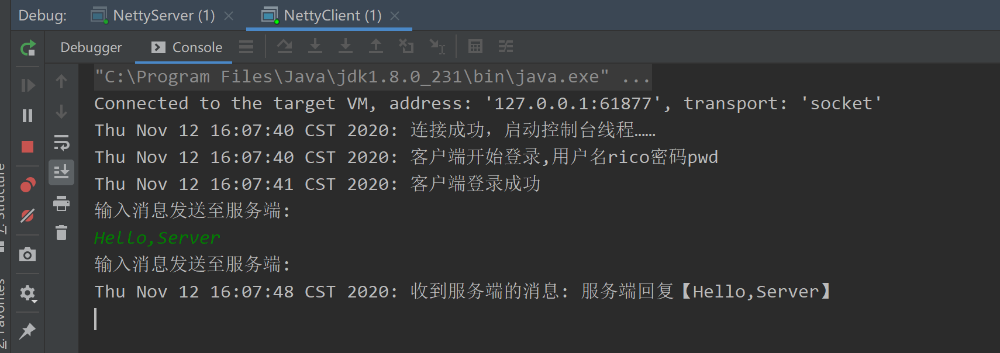
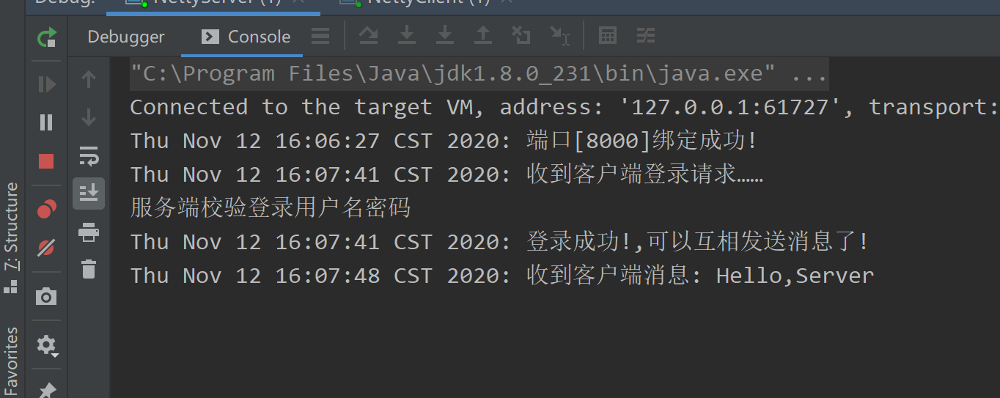
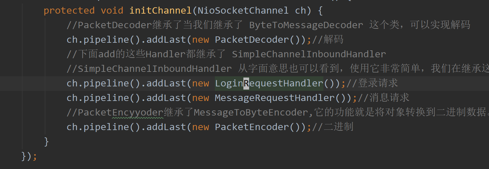

Netty入门与实战
https://netty.io/wiki/user-guide-for-4.x.html
IM系统简介
我们使用 Netty 统一的 IO 读写 API 以及强大的 pipeline 来编写业务处理逻辑，在后续的章节中，我会通过 IM 这个例子，带你逐步了解 Netty 的以下核心知识点。
- 服务端如何启动
- 客户端如何启动
- 数据载体 ByteBuf
- 长连自定义协议如何设计
- 粘包拆包原理与实践
- 如何实现自定义编解码
- pipeline 与 channelHandler
- 定时发心跳怎么做
- 如何进行连接空闲检测
客户端使用 Netty 的程序逻辑结构

上面这幅图展示了客户端的程序逻辑结构
- 首先，客户端会解析控制台指令，比如发送消息或者建立群聊等指令
- 然后，客户端会基于控制台的输入创建一个指令对象，用户告诉服务端具体要干什么事情
- TCP 通信需要的数据格式为二进制，因此，接下来通过自定义二进制协议将指令对象封装成二进制，这一步称为协议的编码
- 对于收到服务端的数据，首先需要截取出一段完整的二进制数据包（拆包粘包相关的内容后续小节会讲解）
- 将此二进制数据包解析成指令对象，比如收到消息
- 将指令对象送到对应的逻辑处理器来处理
服务端使用 Netty 的程序逻辑结构
服务端的程序逻辑结构与客户端非常类似，这里不太赘述。
Netty 是什么？
在开始了解 Netty 是什么之前，我们先来回顾一下，如果我们需要实现一个客户端与服务端通信的程序，使用传统的 IO 编程，应该如何来实现？
IO编程
我们简化下场景：客户端每隔两秒发送一个带有时间戳的 “hello world” 给服务端，服务端收到之后打印。
为了方便演示，下面例子中，服务端和客户端各一个类，把这两个类拷贝到你的 IDE 中，先后运行 IOServer.java 和IOClient.java可看到效果。
下面是传统的 IO 编程中服务端实现
IOServer.java
public class IOService {
public static void main(String[] args) throws Exception {
/**
Server 端首先创建了一个serverSocket来监听 8000 端口，然后创建一个线程，线程里面不断调用阻塞方法 serversocket.accept();获取新的连接，见(1)，
当获取到新的连接之后，给每条连接创建一个新的线程，这个线程负责从该连接中读取数据，见(2)，
然后读取数据是以字节流的方式，见(3)。
*/
ServerSocket serverSocket = new ServerSocket(8000);
// (1) 接收新连接线程
new Thread(() -> {
while (true) {
try {
// (1) 阻塞方法获取新的连接
Socket socket = serverSocket.accept();
// (2) 每一个新的连接都创建一个线程，负责读取数据
new Thread(() -> {
try {
int len;
byte[] data = new byte[1024];
InputStream inputStream = socket.getInputStream();
// (3) 按字节流方式读取数据
while ((len = inputStream.read(data)) != -1) {
System.out.println("收到客户端发来的数据:"+new String(data, 0, len));
}
} catch (IOException e) { }
}).start();
} catch (IOException e) { }
}
}).start();
}
}
Server 端首先创建了一个serverSocket来监听 8000 端口，然后创建一个线程，线程里面不断调用阻塞方法 serversocket.accept();获取新的连接，见(1)，当获取到新的连接之后，给每条连接创建一个新的线程，这个线程负责从该连接中读取数据，见(2)，然后读取数据是以字节流的方式，见(3)。
下面是传统的IO编程中客户端实现
IOClient.java
public class IOClient {
public static void main(String[] args) {
new Thread(() -> {
try {
Socket socket = new Socket("127.0.0.1", 8000);
while (true) {
try {
System.out.println("向服务端发送数据:"+new String(new Date()+"hello world"));
socket.getOutputStream().write((new Date() + ": hello world").getBytes());
Thread.sleep(2000);
} catch (Exception e) { }
}
} catch (IOException e) { }
}).start();
}
}
客户端的代码相对简单，连接上服务端 8000 端口之后，每隔 2 秒，我们向服务端写一个带有时间戳的 “hello world”。


IO 编程模型在客户端较少的情况下运行良好，但是对于客户端比较多的业务来说，单机服务端可能需要支撑成千上万的连接，IO 模型可能就不太合适了，我们来分析一下原因。
上面的 demo，从服务端代码中我们可以看到，在传统的 IO 模型中，每个连接创建成功之后都需要一个线程来维护，每个线程包含一个 while 死循环，那么 1w 个连接对应 1w 个线程，继而 1w 个 while 死循环，这就带来如下几个问题：
- 线程资源受限：线程是操作系统中非常宝贵的资源，同一时刻有大量的线程处于阻塞状态是非常严重的资源浪费，操作系统耗不起
- 线程切换效率低下：单机 CPU 核数固定，线程爆炸之后操作系统频繁进行线程切换，应用性能急剧下降。
- 除了以上两个问题，IO 编程中，我们看到数据读写是以字节流为单位。
为了解决这三个问题，JDK 在 1.4 之后提出了 NIO。
NIO 编程
关于 NIO 相关的文章网上也有很多，这里不打算详细深入分析，下面简单描述一下 NIO 是如何解决以上三个问题的。
线程资源受限
NIO 编程模型中，新来一个连接不再创建一个新的线程，而是可以把这条连接直接绑定到某个固定的线程，然后这条连接所有的读写都由这个线程来负责，那么他是怎么做到的？我们用一幅图来对比一下 IO 与 NIO
如上图所示，IO 模型中，一个连接来了，会创建一个线程，对应一个 while 死循环，死循环的目的就是不断监测这条连接上是否有数据可以读，大多数情况下，1w 个连接里面同一时刻只有少量的连接有数据可读，因此，很多个 while 死循环都白白浪费掉了，因为读不出啥数据。
而在 NIO 模型中，他把这么多 while 死循环变成一个死循环，这个死循环由一个线程控制，那么他又是如何做到一个线程，一个 while 死循环就能监测1w个连接是否有数据可读的呢？ 这就是 NIO 模型中 selector 的作用，一条连接来了之后，现在不创建一个 while 死循环去监听是否有数据可读了，而是直接把这条连接注册到 selector 上，然后，通过检查这个 selector，就可以批量监测出有数据可读的连接，进而读取数据，下面我再举个非常简单的生活中的例子说明 IO 与 NIO 的区别。
在一家幼儿园里，小朋友有上厕所的需求，小朋友都太小以至于你要问他要不要上厕所，他才会告诉你。幼儿园一共有 100 个小朋友，有两种方案可以解决小朋友上厕所的问题：
- 每个小朋友配一个老师。每个老师隔段时间询问小朋友是否要上厕所，如果要上，就领他去厕所，100 个小朋友就需要 100 个老师来询问，并且每个小朋友上厕所的时候都需要一个老师领着他去上，这就是IO模型，一个连接对应一个线程。
- 所有的小朋友都配同一个老师。这个老师隔段时间询问所有的小朋友是否有人要上厕所，然后每一时刻把所有要上厕所的小朋友批量领到厕所，这就是 NIO 模型，所有小朋友都注册到同一个老师，对应的就是所有的连接都注册到一个线程，然后批量轮询。
这就是 NIO 模型解决线程资源受限的方案，实际开发过程中，我们会开多个线程，每个线程都管理着一批连接，相对于 IO 模型中一个线程管理一条连接，消耗的线程资源大幅减少
线程切换效率低下
由于 NIO 模型中线程数量大大降低，线程切换效率因此也大幅度提高
IO读写面向流
IO 读写是面向流的，一次性只能从流中读取一个或者多个字节，并且读完之后流无法再读取，你需要自己缓存数据。 而 NIO 的读写是面向 Buffer 的，你可以随意读取里面任何一个字节数据，不需要你自己缓存数据，这一切只需要移动读写指针即可。
简单讲完了 JDK NIO 的解决方案之后，我们接下来使用 NIO 的方案替换掉 IO 的方案，我们先来看看，如果用 JDK 原生的 NIO 来实现服务端，该怎么做
public class NIOServer {
public static void main(String[] args) throws IOException {
Selector serverSelector = Selector.open();
Selector clientSelector = Selector.open();
new Thread(() -> {
try {
// 对应IO编程中服务端启动
ServerSocketChannel listenerChannel = ServerSocketChannel.open();
listenerChannel.socket().bind(new InetSocketAddress(8000));
listenerChannel.configureBlocking(false);
listenerChannel.register(serverSelector, SelectionKey.OP_ACCEPT);
while (true) {
// 监测是否有新的连接，这里的1指的是阻塞的时间为 1ms
if (serverSelector.select(1) > 0) {
Set<SelectionKey> set = serverSelector.selectedKeys();
Iterator<SelectionKey> keyIterator = set.iterator();
while (keyIterator.hasNext()) {
SelectionKey key = keyIterator.next();
if (key.isAcceptable()) {
try {
// (1) 每来一个新连接，不需要创建一个线程，而是直接注册到clientSelector
SocketChannel clientChannel = ((ServerSocketChannel) key.channel()).accept();
clientChannel.configureBlocking(false);
clientChannel.register(clientSelector, SelectionKey.OP_READ);
} finally {
keyIterator.remove();
}
}
}
}
}
} catch (IOException ignored) {
}
}).start();
new Thread(() -> {
try {
while (true) {
// (2) 批量轮询是否有哪些连接有数据可读，这里的1指的是阻塞的时间为 1ms
if (clientSelector.select(1) > 0) {
Set<SelectionKey> set = clientSelector.selectedKeys();
Iterator<SelectionKey> keyIterator = set.iterator();
while (keyIterator.hasNext()) {
SelectionKey key = keyIterator.next();
if (key.isReadable()) {
try {
SocketChannel clientChannel = (SocketChannel) key.channel();
ByteBuffer byteBuffer = ByteBuffer.allocate(1024);
// (3) 面向 Buffer
clientChannel.read(byteBuffer);
byteBuffer.flip();
System.out.println(Charset.defaultCharset().newDecoder().decode(byteBuffer)
.toString());
} finally {
keyIterator.remove();
key.interestOps(SelectionKey.OP_READ);
}
}
}
}
}
} catch (IOException ignored) {
}
}).start();
}
}
相信大部分没有接触过 NIO 的同学应该会直接跳过代码来到这一行：原来使用 JDK 原生 NIO 的 API 实现一个简单的服务端通信程序是如此复杂!
复杂得我都没耐心解释这一坨代码的执行逻辑(开个玩笑)，我们还是先对照 NIO 来解释一下几个核心思路
- NIO 模型中通常会有两个线程，每个线程绑定一个轮询器 selector ，在我们这个例子中
serverSelector负责轮询是否有新的连接，clientSelector负责轮询连接是否有数据可读 - 服务端监测到新的连接之后，不再创建一个新的线程，而是直接将新连接绑定到
clientSelector上，这样就不用 IO 模型中 1w 个 while 循环在死等，参见(1) clientSelector被一个 while 死循环包裹着，如果在某一时刻有多条连接有数据可读，那么通过clientSelector.select(1)方法可以轮询出来，进而批量处理，参见(2)- 数据的读写面向 Buffer，参见(3)
其他的细节部分，我不愿意多讲，因为实在是太复杂，你也不用对代码的细节深究到底。总之，强烈不建议直接基于JDK原生NIO来进行网络开发，下面是我总结的原因
- JDK 的 NIO 编程需要了解很多的概念，编程复杂，对 NIO 入门非常不友好，编程模型不友好，ByteBuffer 的 Api 简直反人类
- 对 NIO 编程来说，一个比较合适的线程模型能充分发挥它的优势，而 JDK 没有给你实现，你需要自己实现，就连简单的自定义协议拆包都要你自己实现
- JDK 的 NIO 底层由 epoll 实现，该实现饱受诟病的空轮询 bug 会导致 cpu 飙升 100%
- 项目庞大之后，自行实现的 NIO 很容易出现各类 bug，维护成本较高，上面这一坨代码我都不能保证没有 bug
正因为如此，我客户端代码都懒得写给你看了==!，你可以直接使用IOClient.java与NIOServer.java通信
JDK 的 NIO 犹如带刺的玫瑰，虽然美好，让人向往，但是使用不当会让你抓耳挠腮，痛不欲生，正因为如此，Netty 横空出世！
Netty编程
那么 Netty 到底是何方神圣？ 用一句简单的话来说就是：Netty 封装了 JDK 的 NIO，让你用得更爽，你不用再写一大堆复杂的代码了。 用官方正式的话来说就是：Netty 是一个异步事件驱动的网络应用框架，用于快速开发可维护的高性能服务器和客户端。
下面是我总结的使用 Netty 不使用 JDK 原生 NIO 的原因
- 使用 JDK 自带的NIO需要了解太多的概念，编程复杂，一不小心 bug 横飞
- Netty 底层 IO 模型随意切换，而这一切只需要做微小的改动，改改参数，Netty可以直接从 NIO 模型变身为 IO 模型
- Netty 自带的拆包解包，异常检测等机制让你从NIO的繁重细节中脱离出来，让你只需要关心业务逻辑
- Netty 解决了 JDK 的很多包括空轮询在内的 Bug
- Netty 底层对线程，selector 做了很多细小的优化，精心设计的 reactor 线程模型做到非常高效的并发处理
- 自带各种协议栈让你处理任何一种通用协议都几乎不用亲自动手
- Netty 社区活跃，遇到问题随时邮件列表或者 issue
- Netty 已经历各大 RPC 框架，消息中间件，分布式通信中间件线上的广泛验证，健壮性无比强大
看不懂没有关系，这些我们在后续的课程中我们都可以学到，接下来我们用 Netty 的版本来重新实现一下本文开篇的功能吧
首先，引入 Maven 依赖，本文后续 Netty 都是基于 4.1.6.Final 版本
然后，下面是服务端实现部分
/**
* 我们创建了两个NioEventLoopGroup，这两个对象可以看做是传统IO编程模型的两大线程组
* bossGroup表示监听端口，accept 新连接的线程组
* workerGroup表示处理每一条连接的数据读写的线程组
*/
NioEventLoopGroup boss = new NioEventLoopGroup();
NioEventLoopGroup worker = new NioEventLoopGroup();
//创建一个引导类 ServerBootstrap，这个类将引导我们进行服务端的启动工作
ServerBootstrap serverBootstrap = new ServerBootstrap();
serverBootstrap
//通过.group(bossGroup, workerGroup)给引导类配置两大线程组，这个引导类的线程模型也就定型了。
.group(boss, worker)
//然后，我们指定我们服务端的 IO 模型为NIO，我们通过.channel(NioServerSocketChannel.class)来指定 IO 模型，当然，这里也有其他的选择，如果你想指定 IO 模型为 BIO，那么这里配置上OioServerSocketChannel.class类型即可，当然通常我们也不会这么做，因为Netty的优势就在于NIO。
.channel(NioServerSocketChannel.class)
//我们调用childHandler()方法，给这个引导类创建一个ChannelInitializer，这里主要就是定义后续每条连接的数据读写
//ChannelInitializer这个类中，我们注意到有一个泛型参数NioSocketChannel，这个类呢，就是 Netty 对 NIO 类型的连接的抽象，而我们前面NioServerSocketChannel也是对 NIO 类型的连接的抽象，NioServerSocketChannel和NioSocketChannel的概念可以和 BIO 编程模型中的ServerSocket以及Socket两个概念对应上
.childHandler(new ChannelInitializer<NioSocketChannel>() {
protected void initChannel(NioSocketChannel ch) {
ch.pipeline().addLast(new StringDecoder());
ch.pipeline().addLast(new SimpleChannelInboundHandler<String>() {
@Override
protected void channelRead0(ChannelHandlerContext ctx, String msg) {
System.out.println(msg);
}
});
}
});
serverBootstrap.bind(8000);
/**
* 我们的最小化参数配置到这里就完成了
* 总结一下，要启动一个Netty服务端，必须要指定三类属性，分别是线程模型、IO 模型、连接读写处理逻辑.
* 有了这三者，之后在调用bind(8000)，我们就可以在本地绑定一个 8000 端口启动起来
*/
这么一小段代码就实现了我们前面 NIO 编程中的所有的功能，包括服务端启动，接受新连接，打印客户端传来的数据，怎么样，是不是比 JDK 原生的 NIO 编程优雅许多？
初学 Netty 的时候，由于大部分人对 NIO 编程缺乏经验，因此，将 Netty 里面的概念与 IO 模型结合起来可能更好理解
boss对应IOServer.java中的接受新连接线程，主要负责创建新连接worker对应IOServer.java中的负责读取数据的线程，主要用于读取数据以及业务逻辑处理
然后剩下的逻辑我在后面的系列文章中会详细分析，你可以先把这段代码拷贝到你的 IDE 里面，然后运行 main 函数
然后下面是客户端 NIO 的实现部分
//NettyClient.java
public class NettyClient {
public static void main(String[] args) throws InterruptedException {
Bootstrap bootstrap = new Bootstrap();
NioEventLoopGroup group = new NioEventLoopGroup();
bootstrap.group(group)
.channel(NioSocketChannel.class)
.handler(new ChannelInitializer<Channel>() {
@Override
protected void initChannel(Channel ch) {
ch.pipeline().addLast(new StringEncoder());
}
});
Channel channel = bootstrap.connect("127.0.0.1", 8000).channel();
while (true) {
channel.writeAndFlush(new Date() + ": hello world!");
Thread.sleep(2000);
}
}
}
在客户端程序中，group对应了我们IOClient.java中 main 函数起的线程，剩下的逻辑我在后面的文章中会详细分析，现在你要做的事情就是把这段代码拷贝到你的 IDE 里面，然后运行 main 函数，最后回到 NettyServer.java 的控制台，你会看到效果。
使用 Netty 之后是不是觉得整个世界都美好了，一方面 Netty 对 NIO 封装得如此完美，写出来的代码非常优雅，另外一方面，使用 Netty 之后，网络通信这块的性能问题几乎不用操心，尽情地让 Netty 榨干你的 CPU 吧。
服务端启动流程
这一小节，我们来学习一下如何使用 Netty 来启动一个服务端应用程序，以下是服务端启动的一个非常精简的 Demo:
NettyServer.java
public class NettyServer {
public static void main(String[] args) {
NioEventLoopGroup bossGroup = new NioEventLoopGroup();
NioEventLoopGroup workerGroup = new NioEventLoopGroup();
ServerBootstrap serverBootstrap = new ServerBootstrap();
serverBootstrap
.group(bossGroup, workerGroup)
.channel(NioServerSocketChannel.class)
.childHandler(new ChannelInitializer<NioSocketChannel>() {
protected void initChannel(NioSocketChannel ch) {
}
});
serverBootstrap.bind(8000);
}
}
- 首先看到，我们创建了两个
NioEventLoopGroup，这两个对象可以看做是传统IO编程模型的两大线程组，bossGroup表示监听端口，accept 新连接的线程组，workerGroup表示处理每一条连接的数据读写的线程组，不理解的同学可以看一下上一小节《Netty是什么》。用生活中的例子来讲就是，一个工厂要运作，必然要有一个老板负责从外面接活，然后有很多员工，负责具体干活，老板就是bossGroup，员工们就是workerGroup，bossGroup接收完连接，扔给workerGroup去处理。 - 接下来 我们创建了一个引导类
ServerBootstrap，这个类将引导我们进行服务端的启动工作，直接new出来开搞。 - 我们通过
.group(bossGroup, workerGroup)给引导类配置两大线程组，这个引导类的线程模型也就定型了。 - 然后，我们指定我们服务端的 IO 模型为
NIO，我们通过.channel(NioServerSocketChannel.class)来指定 IO 模型，当然，这里也有其他的选择，如果你想指定 IO 模型为 BIO，那么这里配置上OioServerSocketChannel.class类型即可，当然通常我们也不会这么做，因为Netty的优势就在于NIO。 - 接着，我们调用
childHandler()方法，给这个引导类创建一个ChannelInitializer，这里主要就是定义后续每条连接的数据读写，业务处理逻辑，不理解没关系，在后面我们会详细分析。ChannelInitializer这个类中，我们注意到有一个泛型参数NioSocketChannel，这个类呢，就是 Netty 对 NIO 类型的连接的抽象，而我们前面NioServerSocketChannel也是对 NIO 类型的连接的抽象，NioServerSocketChannel和NioSocketChannel的概念可以和 BIO 编程模型中的ServerSocket以及Socket两个概念对应上
我们的最小化参数配置到这里就完成了，我们总结一下就是，要启动一个Netty服务端，必须要指定三类属性，分别是线程模型、IO 模型、连接读写处理逻辑，有了这三者，之后在调用bind(8000)，我们就可以在本地绑定一个 8000 端口启动起来，以上这段代码读者可以直接拷贝到你的 IDE 中运行。
自动绑定递增端口
在上面代码中我们绑定了 8000 端口，接下来我们实现一个稍微复杂一点的逻辑，我们指定一个起始端口号，比如 1000，然后呢，我们从1000号端口往上找一个端口，直到这个端口能够绑定成功，比如 1000 端口不可用，我们就尝试绑定 1001，然后 1002，依次类推。
serverBootstrap.bind(8000);这个方法呢，它是一个异步的方法，调用之后是立即返回的，他的返回值是一个ChannelFuture，我们可以给这个ChannelFuture添加一个监听器GenericFutureListener，然后我们在GenericFutureListener的operationComplete方法里面，我们可以监听端口是否绑定成功，接下来是监测端口是否绑定成功的代码片段
serverBootstrap.bind(8000).addListener(new GenericFutureListener<Future<? super Void>>() {
public void operationComplete(Future<? super Void> future) {
if (future.isSuccess()) {
System.out.println("端口绑定成功!");
} else {
System.err.println("端口绑定失败!");
}
}
});
我们接下来从 1000 端口号，开始往上找端口号，直到端口绑定成功，我们要做的就是在 if (future.isSuccess())的else逻辑里面重新绑定一个递增的端口号，接下来，我们把这段绑定逻辑抽取出一个bind方法
private static void bind(final ServerBootstrap serverBootstrap, final int port) {
serverBootstrap.bind(port).addListener(new GenericFutureListener<Future<? super Void>>() {
public void operationComplete(Future<? super Void> future) {
if (future.isSuccess()) {
System.out.println("端口[" + port + "]绑定成功!");
} else {
System.err.println("端口[" + port + "]绑定失败!");
bind(serverBootstrap, port + 1);
}
}
});
}
然后呢，以上代码中最关键的就是在端口绑定失败之后，重新调用自身方法，并且把端口号加一，然后，在我们的主流程里面，我们就可以直接调用
bind(serverBootstrap, 1000)
读者可以自定修改代码，运行之后可以看到效果，最终会发现，端口成功绑定了在1024，从 1000 开始到 1023，端口均绑定失败了，这是因为在我的 MAC 系统下，1023 以下的端口号都是被系统保留了，需要 ROOT 权限才能绑定。
以上就是自动绑定递增端口的逻辑，接下来，我们来一起学习一下，服务端启动，我们的引导类ServerBootstrap除了指定线程模型，IO 模型，连接读写处理逻辑之外，他还可以干哪些事情？
服务端启动其他方法
handler() 方法
serverBootstrap.handler(new ChannelInitializer<NioServerSocketChannel>() {
protected void initChannel(NioServerSocketChannel ch) {
System.out.println("服务端启动中");
}
})
handler()方法呢，可以和我们前面分析的childHandler()方法对应起来，childHandler()用于指定处理新连接数据的读写处理逻辑，handler()用于指定在服务端启动过程中的一些逻辑，通常情况下呢，我们用不着这个方法。
attr() 方法
serverBootstrap.attr(AttributeKey.newInstance("serverName"), "nettyServer")
attr()方法可以给服务端的 channel，也就是NioServerSocketChannel指定一些自定义属性，然后我们可以通过channel.attr()取出这个属性，比如，上面的代码我们指定我们服务端channel的一个serverName属性，属性值为nettyServer，其实说白了就是给NioServerSocketChannel维护一个map而已，通常情况下，我们也用不上这个方法。
那么，当然，除了可以给服务端 channel NioServerSocketChannel指定一些自定义属性之外，我们还可以给每一条连接指定自定义属性
childAttr() 方法
serverBootstrap.childAttr(AttributeKey.newInstance("clientKey"), "clientValue")
上面的childAttr可以给每一条连接指定自定义属性，然后后续我们可以通过channel.attr()取出该属性。
childOption() 方法
serverBootstrap
.childOption(ChannelOption.SO_KEEPALIVE, true)
.childOption(ChannelOption.TCP_NODELAY, true)
childOption()可以给每条连接设置一些TCP底层相关的属性，比如上面，我们设置了两种TCP属性，其中
ChannelOption.SO_KEEPALIVE表示是否开启TCP底层心跳机制，true为开启ChannelOption.TCP_NODELAY表示是否开启Nagle算法，true表示关闭，false表示开启，通俗地说，如果要求高实时性，有数据发送时就马上发送，就关闭，如果需要减少发送次数减少网络交互，就开启。
其他的参数这里就不一一讲解，有兴趣的同学可以去这个类里面自行研究。
option() 方法
除了给每个连接设置这一系列属性之外，我们还可以给服务端channel设置一些属性，最常见的就是so_backlog，如下设置
serverBootstrap.option(ChannelOption.SO_BACKLOG, 1024)
表示系统用于临时存放已完成三次握手的请求的队列的最大长度，如果连接建立频繁，服务器处理创建新连接较慢，可以适当调大这个参数
总结
- 本文中，我们首先学习了 Netty 服务端启动的流程，一句话来说就是：创建一个引导类，然后给他指定线程模型，IO模型，连接读写处理逻辑，绑定端口之后，服务端就启动起来了。
- 然后，我们学习到 bind 方法是异步的，我们可以通过这个异步机制来实现端口递增绑定。
- 最后呢，我们讨论了 Netty 服务端启动额外的参数，主要包括给服务端 Channel 或者客户端 Channel 设置属性值，设置底层 TCP 参数。
如果，你觉得这个过程比较简单，想深入学习，了解服务端启动的底层原理，可参考这里。
客户端启动流程
上一小节，我们已经学习了 Netty 服务端启动的流程，这一小节，我们来学习一下 Netty 客户端的启动流程。
客户端启动 Demo
对于客户端的启动来说，和服务端的启动类似，依然需要线程模型、IO 模型，以及 IO 业务处理逻辑三大参数，下面，我们来看一下客户端启动的标准流程
NettyClient.java
public class NettyClient {
public static void main(String[] args) throws InterruptedException {
//客户端启动的引导类是 Bootstrap，负责启动客户端以及连接服务端，而上一小节我们在描述服务端的启动的时候，这个辅导类是 ServerBootstrap
Bootstrap bootstrap = new Bootstrap();//服务端是ServerBootstrap,客户端时Bootstrap
NioEventLoopGroup group = new NioEventLoopGroup();
bootstrap
// 1.指定线程模型
.group(group)
// 2.指定 IO 类型为 NIO
.channel(NioSocketChannel.class)
//给引导类指定一个 handler，这里主要就是定义连接的业务处理逻辑
.handler(new ChannelInitializer<Channel>() {
@Override
protected void initChannel(Channel ch) {
ch.pipeline().addLast(new StringEncoder());
}
});
// // 4.建立连接
//配置完线程模型、IO 模型、业务处理逻辑之后，调用 connect 方法进行连接，可以看到 connect 方法有两个参数，第一个参数可以填写 IP 或者域名，第二个参数填写的是端口号，由于 connect 方法返回的是一个 Future，也就是说这个方是异步的，我们通过 addListener 方法可以监听到连接是否成功，进而打印出连接信息
Channel channel = bootstrap.connect("127.0.0.1", 8000).addListener(future -> {
//connect 方法返回的是一个 Future，也就是说这个方是异步的，我们通过 addListener 方法可以监听到连接是否成功，进而打印出连接信息
if (future.isSuccess()) {
System.out.println("连接成功!");
} else {
System.err.println("连接失败!");
}
}).channel();
while (true) {
channel.writeAndFlush(new Date() + ": hello world!");
Thread.sleep(2000);
}
}
}
从上面代码可以看到，客户端启动的引导类是 Bootstrap，负责启动客户端以及连接服务端，而上一小节我们在描述服务端的启动的时候，这个辅导类是 ServerBootstrap，引导类创建完成之后，下面我们描述一下客户端启动的流程
- 首先，与服务端的启动一样，我们需要给它指定线程模型，驱动着连接的数据读写，这个线程的概念可以和第一小节Netty是什么中的
IOClient.java创建的线程联系起来 - 然后，我们指定 IO 模型为
NioSocketChannel，表示 IO 模型为 NIO，当然，你可以可以设置 IO 模型为OioSocketChannel，但是通常不会这么做，因为 Netty 的优势在于 NIO - 接着，给引导类指定一个
handler，这里主要就是定义连接的业务处理逻辑，不理解没关系，在后面我们会详细分析 - 配置完线程模型、IO 模型、业务处理逻辑之后，调用
connect方法进行连接，可以看到connect方法有两个参数，第一个参数可以填写 IP 或者域名，第二个参数填写的是端口号，由于connect方法返回的是一个Future，也就是说这个方是异步的，我们通过addListener方法可以监听到连接是否成功，进而打印出连接信息
到了这里，一个客户端的启动的 Demo 就完成了，其实只要和 客户端 Socket 编程模型对应起来，这里的三个概念就会显得非常简单，遗忘掉的同学可以回顾一下 Netty是什么中的 IOClient.java 再回来看这里的启动流程哦
失败重连
在网络情况差的情况下，客户端第一次连接可能会连接失败，这个时候我们可能会尝试重新连接，重新连接的逻辑写在连接失败的逻辑块里
bootstrap.connect("juejin.im", 80).addListener(future -> {
if (future.isSuccess()) {
System.out.println("连接成功!");
} else {
System.err.println("连接失败!");
// 重新连接
}
});
重新连接的时候，依然是调用一样的逻辑，因此，我们把建立连接的逻辑先抽取出来，然后在重连失败的时候，递归调用自身
private static void connect(Bootstrap bootstrap, String host, int port) {
bootstrap.connect(host, port).addListener(future -> {
if (future.isSuccess()) {
System.out.println("连接成功!");
} else {
System.err.println("连接失败，开始重连");
connect(bootstrap, host, port);
}
});
}
上面这一段便是带有自动重连功能的逻辑，可以看到在连接建立失败的时候，会调用自身进行重连。
但是，通常情况下，连接建立失败不会立即重新连接，而是会通过一个指数退避的方式，比如每隔 1 秒、2 秒、4 秒、8 秒，以 2 的幂次来建立连接，然后到达一定次数之后就放弃连接，接下来我们就来实现一下这段逻辑，我们默认重试 5 次
connect(bootstrap, "juejin.im", 80, MAX_RETRY);
private static void connect(Bootstrap bootstrap, String host, int port, int retry) {
bootstrap.connect(host, port).addListener(future -> {
if (future.isSuccess()) {
System.out.println("连接成功!");
} else if (retry == 0) {
System.err.println("重试次数已用完，放弃连接！");
} else {
// 第几次重连
int order = (MAX_RETRY - retry) + 1;
// 本次重连的间隔
int delay = 1 << order;
System.err.println(new Date() + ": 连接失败，第" + order + "次重连……");
bootstrap.config().group().schedule(() -> connect(bootstrap, host, port, retry - 1), delay, TimeUnit
.SECONDS);
}
});
}
从上面的代码可以看到，通过判断连接是否成功以及剩余重试次数，分别执行不同的逻辑
- 如果连接成功则打印连接成功的消息
- 如果连接失败但是重试次数已经用完，放弃连接
- 如果连接失败但是重试次数仍然没有用完，则计算下一次重连间隔
delay，然后定期重连
在上面的代码中，我们看到，我们定时任务是调用 bootstrap.config().group().schedule(), 其中 bootstrap.config() 这个方法返回的是 BootstrapConfig，他是对 Bootstrap 配置参数的抽象，然后 bootstrap.config().group() 返回的就是我们在一开始的时候配置的线程模型 workerGroup，调 workerGroup 的 schedule 方法即可实现定时任务逻辑。
在 schedule 方法块里面，前面四个参数我们原封不动地传递，最后一个重试次数参数减掉一，就是下一次建立连接时候的上下文信息。读者可以自行修改代码，更改到一个连接不上的服务端 Host 或者 Port，查看控制台日志就可以看到5次重连日志。
以上就是实现指数退避的客户端重连逻辑，接下来，我们来一起学习一下，客户端启动，我们的引导类Bootstrap除了指定线程模型，IO 模型，连接读写处理逻辑之外，他还可以干哪些事情？
客户端启动其他方法
attr() 方法
bootstrap.attr(AttributeKey.newInstance("clientName"), "nettyClient")
attr() 方法可以给客户端 Channel，也就是NioSocketChannel绑定自定义属性，然后我们可以通过channel.attr()取出这个属性，比如，上面的代码我们指定我们客户端 Channel 的一个clientName属性，属性值为nettyClient，其实说白了就是给NioSocketChannel维护一个 map 而已，后续在这个 NioSocketChannel 通过参数传来传去的时候，就可以通过他来取出设置的属性，非常方便。
option() 方法
Bootstrap
.option(ChannelOption.CONNECT_TIMEOUT_MILLIS, 5000)
.option(ChannelOption.SO_KEEPALIVE, true)
.option(ChannelOption.TCP_NODELAY, true)
option() 方法可以给连接设置一些 TCP 底层相关的属性，比如上面，我们设置了三种 TCP 属性，其中
ChannelOption.CONNECT_TIMEOUT_MILLIS表示连接的超时时间，超过这个时间还是建立不上的话则代表连接失败ChannelOption.SO_KEEPALIVE表示是否开启 TCP 底层心跳机制，true 为开启ChannelOption.TCP_NODELAY表示是否开始 Nagle 算法，true 表示关闭，false 表示开启，通俗地说，如果要求高实时性，有数据发送时就马上发送，就设置为 true 关闭，如果需要减少发送次数减少网络交互，就设置为 false 开启
其他的参数这里就不一一讲解，有兴趣的同学可以去这个类里面自行研究。
总结
- 本文中，我们首先学习了 Netty 客户端启动的流程，一句话来说就是：创建一个引导类，然后给他指定线程模型，IO 模型，连接读写处理逻辑，连接上特定主机和端口，客户端就启动起来了。
- 然后，我们学习到
connect方法是异步的，我们可以通过这个异步回调机制来实现指数退避重连逻辑。 - 最后呢，我们讨论了 Netty 客户端启动额外的参数，主要包括给客户端 Channel 绑定自定义属性值，设置底层 TCP 参数。
实战：客户端与服务端双向通信
在前面两个小节，我们已经学习了服务端启动与客户端启动的流程，熟悉了这两个过程之后，就可以建立服务端与客户端之间的通信了，本小节，我们用一个非常简单的 Demo 来了解一下服务端和客户端是如何来通信的。
本小节，我们要实现的功能是：客户端连接成功之后，向服务端写一段数据 ，服务端收到数据之后打印，并向客户端回一段数据，文章里面展示的是核心代码，完整代码请参考 GitHub
客户端发数据到服务端
在客户端启动流程这一小节，我们提到， 客户端相关的数据读写逻辑是通过 Bootstrap 的 handler() 方法指定
.handler(new ChannelInitializer<SocketChannel>() {
@Override
public void initChannel(SocketChannel ch) {
// 指定连接数据读写逻辑
}
});
现在，我们在 initChannel() 方法里面给客户端添加一个逻辑处理器，这个处理器的作用就是负责向服务端写数据
.handler(new ChannelInitializer<SocketChannel>() {
@Override
public void initChannel(SocketChannel ch) {
ch.pipeline().addLast(new FirstClientHandler());
}
});
ch.pipeline()返回的是和这条连接相关的逻辑处理链，采用了责任链模式，这里不理解没关系，后面会讲到- 然后再调用
addLast()方法 添加一个逻辑处理器，这个逻辑处理器为的就是在客户端建立连接成功之后，向服务端写数据，下面是这个逻辑处理器相关的代码
public class FirstClientHandler extends ChannelInboundHandlerAdapter {
@Override
public void channelActive(ChannelHandlerContext ctx) {
System.out.println(new Date() + ": 客户端写出数据");
// 1. 获取数据
ByteBuf buffer = getByteBuf(ctx);
// 2. 写数据
ctx.channel().writeAndFlush(buffer);
}
private ByteBuf getByteBuf(ChannelHandlerContext ctx) {
// 1. 获取二进制抽象 ByteBuf
ByteBuf buffer = ctx.alloc().buffer();
// 2. 准备数据，指定字符串的字符集为 utf-8
byte[] bytes = "你好，Rico!".getBytes(Charset.forName("utf-8"));
// 3. 填充数据到 ByteBuf
buffer.writeBytes(bytes);
return buffer;
}
}
- 这个逻辑处理器继承自 ChannelInboundHandlerAdapter，然后覆盖了 channelActive()方法 ，这个方法会在客户端连接建立成功之后被调用
- 客户端连接建立成功之后，调用到
channelActive()方法，在这个方法里面，我们编写向服务端写数据的逻辑 - 写数据的逻辑分为两步：首先我们需要获取一个 netty 对二进制数据的抽象
ByteBuf，上面代码中,ctx.alloc()获取到一个ByteBuf的内存管理器，这个 内存管理器的作用就是分配一个ByteBuf，然后我们把字符串的二进制数据填充到ByteBuf，这样我们就获取到了 Netty 需要的一个数据格式，最后我们调用ctx.channel().writeAndFlush()把数据写到服务端
以上就是客户端启动之后，向服务端写数据的逻辑，我们可以看到，和传统的 socket 编程不同的是，Netty 里面数据是以 ByteBuf 为单位的， 所有需要写出的数据都必须塞到一个 ByteBuf，数据的写出是如此，数据的读取亦是如此，接下来我们就来看一下服务端是如何读取到这段数据的。
服务端读取客户端数据
在服务端端启动流程这一小节，我们提到， 服务端相关的数据处理逻辑是通过 ServerBootstrap 的 childHandler() 方法指定
.childHandler(new ChannelInitializer<NioSocketChannel>() {
protected void initChannel(NioSocketChannel ch) {
// 指定连接数据读写逻辑
}
});
现在，我们在 initChannel() 方法里面给服务端添加一个逻辑处理器，这个处理器的作用就是负责读取客户端来的数据
.childHandler(new ChannelInitializer<NioSocketChannel>() {
protected void initChannel(NioSocketChannel ch) {
ch.pipeline().addLast(new FirstServerHandler());
}
});
这个方法里面的逻辑和客户端侧类似，获取服务端侧关于这条连接的逻辑处理链 pipeline，然后添加一个逻辑处理器，负责读取客户端发来的数据
public class FirstServerHandler extends ChannelInboundHandlerAdapter {
@Override
public void channelRead(ChannelHandlerContext ctx, Object msg) {
ByteBuf byteBuf = (ByteBuf) msg;
System.out.println(new Date() + ": 服务端读到数据 -> " + byteBuf.toString(Charset.forName("utf-8")));
}
}
服务端侧的逻辑处理器同样继承自 ChannelInboundHandlerAdapter，与客户端不同的是，这里覆盖的方法是 channelRead()，这个方法在接收到客户端发来的数据之后被回调。
这里的 msg 参数指的就是 Netty 里面数据读写的载体，为什么这里不直接是 ByteBuf，而需要我们强转一下，我们后面会分析到。这里我们强转之后，然后调用 byteBuf.toString() 就能够拿到我们客户端发过来的字符串数据。
我们先运行服务端，再运行客户端
服务端回数据给客户端
服务端向客户端写数据逻辑与客户端侧的写数据逻辑一样，先创建一个 ByteBuf，然后填充二进制数据，最后调用 writeAndFlush() 方法写出去，下面是服务端回数据的代码
public class FirstServerHandler extends ChannelInboundHandlerAdapter {
@Override
public void channelRead(ChannelHandlerContext ctx, Object msg) {
// ... 收数据逻辑省略
// 回复数据到客户端
System.out.println(new Date() + ": 服务端写出数据");
ByteBuf out = getByteBuf(ctx);
ctx.channel().writeAndFlush(out);
}
private ByteBuf getByteBuf(ChannelHandlerContext ctx) {
byte[] bytes = "你好，欢迎关注我!".getBytes(Charset.forName("utf-8"));
ByteBuf buffer = ctx.alloc().buffer();
buffer.writeBytes(bytes);
return buffer;
}
}
现在，轮到客户端了。客户端的读取数据的逻辑和服务端读取数据的逻辑一样，同样是覆盖 ChannelRead() 方法
public class FirstClientHandler extends ChannelInboundHandlerAdapter {
// 写数据相关的逻辑省略
@Override
public void channelRead(ChannelHandlerContext ctx, Object msg) {
ByteBuf byteBuf = (ByteBuf) msg;
System.out.println(new Date() + ": 客户端读到数据 -> " + byteBuf.toString(Charset.forName("utf-8")));
}
}
将这段逻辑添加到客户端之后逻辑处理器 FirstClientHandler 之后，客户端就能收到服务端发来的数据
客户端与服务端的读写数据的逻辑完成之后，我们先运行服务端，再运行客户端，控制台输出如下
完整代码NettyServer.java,FirstServerHandler; NettyClient.java ,FirstClientHandler.java
NettyServer.java
public static void main(String[] args) {
/**
* 我们创建了两个NioEventLoopGroup，这两个对象可以看做是传统IO编程模型的两大线程组
* bossGroup表示监听端口，accept 新连接的线程组
* workerGroup表示处理每一条连接的数据读写的线程组
*/
NioEventLoopGroup boss = new NioEventLoopGroup();
NioEventLoopGroup worker = new NioEventLoopGroup();
//创建一个引导类 ServerBootstrap，这个类将引导我们进行服务端的启动工作
ServerBootstrap serverBootstrap = new ServerBootstrap();
serverBootstrap
//通过.group(bossGroup, workerGroup)给引导类配置两大线程组，这个引导类的线程模型也就定型了。
.group(boss, worker)
//然后，我们指定我们服务端的 IO 模型为NIO，我们通过.channel(NioServerSocketChannel.class)来指定 IO 模型，当然，这里也有其他的选择，如果你想指定 IO 模型为 BIO，那么这里配置上OioServerSocketChannel.class类型即可，当然通常我们也不会这么做，因为Netty的优势就在于NIO。
.channel(NioServerSocketChannel.class)
//我们调用childHandler()方法，给这个引导类创建一个ChannelInitializer，这里主要就是定义后续每条连接的数据读写
//ChannelInitializer这个类中，我们注意到有一个泛型参数NioSocketChannel，这个类呢，就是 Netty 对 NIO 类型的连接的抽象，而我们前面NioServerSocketChannel也是对 NIO 类型的连接的抽象，NioServerSocketChannel和NioSocketChannel的概念可以和 BIO 编程模型中的ServerSocket以及Socket两个概念对应上
.childHandler(new ChannelInitializer<NioSocketChannel>() {
protected void initChannel(NioSocketChannel ch) {
ch.pipeline().addLast(new FirstServerHandler());
}
});
serverBootstrap.bind(8000);
/**
* 我们的最小化参数配置到这里就完成了
* 总结一下，要启动一个Netty服务端，必须要指定三类属性，分别是线程模型、IO 模型、连接读写处理逻辑.
* 有了这三者，之后在调用bind(8000)，我们就可以在本地绑定一个 8000 端口启动起来
*/
}
FirstServerHandler.java
public class FirstServerHandler extends ChannelInboundHandlerAdapter {
//服务端侧的逻辑处理器同样继承自ChannelInboundHandlerAdapter,
//与客户端不同的是，这里覆盖的方法是channelRead()，这个方法在接收到客户端发来的数据之后被回调。
@Override
public void channelRead(ChannelHandlerContext ctx, Object msg) {
//接受客户端数据
ByteBuf byteBuf = (ByteBuf) msg;
System.out.println(new Date() + ": 服务端接收到数据 -> " + byteBuf.toString(Charset.forName("utf-8")));
//回复数据到客户端
System.out.println(new Date() + ": 服务端写出数据");
ByteBuf out = getByteBuf(ctx);
ctx.channel().writeAndFlush(out);
}
private ByteBuf getByteBuf(ChannelHandlerContext ctx) {
byte[] bytes = "你好，客户端,我是服务端!".getBytes(Charset.forName("utf-8"));
ByteBuf buffer = ctx.alloc().buffer();
buffer.writeBytes(bytes);
return buffer;
}
}
NettyClient.java
public static void main(String[] args) throws InterruptedException {
//客户端启动的引导类是 Bootstrap，负责启动客户端以及连接服务端，而上一小节我们在描述服务端的启动的时候，这个辅导类是 ServerBootstrap
Bootstrap bootstrap = new Bootstrap();//服务端是ServerBootstrap,客户端时Bootstrap
NioEventLoopGroup group = new NioEventLoopGroup();
bootstrap
// 1.指定线程模型
.group(group)
// 2.指定 IO 类型为 NIO
.channel(NioSocketChannel.class)
//给引导类指定一个 handler，这里主要就是定义连接的业务处理逻辑
.handler(new ChannelInitializer<Channel>() {
@Override
protected void initChannel(Channel ch) {
ch.pipeline().addLast(new FirstClientHandler());//客户端连接建立成功之后，会调用channelActive()这个方法
}
});
// // 4.建立连接
//配置完线程模型、IO 模型、业务处理逻辑之后，调用 connect 方法进行连接，可以看到 connect 方法有两个参数，第一个参数可以填写 IP 或者域名，第二个参数填写的是端口号，由于 connect 方法返回的是一个 Future，也就是说这个方是异步的，我们通过 addListener 方法可以监听到连接是否成功，进而打印出连接信息
Channel channel = bootstrap.connect("127.0.0.1", 8000).addListener(future -> {
//connect 方法返回的是一个 Future，也就是说这个方是异步的，我们通过 addListener 方法可以监听到连接是否成功，进而打印出连接信息
if (future.isSuccess()) {
System.out.println("连接成功!");
} else {
System.err.println("连接失败!");
}
}).channel();
}
FirstClientHandlerj.java
public class FirstClientHandler extends ChannelInboundHandlerAdapter {
//客户端连接建立成功之后，会调用channelActive()这个方法
@Override
public void channelActive(ChannelHandlerContext ctx) {
System.out.println(new Date() + ": 客户端写出数据");
// 1. 获取数据
ByteBuf buffer = getByteBuf(ctx);
// 2. 写数据
ctx.channel().writeAndFlush(buffer);
}
@Override
//接受数据
public void channelRead(ChannelHandlerContext ctx, Object msg) {
ByteBuf byteBuf = (ByteBuf) msg;
System.out.println(new Date() + ": 客户端读到数据 -> " + byteBuf.toString(Charset.forName("utf-8")));
}
private ByteBuf getByteBuf(ChannelHandlerContext ctx) {
// 1. 获取二进制抽象 ByteBuf
ByteBuf buffer = ctx.alloc().buffer();
// 2. 准备数据，指定字符串的字符集为 utf-8
byte[] bytes = "你好，服务端,我是客户端!".getBytes(Charset.forName("utf-8"));
// 3. 填充数据到 ByteBuf
buffer.writeBytes(bytes);
return buffer;
}
到这里，我们本小节要实现的客户端与服务端双向通信的功能实现完毕，最后，我们对本小节做一个总结。
总结
- 本文中，我们了解到客户端和服务端的逻辑处理是均是在启动的时候，通过给逻辑处理链
pipeline添加逻辑处理器，来编写数据的读写逻辑，pipeline的逻辑我们在后面会分析。 - 接下来，我们学到，在客户端连接成功之后会回调到逻辑处理器的 channelActive() 方法，而不管是服务端还是客户端，收到数据之后都会调用到 channelRead 方法。
- 写数据调用
writeAndFlush方法，客户端与服务端交互的二进制数据载体为ByteBuf，ByteBuf通过连接的内存管理器创建，字节数据填充到ByteBuf之后才能写到对端，接下来一小节，我们就来重点分析ByteBuf。
数据传输载体 ByteBuf 介绍
在前面一小节，我们已经了解到 Netty 里面数据读写是以 ByteBuf 为单位进行交互的，这一小节，我们就来详细剖析一下 ByteBuf
ByteBuf结构
首先，我们先来了解一下 ByteBuf 的结构
以上就是一个 ByteBuf 的结构图，从上面这幅图可以看到
- ByteBuf 是一个字节容器，容器里面的的数据分为三个部分，第一个部分是已经丢弃的字节，这部分数据是无效的；第二部分是可读字节，这部分数据是 ByteBuf 的主体数据， 从 ByteBuf 里面读取的数据都来自这一部分;最后一部分的数据是可写字节，所有写到 ByteBuf 的数据都会写到这一段。最后一部分虚线表示的是该 ByteBuf 最多还能扩容多少容量
- 以上三段内容是被两个指针给划分出来的，从左到右，依次是读指针（readerIndex）、写指针（writerIndex），然后还有一个变量 capacity，表示 ByteBuf 底层内存的总容量
- 从 ByteBuf 中每读取一个字节，readerIndex 自增1，ByteBuf 里面总共有 writerIndex-readerIndex 个字节可读, 由此可以推论出当 readerIndex 与 writerIndex 相等的时候，ByteBuf 不可读
- 写数据是从 writerIndex 指向的部分开始写，每写一个字节，writerIndex 自增1，直到增到 capacity，这个时候，表示 ByteBuf 已经不可写了
- ByteBuf 里面其实还有一个参数 maxCapacity，当向 ByteBuf 写数据的时候，如果容量不足，那么这个时候可以进行扩容，直到 capacity 扩容到 maxCapacity，超过 maxCapacity 就会报错
Netty 使用 ByteBuf 这个数据结构可以有效地区分可读数据和可写数据，读写之间相互没有冲突，当然，ByteBuf 只是对二进制数据的抽象，具体底层的实现我们在下面的小节会讲到，在这一小节，我们 只需要知道 Netty 关于数据读写只认 ByteBuf，下面，我们就来学习一下 ByteBuf 常用的 API
容量 API
capacity()
表示 ByteBuf 底层占用了多少字节的内存（包括丢弃的字节、可读字节、可写字节），不同的底层实现机制有不同的计算方式，后面我们讲 ByteBuf 的分类的时候会讲到
maxCapacity()
表示 ByteBuf 底层最大能够占用多少字节的内存，当向 ByteBuf 中写数据的时候，如果发现容量不足，则进行扩容，直到扩容到 maxCapacity，超过这个数，就抛异常
readableBytes() 与 isReadable()
readableBytes() 表示 ByteBuf 当前可读的字节数，它的值等于 writerIndex-readerIndex，如果两者相等，则不可读，isReadable() 方法返回 false
writableBytes()、 isWritable() 与 maxWritableBytes()
writableBytes() 表示 ByteBuf 当前可写的字节数，它的值等于 capacity-writerIndex，如果两者相等，则表示不可写，isWritable() 返回 false，但是这个时候，并不代表不能往 ByteBuf 中写数据了， 如果发现往 ByteBuf 中写数据写不进去的话，Netty 会自动扩容 ByteBuf，直到扩容到底层的内存大小为 maxCapacity，而 maxWritableBytes() 就表示可写的最大字节数，它的值等于 maxCapacity-writerIndex
读写指针相关的 API
readerIndex() 与 readerIndex(int)
前者表示返回当前的读指针 readerIndex, 后者表示设置读指针
writeIndex() 与 writeIndex(int)
前者表示返回当前的写指针 writerIndex, 后者表示设置写指针
markReaderIndex() 与 resetReaderIndex()
前者表示把当前的读指针保存起来，后者表示把当前的读指针恢复到之前保存的值，下面两段代码是等价的
// 代码片段1
int readerIndex = buffer.readerIndex();
// .. 其他操作
buffer.readerIndex(readerIndex);
// 代码片段二
buffer.markReaderIndex();
// .. 其他操作
buffer.resetReaderIndex();
希望大家多多使用代码片段二这种方式，不需要自己定义变量，无论 buffer 当作参数传递到哪里，调用 resetReaderIndex() 都可以恢复到之前的状态，在解析自定义协议的数据包的时候非常常见，推荐大家使用这一对 API
markWriterIndex() 与 resetWriterIndex()
这一对 API 的作用与上述一对 API 类似，这里不再 赘述
读写 API
本质上，关于 ByteBuf 的读写都可以看作从指针开始的地方开始读写数据
writeBytes(byte[] src) 与 buffer.readBytes(byte[] dst)
writeBytes() 表示把字节数组 src 里面的数据全部写到 ByteBuf，而 readBytes() 指的是把 ByteBuf 里面的数据全部读取到 dst，这里 dst 字节数组的大小通常等于 readableBytes()，而 src 字节数组大小的长度通常小于等于 writableBytes()
writeByte(byte b) 与 buffer.readByte()
writeByte() 表示往 ByteBuf 中写一个字节，而 buffer.readByte() 表示从 ByteBuf 中读取一个字节，类似的 API 还有 writeBoolean()、writeChar()、writeShort()、writeInt()、writeLong()、writeFloat()、writeDouble() 与 readBoolean()、readChar()、readShort()、readInt()、readLong()、readFloat()、readDouble() 这里就不一一赘述了，相信读者应该很容易理解这些 API
与读写 API 类似的 API 还有 getBytes、getByte() 与 setBytes()、setByte() 系列，唯一的区别就是 get/set 不会改变读写指针，而 read/write 会改变读写指针，这点在解析数据的时候千万要注意
release() 与 retain()
由于 Netty 使用了堆外内存，而堆外内存是不被 jvm 直接管理的，也就是说申请到的内存无法被垃圾回收器直接回收，所以需要我们手动回收。有点类似于c语言里面，申请到的内存必须手工释放，否则会造成内存泄漏。
Netty 的 ByteBuf 是通过引用计数的方式管理的，如果一个 ByteBuf 没有地方被引用到，需要回收底层内存。默认情况下，当创建完一个 ByteBuf，它的引用为1，然后每次调用 retain() 方法， 它的引用就加一， release() 方法原理是将引用计数减一，减完之后如果发现引用计数为0，则直接回收 ByteBuf 底层的内存。
slice()、duplicate()、copy()
这三个方法通常情况会放到一起比较，这三者的返回值都是一个新的 ByteBuf 对象
- slice() 方法从原始 ByteBuf 中截取一段，这段数据是从 readerIndex 到 writeIndex，同时，返回的新的 ByteBuf 的最大容量 maxCapacity 为原始 ByteBuf 的 readableBytes()
- duplicate() 方法把整个 ByteBuf 都截取出来，包括所有的数据，指针信息
- slice() 方法与 duplicate() 方法的相同点是：底层内存以及引用计数与原始的 ByteBuf 共享，也就是说经过 slice() 或者 duplicate() 返回的 ByteBuf 调用 write 系列方法都会影响到 原始的 ByteBuf，但是它们都维持着与原始 ByteBuf 相同的内存引用计数和不同的读写指针
- slice() 方法与 duplicate() 不同点就是：slice() 只截取从 readerIndex 到 writerIndex 之间的数据，它返回的 ByteBuf 的最大容量被限制到 原始 ByteBuf 的 readableBytes(), 而 duplicate() 是把整个 ByteBuf 都与原始的 ByteBuf 共享
- slice() 方法与 duplicate() 方法不会拷贝数据，它们只是通过改变读写指针来改变读写的行为，而最后一个方法 copy() 会直接从原始的 ByteBuf 中拷贝所有的信息，包括读写指针以及底层对应的数据，因此，往 copy() 返回的 ByteBuf 中写数据不会影响到原始的 ByteBuf
- slice() 和 duplicate() 不会改变 ByteBuf 的引用计数，所以原始的 ByteBuf 调用 release() 之后发现引用计数为零，就开始释放内存，调用这两个方法返回的 ByteBuf 也会被释放，这个时候如果再对它们进行读写，就会报错。因此，我们可以通过调用一次 retain() 方法 来增加引用，表示它们对应的底层的内存多了一次引用，引用计数为2，在释放内存的时候，需要调用两次 release() 方法，将引用计数降到零，才会释放内存
- 这三个方法均维护着自己的读写指针，与原始的 ByteBuf 的读写指针无关，相互之间不受影响
retainedSlice() 与 retainedDuplicate()
相信读者应该已经猜到这两个 API 的作用了，它们的作用是在截取内存片段的同时，增加内存的引用计数，分别与下面两段代码等价
// retainedSlice 等价于
slice().retain();
// retainedDuplicate() 等价于
duplicate().retain()
使用到 slice 和 duplicate 方法的时候，千万要理清 内存共享，引用计数共享，读写指针不共享 这几个概念，下面举两个常见的易犯错的例子
- 多次释放
Buffer buffer = xxx;
doWith(buffer);
// 一次释放
buffer.release();
public void doWith(Bytebuf buffer) {
// ...
// 没有增加引用计数
Buffer slice = buffer.slice();
foo(slice);
}
public void foo(ByteBuf buffer) {
// read from buffer
// 重复释放
buffer.release();
}
这里的 doWith 有的时候是用户自定义的方法，有的时候是 Netty 的回调方法，比如 channelRead() 等等
- 不释放造成内存泄漏
Buffer buffer = xxx;
doWith(buffer);
// 引用计数为2，调用 release 方法之后，引用计数为1，无法释放内存
buffer.release();
public void doWith(Bytebuf buffer) {
// ...
// 增加引用计数
Buffer slice = buffer.retainedSlice();
foo(slice);
// 没有调用 release
}
public void foo(ByteBuf buffer) {
// read from buffer
}
想要避免以上两种情况发生，大家只需要记得一点，在一个函数体里面，只要增加了引用计数（包括 ByteBuf 的创建和手动调用 retain() 方法），就必须调用 release() 方法
实战
了解了以上 API 之后，最后我们使用上述 API 来 写一个简单的 demo
ByteBufTest.java
public class ByteBufTest {
public static void main(String[] args) {
ByteBuf buffer = ByteBufAllocator.DEFAULT.buffer(9, 100);
print("allocate ByteBuf(9, 100)", buffer);
// write 方法改变写指针，写完之后写指针未到 capacity 的时候，buffer 仍然可写
buffer.writeBytes(new byte[]{1, 2, 3, 4});
print("writeBytes(1,2,3,4)", buffer);
// write 方法改变写指针，写完之后写指针未到 capacity 的时候，buffer 仍然可写, 写完 int 类型之后，写指针增加4
buffer.writeInt(12);
print("writeInt(12)", buffer);
// write 方法改变写指针, 写完之后写指针等于 capacity 的时候，buffer 不可写
buffer.writeBytes(new byte[]{5});
print("writeBytes(5)", buffer);
// write 方法改变写指针，写的时候发现 buffer 不可写则开始扩容，扩容之后 capacity 随即改变
buffer.writeBytes(new byte[]{6});
print("writeBytes(6)", buffer);
// get 方法不改变读写指针
System.out.println("getByte(3) return: " + buffer.getByte(3));
System.out.println("getShort(3) return: " + buffer.getShort(3));
System.out.println("getInt(3) return: " + buffer.getInt(3));
print("getByte()", buffer);
// set 方法不改变读写指针
buffer.setByte(buffer.readableBytes() + 1, 0);
print("setByte()", buffer);
// read 方法改变读指针
byte[] dst = new byte[buffer.readableBytes()];
buffer.readBytes(dst);
print("readBytes(" + dst.length + ")", buffer);
}
private static void print(String action, ByteBuf buffer) {
System.out.println("after ===========" + action + "============");
System.out.println("capacity(): " + buffer.capacity());
System.out.println("maxCapacity(): " + buffer.maxCapacity());
System.out.println("readerIndex(): " + buffer.readerIndex());
System.out.println("readableBytes(): " + buffer.readableBytes());
System.out.println("isReadable(): " + buffer.isReadable());
System.out.println("writerIndex(): " + buffer.writerIndex());
System.out.println("writableBytes(): " + buffer.writableBytes());
System.out.println("isWritable(): " + buffer.isWritable());
System.out.println("maxWritableBytes(): " + buffer.maxWritableBytes());
System.out.println();
}
}
最后，控制台输出
after ===========allocate ByteBuf(9, 100)============
capacity(): 9
maxCapacity(): 100
readerIndex(): 0
readableBytes(): 0
isReadable(): false
writerIndex(): 0
writableBytes(): 9
isWritable(): true
maxWritableBytes(): 100
after ===========writeBytes(1,2,3,4)============
capacity(): 9
maxCapacity(): 100
readerIndex(): 0
readableBytes(): 4
isReadable(): true
writerIndex(): 4
writableBytes(): 5
isWritable(): true
maxWritableBytes(): 96
after ===========writeInt(12)============
capacity(): 9
maxCapacity(): 100
readerIndex(): 0
readableBytes(): 8
isReadable(): true
writerIndex(): 8
writableBytes(): 1
isWritable(): true
maxWritableBytes(): 92
after ===========writeBytes(5)============
capacity(): 9
maxCapacity(): 100
readerIndex(): 0
readableBytes(): 9
isReadable(): true
writerIndex(): 9
writableBytes(): 0
isWritable(): false
maxWritableBytes(): 91
after ===========writeBytes(6)============
capacity(): 64
maxCapacity(): 100
readerIndex(): 0
readableBytes(): 10
isReadable(): true
writerIndex(): 10
writableBytes(): 54
isWritable(): true
maxWritableBytes(): 90
getByte(3) return: 4
getShort(3) return: 1024
getInt(3) return: 67108864
after ===========getByte()============
capacity(): 64
maxCapacity(): 100
readerIndex(): 0
readableBytes(): 10
isReadable(): true
writerIndex(): 10
writableBytes(): 54
isWritable(): true
maxWritableBytes(): 90
after ===========setByte()============
capacity(): 64
maxCapacity(): 100
readerIndex(): 0
readableBytes(): 10
isReadable(): true
writerIndex(): 10
writableBytes(): 54
isWritable(): true
maxWritableBytes(): 90
after ===========readBytes(10)============
capacity(): 64
maxCapacity(): 100
readerIndex(): 10
readableBytes(): 0
isReadable(): false
writerIndex(): 10
writableBytes(): 54
isWritable(): true
maxWritableBytes(): 90
完整代码已放置 github
相信大家在了解了 ByteBuf 的结构之后，不难理解控制台的输出
总结
- 本小节，我们分析了 Netty 对二进制数据的抽象 ByteBuf 的结构，本质上它的原理就是，它引用了一段内存，这段内存可以是堆内也可以是堆外的，然后用引用计数来控制这段内存是否需要被释放，使用读写指针来控制对 ByteBuf 的读写，可以理解为是外观模式的一种使用
- 基于读写指针和容量、最大可扩容容量，衍生出一系列的读写方法，要注意 read/write 与 get/set 的区别
- 多个 ByteBuf 可以引用同一段内存，通过引用计数来控制内存的释放，遵循谁 retain() 谁 release() 的原则
- 最后，我们通过一个具体的例子说明 ByteBuf 的实际使用
客户端与服务端通信协议编解码
什么是服务端与客户端的通信协议
无论是使用 Netty 还是原始的 Socket 编程，基于 TCP 通信的数据包格式均为二进制，协议指的就是客户端与服务端事先商量好的，每一个二进制数据包中每一段字节分别代表什么含义的规则。如下图的一个简单的登录指令

在这个数据包中，第一个字节为 1 表示这是一个登录指令，接下来是用户名和密码，这两个值以 \0 分割，客户端发送这段二进制数据包到服务端，服务端就能根据这个协议来取出用户名密码，进行登录逻辑。实际的通信协议设计中，我们会考虑更多细节，要比这个稍微复杂一些。
那么，协议设计好之后，客户端与服务端的通信过程又是怎样的呢？

如上图所示，客户端与服务端通信
- 首先，客户端把一个 Java 对象按照通信协议转换成二进制数据包。
- 然后通过网络，把这段二进制数据包发送到服务端，数据的传输过程由 TCP/IP 协议负责数据的传输，与我们的应用层无关。
- 服务端接受到数据之后，按照协议取出二进制数据包中的相应字段，包装成 Java 对象，交给应用逻辑处理。
- 服务端处理完之后，如果需要吐出响应给客户端，那么按照相同的流程进行。
在本小册子的第一节中，我们已经列出了实现一个支持单聊和群聊的 IM 的指令集合，我们设计协议的目的就是为了客户端与服务端能够识别出这些具体的指令。 接下来，我们就来看一下如何设计这个通信协议。
通信协议的设计

- 首先，第一个字段是魔数，通常情况下为固定的几个字节（我们这边规定为4个字节）。 为什么需要这个字段，而且还是一个固定的数？假设我们在服务器上开了一个端口，比如 80 端口，如果没有这个魔数，任何数据包传递到服务器，服务器都会根据自定义协议来进行处理，包括不符合自定义协议规范的数据包。例如，我们直接通过
http://服务器ip来访问服务器（默认为 80 端口）， 服务端收到的是一个标准的 HTTP 协议数据包，但是它仍然会按照事先约定好的协议来处理 HTTP 协议，显然，这是会解析出错的。而有了这个魔数之后，服务端首先取出前面四个字节进行比对，能够在第一时间识别出这个数据包并非是遵循自定义协议的，也就是无效数据包，为了安全考虑可以直接关闭连接以节省资源。在 Java 的字节码的二进制文件中，开头的 4 个字节为0xcafebabe用来标识这是个字节码文件，亦是异曲同工之妙。 - 接下来一个字节为版本号，通常情况下是预留字段，用于协议升级的时候用到，有点类似 TCP 协议中的一个字段标识是 IPV4 协议还是 IPV6 协议，大多数情况下，这个字段是用不到的，不过为了协议能够支持升级，我们还是先留着。
- 第三部分，序列化算法表示如何把 Java 对象转换二进制数据以及二进制数据如何转换回 Java 对象，比如 Java 自带的序列化，json，hessian 等序列化方式。
- 第四部分的字段表示指令，关于指令相关的介绍，我们在前面已经讨论过，服务端或者客户端每收到一种指令都会有相应的处理逻辑，这里，我们用一个字节来表示，最高支持256种指令，对于我们这个 IM 系统来说已经完全足够了。
- 接下来的字段为数据部分的长度，占四个字节。
- 最后一个部分为数据内容，每一种指令对应的数据是不一样的，比如登录的时候需要用户名密码，收消息的时候需要用户标识和具体消息内容等等。
通常情况下，这样一套标准的协议能够适配大多数情况下的服务端与客户端的通信场景，接下来我们就来看一下我们如何使用 Netty 来实现这套协议。
通信协议的实现
我们把 Java 对象根据协议封装成二进制数据包的过程成为编码，而把从二进制数据包中解析出 Java 对象的过程成为解码，在学习如何使用 Netty 进行通信协议的编解码之前，我们先来定义一下客户端与服务端通信的 Java 对象。
Java 对象
我们如下定义通信过程中的 Java 对象
@Data
public abstract class Packet {
/**
* 协议版本
*/
private Byte version = 1;
/**
* 指令
* /
public abstract Byte getCommand();
}
- 以上是通信过程中 Java 对象的抽象类，可以看到，我们定义了一个版本号（默认值为 1 ）以及一个获取指令的抽象方法，所有的指令数据包都必须实现这个方法，这样我们就可以知道某种指令的含义。
@Data注解由 lombok 提供，它会自动帮我们生产 getter/setter 方法，减少大量重复代码，推荐使用。
接下来，我们拿客户端登录请求为例，定义登录请求数据包
public interface Command {
Byte LOGIN_REQUEST = 1;
}
@Data
public class LoginRequestPacket extends Packet {
private Integer userId;
private String username;
private String password;
@Override
public Byte getCommand() {
return LOGIN_REQUEST;
}
}
登录请求数据包继承自 Packet，然后定义了三个字段，分别是用户 ID，用户名，密码，这里最为重要的就是覆盖了父类的 getCommand() 方法，值为常量 LOGIN_REQUEST。
Java 对象定义完成之后，接下来我们就需要定义一种规则，如何把一个 Java 对象转换成二进制数据，这个规则叫做 Java 对象的序列化。
序列化
我们如下定义序列化接口
public interface Serializer {
/**
* 序列化算法
*/
byte getSerializerAlgorithm();
/**
* java 对象转换成二进制
*/
byte[] serialize(Object object);
/**
* 二进制转换成 java 对象
*/
<T> T deserialize(Class<T> clazz, byte[] bytes);
}
序列化接口有三个方法，getSerializerAlgorithm() 获取具体的序列化算法标识，serialize() 将 Java 对象转换成字节数组，deserialize() 将字节数组转换成某种类型的 Java 对象，在本小册中，我们使用最简单的 json 序列化方式，使用阿里巴巴的 fastjson 作为序列化框架。
public interface SerializerAlgorithm {
/**
* json 序列化标识
*/
byte JSON = 1;
}
public class JSONSerializer implements Serializer {
@Override
public byte getSerializerAlgorithm() {
return SerializerAlgorithm.JSON;
}
@Override
public byte[] serialize(Object object) {
return JSON.toJSONBytes(object);
}
@Override
public <T> T deserialize(Class<T> clazz, byte[] bytes) {
return JSON.parseObject(bytes, clazz);
}
}
然后，我们定义一下序列化算法的类型以及默认序列化算法
public interface Serializer {
/**
* json 序列化
*/
byte JSON_SERIALIZER = 1;
Serializer DEFAULT = new JSONSerializer();
// ...
}
这样，我们就实现了序列化相关的逻辑，如果想要实现其他序列化算法的话，只需要继承一下 Serializer，然后定义一下序列化算法的标识，再覆盖一下两个方法即可。
序列化定义了 Java 对象与二进制数据的互转过程，接下来，我们就来学习一下，如何把这部分的数据编码到通信协议的二进制数据包中去。
编码：封装成二进制的过程
PacketCodeC.java
private static final int MAGIC_NUMBER = 0x12345678;
public ByteBuf encode(Packet packet) {
// 1. 创建 ByteBuf 对象
ByteBuf byteBuf = ByteBufAllocator.DEFAULT.ioBuffer();
// 2. 序列化 Java 对象
byte[] bytes = Serializer.DEFAULT.serialize(packet);
// 3. 实际编码过程
byteBuf.writeInt(MAGIC_NUMBER);
byteBuf.writeByte(packet.getVersion());
byteBuf.writeByte(Serializer.DEFAULT.getSerializerAlgorithm());
byteBuf.writeByte(packet.getCommand());
byteBuf.writeInt(bytes.length);
byteBuf.writeBytes(bytes);
return byteBuf;
}
编码过程分为三个过程
- 首先，我们需要创建一个 ByteBuf，这里我们调用 Netty 的 ByteBuf 分配器来创建，
ioBuffer()方法会返回适配 io 读写相关的内存，它会尽可能创建一个直接内存，直接内存可以理解为不受 jvm 堆管理的内存空间，写到 IO 缓冲区的效果更高。 - 接下来，我们将 Java 对象序列化成二进制数据包。
- 最后，我们对照本小节开头协议的设计以及上一小节 ByteBuf 的 API，逐个往 ByteBuf 写入字段，即实现了编码过程，到此，编码过程结束。
一端实现了编码之后，Netty 会将此 ByteBuf 写到另外一端，另外一端拿到的也是一个 ByteBuf 对象，基于这个 ByteBuf 对象，就可以反解出在对端创建的 Java 对象，这个过程我们称作为解码，下面，我们就来分析一下这个过程。
解码：解析 Java 对象的过程
PacketCodeC.java
public Packet decode(ByteBuf byteBuf) {
// 跳过 magic number
byteBuf.skipBytes(4);
// 跳过版本号
byteBuf.skipBytes(1);
// 序列化算法标识
byte serializeAlgorithm = byteBuf.readByte();
// 指令
byte command = byteBuf.readByte();
// 数据包长度
int length = byteBuf.readInt();
byte[] bytes = new byte[length];
byteBuf.readBytes(bytes);
Class<? extends Packet> requestType = getRequestType(command);
Serializer serializer = getSerializer(serializeAlgorithm);
if (requestType != null && serializer != null) {
return serializer.deserialize(requestType, bytes);
}
return null;
}
解码的流程如下：
- 我们假定
decode方法传递进来的ByteBuf已经是合法的（在后面小节我们再来实现校验），即首四个字节是我们前面定义的魔数0x12345678，这里我们调用skipBytes跳过这四个字节。 - 这里，我们暂时不关注协议版本，通常我们在没有遇到协议升级的时候，这个字段暂时不处理，因为，你会发现，绝大多数情况下，这个字段几乎用不着，但我们仍然需要暂时留着。
- 接下来，我们调用
ByteBuf的 API 分别拿到序列化算法标识、指令、数据包的长度。 - 最后，我们根据拿到的数据包的长度取出数据，通过指令拿到该数据包对应的 Java 对象的类型，根据序列化算法标识拿到序列化对象，将字节数组转换为 Java 对象，至此，解码过程结束。
可以看到，解码过程与编码过程正好是一个相反的过程。
总结
本小节，我们学到了如下几个知识点
- 通信协议是为了服务端与客户端交互，双方协商出来的满足一定规则的二进制数据格式。
- 介绍了一种通用的通信协议的设计，包括魔数、版本号、序列化算法标识、指令、数据长度、数据几个字段，该协议能够满足绝大多数的通信场景。
- Java 对象以及序列化，目的就是实现 Java 对象与二进制数据的互转。
- 最后，我们依照我们设计的协议以及 ByteBuf 的 API 实现了通信协议，这个过程称为编解码过程。
本小节完整代码参考 github， 其中
PacketCodeCTest.java对编解码过程的测试用例，大家可以下载下来跑一跑。
Netty实现登录和首发消息
登录流程
从上图中我们可以看到，客户端连接上服务端之后
- 客户端会构建一个登录请求对象，然后通过编码把请求对象编码为 ByteBuf，写到服务端。
- 服务端接受到 ByteBuf 之后，首先通过解码把 ByteBuf 解码为登录请求响应，然后进行校验。
- 服务端校验通过之后，构造一个登录响应对象，依然经过编码，然后再写回到客户端。
- 客户端接收到服务端的之后，解码 ByteBuf，拿到登录响应响应，判断是否登陆成功
逻辑处理器
接下来，我们分别实现一下上述四个过程，开始之前，我们先来回顾一下客户端与服务端的启动流程，客户端启动的时候，我们会在引导类 Bootstrap 中配置客户端的处理逻辑，本小节中，我们给客户端配置的逻辑处理器叫做 ClientHandler
public class ClientHandler extends ChannelInboundHandlerAdapter {
}
然后，客户端启动的时候，我们给 Bootstrap 配置上这个逻辑处理器
bootstrap.handler(new ChannelInitializer<SocketChannel>() {
@Override
public void initChannel(SocketChannel ch) {
ch.pipeline().addLast(new ClientHandler());
}
});
这样，在客户端侧，Netty 中 IO 事件相关的回调就能够回调到我们的 ClientHandler。
同样，我们给服务端引导类 ServerBootstrap 也配置一个逻辑处理器 ServerHandler
就像我们上几节说的：
继承ChannelInboundHandlerAdapter，然后覆盖了 channelActive()方法 ，这个方法会在客户端连接建立成功之后被调用，覆盖channelRead()，这个方法在接收到客户端发来的数据之后被回调。
public class ServerHandler extends ChannelInboundHandlerAdapter {
}
serverBootstrap.childHandler(new ChannelInitializer<NioSocketChannel>() {
protected void initChannel(NioSocketChannel ch) {
ch.pipeline().addLast(new ServerHandler());
}
}
这样，在服务端侧，Netty 中 IO 事件相关的回调就能够回调到我们的 ServerHandler。
接下来，我们就围绕这两个 Handler 来编写我们的处理逻辑。
客户端发送登录请求
客户端处理登录请求
我们实现在客户端连接上服务端之后，立即登录。在连接上服务端之后，Netty 会回调到 ClientHandler 的 channelActive() 方法，我们在这个方法体里面编写相应的逻辑
ClientHandler.java
public void channelActive(ChannelHandlerContext ctx) {
System.out.println(new Date() + ": 客户端开始登录");
// 创建登录对象
LoginRequestPacket loginRequestPacket = new LoginRequestPacket();
loginRequestPacket.setUserId(UUID.randomUUID().toString());
loginRequestPacket.setUsername("flash");
loginRequestPacket.setPassword("pwd");
// 编码
ByteBuf buffer = PacketCodeC.INSTANCE.encode(ctx.alloc(), loginRequestPacket);
// 写数据
ctx.channel().writeAndFlush(buffer);
}
这里，我们按照前面所描述的三个步骤来分别实现，在编码的环节，我们把 PacketCodeC 变成单例模式，然后把 ByteBuf 分配器抽取出一个参数，这里第一个实参 ctx.alloc() 获取的就是与当前连接相关的 ByteBuf 分配器，建议这样来使用。
写数据的时候，我们通过 ctx.channel() 获取到当前连接（Netty 对连接的抽象为 Channel，后面小节会分析），然后调用 writeAndFlush() 就能把二进制数据写到服务端。这样，客户端发送登录请求的逻辑就完成了，接下来，我们来看一下，服务端接受到这个数据之后是如何来处理的。
服务端处理登录请求
ServerHandler.java
public void channelRead(ChannelHandlerContext ctx, Object msg) {
ByteBuf requestByteBuf = (ByteBuf) msg;
// 解码
Packet packet = PacketCodeC.INSTANCE.decode(requestByteBuf);
// 判断是否是登录请求数据包
if (packet instanceof LoginRequestPacket) {
LoginRequestPacket loginRequestPacket = (LoginRequestPacket) packet;
// 登录校验
if (valid(loginRequestPacket)) {
// 校验成功
} else {
// 校验失败
}
}
}
private boolean valid(LoginRequestPacket loginRequestPacket) {
return true;
}
我们向服务端引导类 ServerBootstrap 中添加了逻辑处理器 ServerHandler 之后，Netty 在收到数据之后，会回调 channelRead() 方法，这里的第二个参数 msg，在我们这个场景中，可以直接强转为 ByteBuf，为什么 Netty 不直接把这个参数类型定义为 ByteBuf ？我们在后续的小节会分析到。
拿到 ByteBuf 之后，首先要做的事情就是解码，解码出 java 数据包对象，然后判断如果是登录请求数据包 LoginRequestPacket，就进行登录逻辑的处理，这里，我们假设所有的登录都是成功的，valid() 方法返回 true。 服务端校验通过之后，接下来就需要向客户端发送登录响应，我们继续编写服务端的逻辑。
服务端发送登录响应
服务端处理登录响应
ServerHandler.java
LoginResponsePacket loginResponsePacket = new LoginResponsePacket();
loginResponsePacket.setVersion(packet.getVersion());
if (valid(loginRequestPacket)) {
loginResponsePacket.setSuccess(true);
} else {
loginResponsePacket.setReason("账号密码校验失败");
loginResponsePacket.setSuccess(false);
}
// 编码
ByteBuf responseByteBuf = PacketCodeC.INSTANCE.encode(ctx.alloc(), loginResponsePacket);
ctx.channel().writeAndFlush(responseByteBuf);
这段逻辑仍然是在服务端逻辑处理器 ServerHandler 的 channelRead() 方法里，我们构造一个登录响应包 LoginResponsePacket，然后在校验成功和失败的时候分别设置标志位，接下来，调用编码器把 Java 对象编码成 ByteBuf，调用 writeAndFlush() 写到客户端，至此，服务端的登录逻辑编写完成，接下来，我们还有最后一步，客户端处理登录响应。
客户端处理登录响应
ClientHandler.java
客户端接收服务端数据的处理逻辑也是在 ClientHandler 的 channelRead() 方法
public void channelRead(ChannelHandlerContext ctx, Object msg) {
ByteBuf byteBuf = (ByteBuf) msg;
Packet packet = PacketCodeC.INSTANCE.decode(byteBuf);
if (packet instanceof LoginResponsePacket) {
LoginResponsePacket loginResponsePacket = (LoginResponsePacket) packet;
if (loginResponsePacket.isSuccess()) {
System.out.println(new Date() + ": 客户端登录成功");
} else {
System.out.println(new Date() + ": 客户端登录失败，原因：" + loginResponsePacket.getReason());
}
}
}
客户端拿到数据之后，调用 PacketCodeC 进行解码操作，如果类型是登录响应数据包，我们这里逻辑比较简单，在控制台打印出一条消息。
至此，客户端整个登录流程到这里就结束了，这里为了给大家演示，我们的客户端和服务端的处理逻辑较为简单，但是相信大家应该已经掌握了使用 Netty 来做服务端与客户端交互的基本思路，基于这个思路，再运用到实际项目中，并不是难事。
最后，我们再来看一下效果，下面分别是客户端与服务端的控制台输出，完整的代码参考 GitHub, 分别启动 NettyServer.java 与 NettyClient.java 即可看到效果。
服务端
客户端
总结
本小节，我们们梳理了一下客户端登录的基本流程，然后结合上一小节的编解码逻辑，我们使用 Netty 实现了完整的客户端登录流程。
思考
客户端登录成功或者失败之后，如果把成功或者失败的标识绑定在客户端的连接上？
实战：实现客户端与服务端收发消息
这一小节，我们来实现客户端与服务端收发消息，我们要实现的具体功能是：在控制台输入一条消息之后按回车，校验完客户端的登录状态之后，把消息发送到服务端，服务端收到消息之后打印并且向客户端发送一条消息，客户端收到之后打印。
收发消息对象
首先，我们来定义一下客户端与服务端的收发消息对象，我们把客户端发送至服务端的消息对象定义为 MessageRequestPacket。
@Data
public class MessageRequestPacket extends Packet {
private String message;
@Override
public Byte getCommand() {
return MESSAGE_REQUEST;
}
}
指令为 MESSAGE_REQUEST ＝ 3
我们把服务端发送至客户端的消息对象定义为 MessageResponsePacket
@Data
public class MessageResponsePacket extends Packet {
private String message;
@Override
public Byte getCommand() {
return MESSAGE_RESPONSE;
}
}
指令为 MESSAGE_RESPONSE = 4
至此，我们的指令已经有如下四种
public interface Command {
Byte LOGIN_REQUEST = 1;//登录请求
Byte LOGIN_RESPONSE = 2;//登录返回
Byte MESSAGE_REQUEST = 3;//消息请求
Byte MESSAGE_RESPONSE = 4;//消息返回
}
判断客户端是否登录成功
在前面一小节，我们在文末出了一道思考题：如何判断客户端是否已经登录？
在客户端启动流程这一章节，我们有提到可以给客户端连接，也就是 Channel 绑定属性，通过 channel.attr(xxx).set(xx) 的方式，那么我们是否可以在登录成功之后，给 Channel 绑定一个登录成功的标志位，然后判断是否登录成功的时候取出这个标志位就可以了呢？答案是肯定的
我们先来定义一下是否登录成功的标志位
public interface Attributes {
AttributeKey<Boolean> LOGIN = AttributeKey.newInstance("login");
}
然后，我们在客户端登录成功之后，给客户端绑定登录成功的标志位
ClientHandler.java
public void channelRead(ChannelHandlerContext ctx, Object msg) {
// ...
if (loginResponsePacket.isSuccess()) {
LoginUtil.markAsLogin(ctx.channel());//标记客户端已登录
System.out.println(new Date() + ": 客户端登录成功");
} else {
System.out.println(new Date() + ": 客户端登录失败，原因：" + loginResponsePacket.getReason());
}
// ...
}
这里，我们省去了非关键代码部分
public class LoginUtil {
public static void markAsLogin(Channel channel) {//标记已登录
channel.attr(Attributes.LOGIN).set(true);
}
public static boolean hasLogin(Channel channel) {//校验是否登录
Attribute<Boolean> loginAttr = channel.attr(Attributes.LOGIN);
return loginAttr.get() != null;
}
}
如上所示，我们抽取出 LoginUtil 用于设置登录标志位以及判断是否有标志位，如果有标志位，不管标志位的值是什么，都表示已经成功登录过
接下来，我们来实现控制台输入消息并发送至服务端。
控制台输入消息并发送
在客户端启动这小节中，我们已经学到了客户端的启动流程，现在，我们在客户端连接上服务端之后启动控制台线程，从控制台获取消息，然后发送至服务端
NettyClient.java
private static void connect(Bootstrap bootstrap, String host, int port, int retry) {
bootstrap.connect(host, port).addListener(future -> {
if (future.isSuccess()) {
Channel channel = ((ChannelFuture) future).channel();
// 连接成功之后，启动控制台线程
startConsoleThread(channel);
}
// ...
});
}
private static void startConsoleThread(Channel channel) {
new Thread(() -> {
while (!Thread.interrupted()) {
if (LoginUtil.hasLogin(channel)) {
System.out.println("输入消息发送至服务端: ");
Scanner sc = new Scanner(System.in);
String line = sc.nextLine();
MessageRequestPacket packet = new MessageRequestPacket();
packet.setMessage(line);
ByteBuf byteBuf = PacketCodeC.INSTANCE.encode(channel.alloc(), packet);
channel.writeAndFlush(byteBuf);
}
}
}).start();
}
这里，我们省略了非关键代码，连接成功之后，我们调用 startConsoleThread() 开始启动控制台线程，然后在控制台线程中，判断只要当前 channel 是登录状态，就允许控制台输入消息。
从控制台获取消息之后，将消息封装成消息对象，然后将消息编码成 ByteBuf，最后通过 writeAndFlush() 将消息写到服务端，这个过程相信大家在学习了上小节的内容之后，应该不会太陌生。接下来，我们来看一下服务端收到消息之后是如何来处理的。
服务端收发消息处理
ServerHandler.java
public void channelRead(ChannelHandlerContext ctx, Object msg) {
ByteBuf requestByteBuf = (ByteBuf) msg;
Packet packet = PacketCodeC.INSTANCE.decode(requestByteBuf);
if (packet instanceof LoginRequestPacket) {
// 处理登录..
} else if (packet instanceof MessageRequestPacket) {
// 处理消息
MessageRequestPacket messageRequestPacket = ((MessageRequestPacket) packet);
System.out.println(new Date() + ": 收到客户端消息: " + messageRequestPacket.getMessage());
MessageResponsePacket messageResponsePacket = new MessageResponsePacket();
messageResponsePacket.setMessage("服务端回复【" + messageRequestPacket.getMessage() + "】");
ByteBuf responseByteBuf = PacketCodeC.INSTANCE.encode(ctx.alloc(), messageResponsePacket);
ctx.channel().writeAndFlush(responseByteBuf);
}
}
服务端在收到消息之后，仍然是回调到 channelRead() 方法，解码之后用一个 else 分支进入消息处理的流程。
首先，服务端将收到的消息打印到控制台，然后封装一个消息响应对象 MessageResponsePacket，接下来还是老样子，先编码成 ByteBuf，然后调用 writeAndFlush() 将数据写到客户端，最后，我们再来看一下客户端收到消息的逻辑。
客户端收消息处理
ClientHandler.java
public void channelRead(ChannelHandlerContext ctx, Object msg) {
ByteBuf byteBuf = (ByteBuf) msg;
Packet packet = PacketCodeC.INSTANCE.decode(byteBuf);
if (packet instanceof LoginResponsePacket) {
// 登录逻辑...
} else if (packet instanceof MessageResponsePacket) {
MessageResponsePacket messageResponsePacket = (MessageResponsePacket) packet;
System.out.println(new Date() + ": 收到服务端的消息: " + messageResponsePacket.getMessage());
}
}
客户端在收到消息之后，回调到 channelRead() 方法，仍然用一个 else 逻辑进入到消息处理的逻辑，这里我们仅仅是简单地打印出消息，最后，我们再来看一下服务端和客户端的运行效果
完整的代码参考 github, 分别启动
NettyServer.java与NettyClient.java即可看到效果。
控制台输出
客户端

服务端

总结
在本小节中
- 我们定义了收发消息的 Java 对象进行消息的收发。
- 然后我们学到了 channel 的
attr()的实际用法：可以通过给 channel 绑定属性来设置某些状态，获取某些状态，不需要额外的 map 来维持。 - 接着，我们学习了如何在控制台获取消息并且发送至服务端。
- 最后，我们实现了服务端回消息，客户端响应的逻辑，可以看到，这里的部分实际上和前面一小节的登录流程有点类似。
思考
随着我们实现的指令越来越多，如何避免 channelRead() 中对指令处理的 if else 泛滥？
问答
mark时，看到客户端已经mark了，但是服务端loginAttr.get() != null；中loginAttr总是空
这个attr都是独立的，不共享，也就是客户端是客户端的，服务端是服务端的，这里代码写在一起会有点歧义，实际应该是服务端在一台服务器，客户端在另外的设备上，这样你在想就能想通了，客户端设置的服务端肯定是看不见的（如果没有做特殊处理的话）
pipeline 与 channelHandler
这一小节，我们将会学习 Netty 里面一大核心组件： Pipeline 与 ChannelHandler
上一小节的最后，我们提出一个问题：如何避免 else 泛滥？我们注意到，不管是服务端还是客户端，处理流程大致分为以下几个步骤
我们把这三类逻辑都写在一个类里面，客户端写在 ClientHandler，服务端写在 ServerHandler，如果要做功能的扩展（比如，我们要校验 magic number，或者其他特殊逻辑），只能在一个类里面去修改， 这个类就会变得越来越臃肿。
另外，我们注意到，每次发指令数据包都要手动调用编码器编码成 ByteBuf，对于这类场景的编码优化，我们能想到的办法自然是模块化处理，不同的逻辑放置到单独的类来处理，最后将这些逻辑串联起来，形成一个完整的逻辑处理链。
Netty 中的 pipeline 和 channelHandler 正是用来解决这个问题的：它通过责任链设计模式来组织代码逻辑，并且能够支持逻辑的动态添加和删除 ，Netty 能够支持各类协议的扩展，比如 HTTP，Websocket，Redis，靠的就是 pipeline 和 channelHandler，下面，我们就来一起学习一下这部分内容。
pipeline 与 channelHandler 的构成
无论是从服务端来看，还是客户端来看，在 Netty 整个框架里面，一条连接对应着一个 Channel，这条 Channel 所有的处理逻辑都在一个叫做 ChannelPipeline 的对象里面，ChannelPipeline 是一个双向链表结构，他和 Channel 之间是一对一的关系。
ChannelPipeline 里面每个节点都是一个 ChannelHandlerContext 对象，这个对象能够拿到和 Channel 相关的所有的上下文信息，然后这个对象包着一个重要的对象，那就是逻辑处理器 ChannelHandler。
接下来，我们再来看一下 ChannelHandler 有哪些分类。
可以看到 ChannelHandler 有两大子接口：
第一个子接口是 ChannelInboundHandler，从字面意思也可以猜到，他是处理读数据的逻辑，比如，我们在一端读到一段数据，首先要解析这段数据，然后对这些数据做一系列逻辑处理，最终把响应写到对端， 在开始组装响应之前的所有的逻辑，都可以放置在 ChannelInboundHandler 里处理，它的一个最重要的方法就是 channelRead()。读者可以将 ChannelInboundHandler 的逻辑处理过程与 TCP 的七层协议的解析联系起来，收到的数据一层层从物理层上升到我们的应用层。
第二个子接口 ChannelOutBoundHandler 是处理写数据的逻辑，它是定义我们一端在组装完响应之后，把数据写到对端的逻辑，比如，我们封装好一个 response 对象，接下来我们有可能对这个 response 做一些其他的特殊逻辑，然后，再编码成 ByteBuf，最终写到对端，它里面最核心的一个方法就是 write()，读者可以将 ChannelOutBoundHandler 的逻辑处理过程与 TCP 的七层协议的封装过程联系起来，我们在应用层组装响应之后，通过层层协议的封装，直到最底层的物理层。
这两个子接口分别有对应的默认实现，ChannelInboundHandlerAdapter，和 ChanneloutBoundHandlerAdapter，它们分别实现了两大接口的所有功能，默认情况下会把读写事件传播到下一个 handler。
我们上面几节已经用到了ChannelInboundHandlerAdapter , 例子中的ServerHandler和ClientHandler都继承了ChannelInboundHandlerAdapter来进行消息的读取
说了这么多的理论，其实还是比较抽象的，下面我们就用一个具体的 demo 来学习一下这两大 handler 的事件传播机制。
ChannelInboundHandler 的事件传播
关于 ChannelInboundHandler ，我们拿 channelRead() 为例子，来体验一下 inbound 事件的传播。
我们在服务端的 pipeline 添加三个 ChannelInboundHandler
NettyServer.java
public static void main(String[] args) {
/**
* 我们创建了两个NioEventLoopGroup，这两个对象可以看做是传统IO编程模型的两大线程组
* bossGroup表示监听端口，accept 新连接的线程组
* workerGroup表示处理每一条连接的数据读写的线程组
*/
NioEventLoopGroup boss = new NioEventLoopGroup();
NioEventLoopGroup worker = new NioEventLoopGroup();
//创建一个引导类 ServerBootstrap，这个类将引导我们进行服务端的启动工作
ServerBootstrap serverBootstrap = new ServerBootstrap();
serverBootstrap
//通过.group(bossGroup, workerGroup)给引导类配置两大线程组，这个引导类的线程模型也就定型了。
.group(boss, worker)
//然后，我们指定我们服务端的 IO 模型为NIO，我们通过.channel(NioServerSocketChannel.class)来指定 IO 模型，当然，这里也有其他的选择，如果你想指定 IO 模型为 BIO，那么这里配置上OioServerSocketChannel.class类型即可，当然通常我们也不会这么做，因为Netty的优势就在于NIO。
.channel(NioServerSocketChannel.class)
//我们调用childHandler()方法，给这个引导类创建一个ChannelInitializer，这里主要就是定义后续每条连接的数据读写
//ChannelInitializer这个类中，我们注意到有一个泛型参数NioSocketChannel，这个类呢，就是 Netty 对 NIO 类型的连接的抽象，而我们前面NioServerSocketChannel也是对 NIO 类型的连接的抽象，NioServerSocketChannel和NioSocketChannel的概念可以和 BIO 编程模型中的ServerSocket以及Socket两个概念对应上
.childHandler(new ChannelInitializer<NioSocketChannel>() {
protected void initChannel(NioSocketChannel ch) {
// inBound，处理读数据的逻辑链
ch.pipeline().addLast(new InBoundHandlerA());
ch.pipeline().addLast(new InBoundHandlerB());
ch.pipeline().addLast(new InBoundHandlerC());
}
});
serverBootstrap.bind(8000);
/**
* 我们的最小化参数配置到这里就完成了
* 总结一下，要启动一个Netty服务端，必须要指定三类属性，分别是线程模型、IO 模型、连接读写处理逻辑.
* 有了这三者，之后在调用bind(8000)，我们就可以在本地绑定一个 8000 端口启动起来
*/
}
每个 inBoundHandler 都继承自 ChannelInboundHandlerAdapter，然后实现了 channelRead() 方法
public class InBoundHandlerA extends ChannelInboundHandlerAdapter {//处理读数据的逻辑
@Override
public void channelRead(ChannelHandlerContext ctx, Object msg) throws Exception {
System.out.println("InBoundHandlerA: " + msg);
super.channelRead(ctx, msg);
}
}
public class InBoundHandlerB extends ChannelInboundHandlerAdapter {//处理读数据的逻辑
@Override
public void channelRead(ChannelHandlerContext ctx, Object msg) throws Exception {
System.out.println("InBoundHandlerB: " + msg);
super.channelRead(ctx, msg);
}
}
public class InBoundHandlerC extends ChannelInboundHandlerAdapter {//处理读数据的逻辑
@Override
public void channelRead(ChannelHandlerContext ctx, Object msg) throws Exception {
System.out.println("InBoundHandlerC: " + msg);
super.channelRead(ctx, msg);
}
}
在 channelRead() 方法里面，我们打印当前 handler 的信息，然后调用父类的 channelRead() 方法，而这里父类的 channelRead() 方法会自动调用到下一个 inBoundHandler 的 channelRead() 方法，并且会把当前 inBoundHandler 里处理完毕的对象传递到下一个 inBoundHandler，我们例子中传递的对象都是同一个 msg。
我们通过 addLast() 方法来为 pipeline 添加 inBoundHandler，当然，除了这个方法还有其他的方法，感兴趣的同学可以自行浏览一下 pipeline 的 api ，这里我们添加的顺序为 A -> B -> C，最后，我们来看一下控制台的输出
可以看到，inBoundHandler 的执行顺序与我们通过 addLast() 方法 添加的顺序保持一致，接下来，我们再来看一下 outBoundHandler 的事件传播。
ChannelOutboundHandler 的事件传播
关于 ChanneloutBoundHandler ，我们拿 write() 为例子，来体验一下 outbound 事件的传播。
我们继续在服务端的 pipeline 添加三个 ChanneloutBoundHandler
serverBootstrap
.childHandler(new ChannelInitializer<NioSocketChannel>() {
protected void initChannel(NioSocketChannel ch) {
// inBound，处理读数据的逻辑链
ch.pipeline().addLast(new InBoundHandlerA());
ch.pipeline().addLast(new InBoundHandlerB());
ch.pipeline().addLast(new InBoundHandlerC());
// outBound，处理写数据的逻辑链
ch.pipeline().addLast(new OutBoundHandlerA());
ch.pipeline().addLast(new OutBoundHandlerB());
ch.pipeline().addLast(new OutBoundHandlerC());
}
});
PS: 除了addLast。还有一个叫addFist的方法 。
每个 outBoundHandler 都继承自 ChanneloutBoundHandlerAdapter，然后实现了 write() 方法
public class OutBoundHandlerA extends ChannelOutboundHandlerAdapter {
@Override
public void write(ChannelHandlerContext ctx, Object msg, ChannelPromise promise) throws Exception {
System.out.println("OutBoundHandlerA: " + msg);
super.write(ctx, msg, promise);
}
}
public class OutBoundHandlerB extends ChannelOutboundHandlerAdapter {
@Override
public void write(ChannelHandlerContext ctx, Object msg, ChannelPromise promise) throws Exception {
System.out.println("OutBoundHandlerB: " + msg);
super.write(ctx, msg, promise);
}
}
public class OutBoundHandlerC extends ChannelOutboundHandlerAdapter {
public void write(ChannelHandlerContext ctx, Object msg, ChannelPromise promise) throws Exception {
System.out.println("OutBoundHandlerC: " + msg);
super.write(ctx, msg, promise);
}
}
在 write() 方法里面，我们打印当前 handler 的信息，然后调用父类的 write() 方法，而这里父类的 write() 方法会自动调用到下一个 outBoundHandler 的 write() 方法，并且会把当前 outBoundHandler 里处理完毕的对象传递到下一个 outBoundHandler。
我们通过 addLast() 方法 添加 outBoundHandler 的顺序为 A -> B -> C，最后，我们来看一下控制台的输出
注意，此时InCoundHandler要随便write一个东西，不然不会触发OutBoundHandler InBoundHandler 必须要有响应操作（ctx.channel().writeAndFlush(buffer);）才可以触发OutBoundHandler
public class InBoundHandlerA extends ChannelInboundHandlerAdapter {
@Override
public void channelRead(ChannelHandlerContext ctx, Object msg) throws Exception {
System.out.println("InBoundHandlerA: " + msg);
super.channelRead(ctx, msg);
//发送消息才会触发ChannelOutboundHandlerAdapter
MessageResponsePacket messageResponsePacket = new MessageResponsePacket();
messageResponsePacket.setMessage("test");
ByteBuf responseByteBuf = PacketCodeC.INSTANCE.encode(ctx.alloc(), messageResponsePacket);
ctx.channel().writeAndFlush(responseByteBuf);
}
}
可以看到，outBoundHandler 的执行顺序与我们添加的顺序相反，最后，我们再来看一下 pipeline 的结构和执行顺序。
pipeline 的结构
不管我们定义的是哪种类型的 handler, 最终它们都是以双向链表的方式连接，这里实际链表的节点是 ChannelHandlerContext，这里为了让结构清晰突出，可以直接把节点看作 ChannelHandlerContext。
pipeline 的执行顺序

虽然两种类型的 handler 在一个双向链表里，但是这两类 handler 的分工是不一样的，inBoundHandler 的事件通常只会传播到下一个 inBoundHandler，outBoundHandler 的事件通常只会传播到下一个 outBoundHandler，两者相互不受干扰。
netty寻找下一个inBound节点的过程是一个线性搜索的过程，他会遍历双向链表的下一个节点，直到下一个节点为inBound
outBound节点的过程和找inBound节点类似，反方向遍历pipeline中的双向链表，直到第一个outBound节点next，然后调用next.invokeWriteAndFlush(m, promise)
总结： inBound事件从head节点传播到tail节点，outBound事件从tail节点传播到head节点。异常传播只会往后传播，而且不分inbound还是outbound节点，不像outBound事件一样会往前传播
详见
关于 pipeline 与 channelHandler 相关的事件传播就讲到这，在下一小节，我们会了解到几种特殊的 channelHandler，并且使用这几种特殊的 channelHandler 来改造我们的客户端和服务端逻辑，解决掉 if else 泛滥的问题，最后，我们对本小节内容做下总结。
总结
- 通过我们前面编写客户端服务端处理逻辑，引出了 pipeline 和 channelHandler 的概念。
- channelHandler 分为 inBound 和 outBound 两种类型的接口，分别是处理数据读与数据写的逻辑，可与 tcp 协议栈联系起来。
- 两种类型的 handler 均有相应的默认实现，默认会把事件传递到下一个，这里的传递事件其实说白了就是把本 handler 的处理结果传递到下一个 handler 继续处理。
- inBoundHandler 的执行顺序与我们实际的添加顺序相同，而 outBoundHandler 则相反。
思考
- 参考本文的例子，如果我们往 pipeline 里面添加 handler 的顺序不变， 要在控制台打印出 inboundA -> inboundC -> outboundB -> outboundA，该如何实现？
- 如何在每个 handler 里面打印上一个 handler 处理结束的时间点？
答：
可以给每个handler加个名字：inA、inB、inC、outA、outB、outC， 然后在inA里删除inB和outC就行了： ctx.pipeline().remove("inB"); ctx.pipeline().remove("outC");
实战: 构建客户端与服务端 pipeline
通过上小节的学习，我们已经了解 pipeline 和 channelHandler 的基本概念。本小节，我们使用上一小节的理论知识来重新构建服务端和客户端的 pipeline，把复杂的逻辑从单独的一个 channelHandler 中抽取出来。
Netty 内置了很多开箱即用的 ChannelHandler。下面，我们通过学习 Netty 内置的 ChannelHandler 来逐步构建我们的 pipeline。
ChannelInboundHandlerAdapter 与 ChannelOutboundHandlerAdapter
首先是 ChannelInboundHandlerAdapter ，这个适配器主要用于实现其接口 ChannelInboundHandler 的所有方法，这样我们在编写自己的 handler 的时候就不需要实现 handler 里面的每一种方法，而只需要实现我们所关心的方法，默认情况下，对于 ChannelInboundHandlerAdapter，我们比较关心的是他的如下方法
ChannelInboundHandlerAdapter.java
@Override
public void channelRead(ChannelHandlerContext ctx, Object msg) throws Exception {
ctx.fireChannelRead(msg);
}
他的作用就是接收上一个 handler 的输出，这里的 msg 就是上一个 handler 的输出。大家也可以看到，默认情况下 adapter 会通过 fireChannelRead() 方法直接把上一个 handler 的输出结果传递到下一个 handler。
与 ChannelInboundHandlerAdapter 类似的类是 ChannelOutboundHandlerAdapter，它的核心方法如下
@Override
public void write(ChannelHandlerContext ctx, Object msg, ChannelPromise promise) throws Exception {
ctx.write(msg, promise);
}
默认情况下，这个 adapter 也会把对象传递到下一个 outBound 节点，它的传播顺序与 inboundHandler 相反，这里就不再对这个类展开了。
我们的例子中往 pipeline 添加的第一个 handler 中的 channelRead 方法中，msg 对象其实就是 ByteBuf。服务端在接受到数据之后，应该首先要做的第一步逻辑就是把这个 ByteBuf 进行解码，然后把解码后的结果传递到下一个 handler，像这样
@Override
public void channelRead(ChannelHandlerContext ctx, Object msg) throws Exception {
ByteBuf requestByteBuf = (ByteBuf) msg;
// 解码
Packet packet = PacketCodeC.INSTANCE.decode(requestByteBuf);
// 解码后的对象传递到下一个 handler 处理
ctx.fireChannelRead(packet)
}
不过在开始解码之前，我们来了解一下另外一个特殊的 handler
ByteToMessageDecoder
通常情况下，无论我们是在客户端还是服务端，当我们收到数据之后，首先要做的事情就是把二进制数据转换到我们的一个 Java 对象，所以 Netty 很贴心地写了一个父类，来专门做这个事情，下面我们来看一下，如何使用这个类来实现服务端的解码
public class PacketDecoder extends ByteToMessageDecoder {
@Override
protected void decode(ChannelHandlerContext ctx, ByteBuf in, List out) {
out.add(PacketCodeC.INSTANCE.decode(in));
}
}
当我们继承了 ByteToMessageDecoder 这个类之后，我们只需要实现一下 decode() 方法，这里的 in 大家可以看到，传递进来的时候就已经是 ByteBuf 类型，所以我们不再需要强转，第三个参数是 List 类型，我们通过往这个 List 里面添加解码后的结果对象，就可以自动实现结果往下一个 handler 进行传递，这样，我们就实现了解码的逻辑 handler。
另外，值得注意的一点，对于 Netty 里面的 ByteBuf，我们使用 4.1.6.Final 版本，默认情况下用的是堆外内存，在 ByteBuf这一小节中我们提到，堆外内存我们需要自行释放，在我们前面小节的解码的例子中，其实我们已经漏掉了这个操作，这一点是非常致命的，随着程序运行越来越久，内存泄露的问题就慢慢暴露出来了， 而这里我们使用 ByteToMessageDecoder，Netty 会自动进行内存的释放，我们不用操心太多的内存管理方面的逻辑，关于如何自动释放内存大家有兴趣可以参考一下 ByteToMessageDecoder的实现原理(8-2)。
怎么判断bytebuf是堆外内存？ 答： ByteBuf.isDirect()
当我们通过解码器把二进制数据转换到 Java 对象即指令数据包之后，就可以针对每一种指令数据包编写逻辑了。
SimpleChannelInboundHandler
回顾一下我们前面处理 Java 对象的逻辑
if (packet instanceof LoginRequestPacket) {//登录请求
// ...
} else if (packet instanceof MessageRequestPacket) {//消息请求
// ...
} else if ...
我们通过 if else 逻辑进行逻辑的处理，当我们要处理的指令越来越多的时候，代码会显得越来越臃肿，我们可以通过给 pipeline 添加多个 handler(ChannelInboundHandlerAdapter的子类) 来解决过多的 if else 问题，如下
XXXHandler.java
if (packet instanceof XXXPacket) {
// ...处理
} else {
ctx.fireChannelRead(packet); //默认情况下 adapter 会通过 `fireChannelRead()` 方法直接把上一个 handler 的输出结果传递到下一个 handler。 这里我们传递给下一个指令处理器
}
上面的代码也是通过判断不同的packet来进行不同的处理，只不过处理的代码放到各个handler(ChannelInboundHandlerAdapter的子类) 中来处理而已。 这种方式只是解决了代码臃肿的问题，没解决多个if/else的问题。
这样一个好处就是，每次添加一个指令处理器，逻辑处理的框架都是一致的，
但是，大家应该也注意到了，这里我们编写指令处理 handler 的时候，依然编写了一段我们其实可以不用关心的 if else 判断，然后还要手动传递无法处理的对象 (XXXPacket) 至下一个指令处理器，这也是一段重复度极高的代码，因此，Netty 基于这种考虑抽象出了一个 SimpleChannelInboundHandler 对象，类型判断和对象传递的活都自动帮我们实现了，而我们可以专注于处理我们所关心的指令即可。
下面，我们来看一下如何使用 SimpleChannelInboundHandler 来简化我们的指令处理逻辑
LoginRequestHandler .java
public class LoginRequestHandler extends SimpleChannelInboundHandler<LoginRequestPacket> {
@Override
protected void channelRead0(ChannelHandlerContext ctx, LoginRequestPacket loginRequestPacket) {
// 登录逻辑
}
}
SimpleChannelInboundHandler 从字面意思也可以看到，使用它非常简单，我们在继承这个类的时候，给他传递一个泛型参数，然后在 channelRead0() 方法里面，我们不用再通过 if 逻辑来判断当前对象是否是本 handler 可以处理的对象，也不用强转，不用往下传递本 handler 处理不了的对象，这一切都已经交给父类 SimpleChannelInboundHandler 来实现了，我们只需要专注于我们要处理的业务逻辑即可。
自动把对应的packet交给对应的handler去处理
上面的 LoginRequestHandler 是用来处理登录的逻辑，同理，我们可以很轻松地编写一个消息处理逻辑处理器
MessageRequestHandler .java
public class MessageRequestHandler extends SimpleChannelInboundHandler<MessageRequestPacket> {
@Override
protected void channelRead0(ChannelHandlerContext ctx, MessageRequestPacket messageRequestPacket) {
//消息处理逻辑
}
}
MessageToByteEncoder
在前面几个小节，我们已经实现了登录和消息处理逻辑，处理完请求之后，我们都会给客户端一个响应，在写响应之前，我们需要把响应对象编码成 ByteBuf，结合我们本小节的内容，最后的逻辑框架如下
//登录
public class LoginRequestHandler extends SimpleChannelInboundHandler<LoginRequestPacket> {
@Override
protected void channelRead0(ChannelHandlerContext ctx, LoginRequestPacket loginRequestPacket) {
LoginResponsePacket loginResponsePacket = login(loginRequestPacket);
ByteBuf responseByteBuf = PacketCodeC.INSTANCE.encode(ctx.alloc(), loginResponsePacket);//编码
ctx.channel().writeAndFlush(responseByteBuf);
}
}
//消息
public class MessageRequestHandler extends SimpleChannelInboundHandler<MessageRequestPacket> {
@Override
protected void channelRead0(ChannelHandlerContext ctx, MessageRequestPacket messageRequestPacket) {
MessageResponsePacket messageResponsePacket = receiveMessage(messageRequestPacket);
ByteBuf responseByteBuf = PacketCodeC.INSTANCE.encode(ctx.alloc(), messageRequestPacket);//编码
ctx.channel().writeAndFlush(responseByteBuf);
}
}
我们注意到，我们处理每一种指令完成之后的逻辑是类似的，都需要进行编码，然后调用 writeAndFlush() 将数据写到客户端，这个编码的过程其实也是重复的逻辑，而且在编码的过程中，我们还需要手动去创建一个 ByteBuf，如下过程
PacketCodeC .java
public ByteBuf encode(ByteBufAllocator byteBufAllocator, Packet packet) {
// 1. 创建 ByteBuf 对象
ByteBuf byteBuf = byteBufAllocator.ioBuffer();
// 2. 序列化 java 对象
// 3. 实际编码过程
return byteBuf;
}
而Netty 提供了一个特殊的 channelHandler 来专门处理编码逻辑，我们不需要每一次将响应写到对端的时候调用一次编码逻辑进行编码，也不需要自行创建 ByteBuf，这个类叫做 MessageToByteEncoder，从字面意思也可以看出，它的功能就是将对象转换到二进制数据。
下面，我们来看一下，我们如何来实现编码逻辑
public class PacketEncoder extends MessageToByteEncoder<Packet> {
@Override
protected void encode(ChannelHandlerContext ctx, Packet packet, ByteBuf out) {
PacketCodeC.INSTANCE.encode(out, packet);
}
}
PacketEncoder 继承自 MessageToByteEncoder，泛型参数 Packet 表示这个类的作用是实现 Packet 类型对象到二进制的转换。
这里我们只需要实现 encode() 方法，我们注意到，在这个方法里面，第二个参数是 Java 对象，而第三个参数是 ByteBuf 对象，我们在这个方法里面要做的事情就是把 Java 对象里面的字段写到 ByteBuf，我们不再需要自行去分配 ByteBuf，因此，大家注意到，PacketCodeC 的 encode() 方法的定义也改了，下面是更改前后的对比
PacketCodeC.java
// 更改前的定义
public ByteBuf encode(ByteBufAllocator byteBufAllocator, Packet packet) {
// 1. 创建 ByteBuf 对象
ByteBuf byteBuf = byteBufAllocator.ioBuffer();
// 2. 序列化 java 对象
// 3. 实际编码过程
return byteBuf;
}
// 更改后的定义
public void encode(ByteBuf byteBuf, Packet packet) {
// 1. 序列化 java 对象
// 2. 实际编码过程
}
我们可以看到，PacketCodeC 不再需要手动创建对象，不再需要再把创建完的 ByteBuf 进行返回。当我们向 pipeline 中添加了这个编码器之后，我们在指令处理完毕之后就只需要 writeAndFlush java 对象即可，像这样
public class LoginRequestHandler extends SimpleChannelInboundHandler<LoginRequestPacket> {
@Override
protected void channelRead0(ChannelHandlerContext ctx, LoginRequestPacket loginRequestPacket) {
ctx.channel().writeAndFlush(login(loginRequestPacket));//直接write即可
}
}
public class MessageRequestHandler extends SimpleChannelInboundHandler<MessageResponsePacket> {
@Override
protected void channelRead0(ChannelHandlerContext ctx, MessageResponsePacket messageRequestPacket) {
ctx.channel().writeAndFlush(receiveMessage(messageRequestPacket));//直接write即可
}
}
通过我们前面的分析，可以看到，Netty 为了让我们逻辑更为清晰简洁，帮我们做了很多工作，能直接用 Netty 自带的 handler 来解决的问题，不要重复造轮子。在接下里的小节，我们会继续探讨 Netty 还有哪些开箱即用的 handler。
这里我debug代码，发现不管在哪里writeAndFlush都会触发encode,哪怕没在ch.pipeline().addLast 中的pipline里writeAndFlush也会触发。经过询问，才发现，触不触发pipline中的handler，不是看你是否在下面add的这些handler里面，而是和channle有关的。 只要你在这个channel里面writeAndFlush了，都会捕捉到

分析完服务端的 pipeline 的 handler 组成结构，相信读者也不难自行分析出客户端的 handler 结构，最后，我们来看一下服务端和客户端完整的 pipeline 的 handler 结构
构建客户端与服务端 pipeline
对应我们的代码
服务端
serverBootstrap
.group(boosGroup, workerGroup)
.channel(NioServerSocketChannel.class)
.option(ChannelOption.SO_BACKLOG, 1024)
.childOption(ChannelOption.SO_KEEPALIVE, true)
.childOption(ChannelOption.TCP_NODELAY, true)
.childHandler(new ChannelInitializer<NioSocketChannel>() {
protected void initChannel(NioSocketChannel ch) {
//PacketDecoder继承了当我们继承了 ByteToMessageDecoder 这个类，可以实现解码
ch.pipeline().addLast(new PacketDecoder());//解码
//下面add的这些Handler都继承了 SimpleChannelInboundHandler
//SimpleChannelInboundHandler 从字面意思也可以看到，使用它非常简单，我们在继承这个类的时候，给他传递一个泛型参数，然后在 channelRead0() 方法里面，我们不用再通过 if 逻辑来判断当前对象是否是本 handler 可以处理的对象，也不用强转，不用往下传递本 handler 处理不了的对象，**这一切都已经交给父类 `SimpleChannelInboundHandler` 来实现了**，我们只需要专注于我们要处理的业务逻辑即可
ch.pipeline().addLast(new LoginRequestHandler());//登录请求
ch.pipeline().addLast(new MessageRequestHandler());//消息请求
//PacketEncyyoder继承了MessageToByteEncoder,它的功能就是将对象转换到二进制数据。
ch.pipeline().addLast(new PacketEncoder());//二进制
}
});
客户端
bootstrap
.handler(new ChannelInitializer<SocketChannel>() {
@Override
public void initChannel(SocketChannel ch) {
ch.pipeline().addLast(new PacketDecoder());//解码
ch.pipeline().addLast(new LoginResponseHandler());//登录回复
ch.pipeline().addLast(new MessageResponseHandler());//消息回复
ch.pipeline().addLast(new PacketEncoder());//编码
}
});
各个handler这里就不贴了，详见代码
总之就是不需要if/else判断各个packet，然后相应处理了,上面列出的Netty提供的各个handler都做了处理。 解密的，加密的，还有SimpleChannelInboundHandler会根据泛型将不同的对象传入
总结
本小节，我们通过学习 netty 内置的 channelHandler 来逐步构建我们的服务端 pipeline，通过内置的 channelHandler 可以减少很多重复逻辑。
- 基于 ByteToMessageDecoder，我们可以实现自定义解码，而不用关心 ByteBuf 的强转和 解码结果的传递。
- 基于 SimpleChannelInboundHandler，我们可以实现每一种指令的处理，不再需要强转，不再有冗长乏味的
if else逻辑，不需要手动传递对象。 - 基于
MessageToByteEncoder，我们可以实现自定义编码，而不用关心 ByteBuf 的创建，不用每次向对端写 Java 对象都进行一次编码。
思考
在 LoginRequestHandler 以及 MessageRequestHandler 的 channelRead0() 方法中，第二个参数对象（XXXRequestPacket）是从哪里传递过来的？
答:
channelRead0(ChannelHandlerContext ctx, MessageRequestPacket msg) 的msg是由父类SimpleChannelInboundHandler的channelRead() 方法判断是需要类型后, 强转类型后传递进来的
I imsg = (I) msg;
channelRead0(ctx, imsg);//详见SimpleChannelInboundHandler源码
粘包拆包理论与解决方案
例子
FirstClientHandler.java
public class FirstClientHandler extends ChannelInboundHandlerAdapter {
//客户端连接建立成功之后，会调用channelActive()这个方法
@Override
public void channelActive(ChannelHandlerContext ctx) {
for (int i = 0; i < 1000; i++) {
ByteBuf buffer = getByteBuf(ctx);
ctx.channel().writeAndFlush(buffer);
}
}
private ByteBuf getByteBuf(ChannelHandlerContext ctx) {
byte[] bytes = "你好，欢迎关注我的微信公众号,<格兰芬多>".getBytes(Charset.forName("utf-8"));
ByteBuf buffer = ctx.alloc().buffer();
buffer.writeBytes(bytes);
return buffer;
}
}
FirstServerHandler.java
public class FirstServerHandler extends ChannelInboundHandlerAdapter {
@Override
public void channelRead(ChannelHandlerContext ctx, Object msg) {
ByteBuf byteBuf = (ByteBuf) msg;
System.out.println(new Date() + ": 服务端读到数据 -> " + byteBuf.toString(Charset.forName("utf-8")));
}
}
服务端收到数据之后，仅仅把数据打印出来，读者可以花几分钟时间思考一下，服务端的输出会是什么样子的？
可能很多读者觉得服务端会输出 1000 次 “你好，欢迎关注我的微信公众号，《格兰芬多》!”，然而实际上服务端却是如下输出：
从服务端的控制台输出可以看出，存在三种类型的输出
- 一种是正常的字符串输出。
- 一种是多个字符串“粘”在了一起，我们定义这种 ByteBuf 为粘包。
- 一种是一个字符串被“拆”开，形成一个破碎的包，我们定义这种 ByteBuf 为半包。
为什么会有粘包半包现象？
我们需要知道，尽管我们在应用层面使用了 Netty，但是对于操作系统来说，只认 TCP 协议，尽管我们的应用层是按照 ByteBuf 为 单位来发送数据，但是到了底层操作系统仍然是按照字节流发送数据，因此，数据到了服务端，也是按照字节流的方式读入，然后到了 Netty 应用层面，重新拼装成 ByteBuf，而这里的 ByteBuf 与客户端按顺序发送的 ByteBuf 可能是不对等的。因此，我们需要在客户端根据自定义协议来组装我们应用层的数据包，然后在服务端根据我们的应用层的协议来组装数据包，这个过程通常在服务端称为拆包，而在客户端称为粘包。
拆包和粘包是相对的，一端粘了包，另外一端就需要将粘过的包拆开，举个栗子，发送端将三个数据包粘成两个 TCP 数据包发送到接收端，接收端就需要根据应用协议将两个数据包重新组装成三个数据包。
拆包的原理
在没有 Netty 的情况下，用户如果自己需要拆包，基本原理就是不断从 TCP 缓冲区中读取数据，每次读取完都需要判断是否是一个完整的数据包
- 如果当前读取的数据不足以拼接成一个完整的业务数据包，那就保留该数据，继续从 TCP 缓冲区中读取，直到得到一个完整的数据包。
- 如果当前读到的数据加上已经读取的数据足够拼接成一个数据包，那就将已经读取的数据拼接上本次读取的数据，构成一个完整的业务数据包传递到业务逻辑，多余的数据仍然保留，以便和下次读到的数据尝试拼接。
如果我们自己实现拆包，这个过程将会非常麻烦，我们的每一种自定义协议，都需要自己实现，还需要考虑各种异常，而 Netty 自带的一些开箱即用的拆包器已经完全满足我们的需求了，下面我们来介绍一下 Netty 有哪些自带的拆包器。
Netty 自带的拆包器
1. 固定长度的拆包器 FixedLengthFrameDecoder
如果你的应用层协议非常简单，每个数据包的长度都是固定的，比如 100，那么只需要把这个拆包器加到 pipeline 中，Netty 会把一个个长度为 100 的数据包 (ByteBuf) 传递到下一个 channelHandler。
2. 行拆包器 LineBasedFrameDecoder
从字面意思来看，发送端发送数据包的时候，每个数据包之间以换行符作为分隔，接收端通过 LineBasedFrameDecoder 将粘过的 ByteBuf 拆分成一个个完整的应用层数据包。
3. 分隔符拆包器 DelimiterBasedFrameDecoder
DelimiterBasedFrameDecoder 是行拆包器的通用版本，只不过我们可以自定义分隔符。
4. 基于长度域拆包器 LengthFieldBasedFrameDecoder
最后一种拆包器是最通用的一种拆包器，只要你的自定义协议中包含长度域字段，均可以使用这个拆包器来实现应用层拆包。由于上面三种拆包器比较简单，读者可以自行写出 demo，接下来，我们就结合我们的自定义协议，来学习一下如何使用基于长度域的拆包器来拆解我们的数据包。
如何使用 LengthFieldBasedFrameDecoder
首先，我们来回顾一下我们的自定义协议

详细的协议分析参考 客户端与服务端通信协议编解码 这小节，这里不再赘述。 关于拆包，我们只需要关注
- 在我们的自定义协议中，我们的长度域在整个数据包的哪个地方，专业术语来说就是长度域相对整个数据包的偏移量是多少，这里显然是 4+1+1+1=7。
- 另外需要关注的就是，我们长度域的长度是多少，这里显然是 4。 有了长度域偏移量和长度域的长度，我们就可以构造一个拆包器。
new LengthFieldBasedFrameDecoder(Integer.MAX_VALUE, 7, 4);
其中，第一个参数指的是数据包的最大长度，第二个参数指的是长度域的偏移量，第三个参数指的是长度域的长度，这样一个拆包器写好之后，只需要在 pipeline 的最前面加上这个拆包器。
由于这类拆包器使用最为广泛，想深入学习参考这篇文章 netty源码分析之LengthFieldBasedFrameDecoder
服务端
ch.pipeline().addLast(new LengthFieldBasedFrameDecoder(Integer.MAX_VALUE, 7, 4));
ch.pipeline().addLast(new PacketDecoder());
ch.pipeline().addLast(new LoginRequestHandler());
ch.pipeline().addLast(new MessageRequestHandler());
ch.pipeline().addLast(new PacketEncoder());
客户端
ch.pipeline().addLast(new LengthFieldBasedFrameDecoder(Integer.MAX_VALUE, 7, 4));
ch.pipeline().addLast(new PacketDecoder());
ch.pipeline().addLast(new LoginResponseHandler());
ch.pipeline().addLast(new MessageResponseHandler());
ch.pipeline().addLast(new PacketEncoder());
这样，在后续 PacketDecoder 进行 decode 操作的时候，ByteBuf 就是一个完整的自定义协议数据包。
LengthFieldBasedFrameDecoder 有很多重载的构造参数，由于篇幅原因，这里不再展开， 但是没关系，关于 LengthFieldBasedFrameDecoder 的详细使用可参考简书，对原理感兴趣的同学可以参考我的视频，了解了详细的使用方法之后，就可以有针对性地根据你的自定义协议来构造 LengthFieldBasedFrameDecoder。
拒绝非本协议连接
不知道大家还记不记得，我们在设计协议的时候为什么在数据包的开头加上一个魔数，遗忘的同学可以参考客户端与服务端通信协议编解码回顾一下。我们设计魔数的原因是为了尽早屏蔽非本协议的客户端，通常在第一个 handler 处理这段逻辑。我们接下来的做法是每个客户端发过来的数据包都做一次快速判断，判断当前发来的数据包是否是满足我的自定义协议， 我们只需要继承自 LengthFieldBasedFrameDecoder 的 decode() 方法，然后在 decode 之前判断前四个字节是否是等于我们定义的魔数 0x12345678
public class Spliter extends LengthFieldBasedFrameDecoder {
private static final int LENGTH_FIELD_OFFSET = 7;
private static final int LENGTH_FIELD_LENGTH = 4;
public Spliter() {
super(Integer.MAX_VALUE, LENGTH_FIELD_OFFSET, LENGTH_FIELD_LENGTH);
}
@Override
protected Object decode(ChannelHandlerContext ctx, ByteBuf in) throws Exception {
// 屏蔽非本协议的客户端
if (in.getInt(in.readerIndex()) != PacketCodeC.MAGIC_NUMBER) {
ctx.channel().close();
return null;
}
return super.decode(ctx, in);
}
}
最后，我们只需要替换一下如下代码即可
//ch.pipeline().addLast(new LengthFieldBasedFrameDecoder(Integer.MAX_VALUE, 7, 4));
// 替换为
ch.pipeline().addLast(new Spliter());
然后，我们再来实验一下
可以看到，我们使用 telnet 连接上服务端之后（与服务端建立了连接），向服务端发送一段字符串，由于这段字符串是不符合我们的自定义协议的，于是在第一时间，我们的服务端就关闭了这条连接。
服务端和客户端的 pipeline 结构
至此，我们服务端和客户端的 pipeline 结构为
最后，我们对本小节内容做一下总结
总结
- 我们通过一个例子来理解为什么要有拆包器，说白了，拆包器的作用就是根据我们的自定义协议，把数据拼装成一个个符合我们自定义数据包大小的 ByteBuf，然后送到我们的自定义协议解码器去解码。
- Netty 自带的拆包器包括基于固定长度的拆包器，基于换行符和自定义分隔符的拆包器，还有另外一种最重要的基于长度域的拆包器。通常 Netty 自带的拆包器已完全满足我们的需求，无需重复造轮子。
- 基于 Netty 自带的拆包器，我们可以在拆包之前判断当前连上来的客户端是否是支持自定义协议的客户端，如果不支持，可尽早关闭，节省资源。
问答
自定义拆包的时候。先读取4个字节的魔数。假如由于拆包导致不够四个字节怎么办。 不会出现这种情况，decode方法是在数据满足完整Frame格式才会被调用
websocke和http的拆包，netty已经帮你做好了，不需要自己拆包了 .只有自定协议的才需要拆包
channelHandler 的生命周期
在前面的小节中，对于 ChannelHandler，我们重点落在了读取数据相关的逻辑，这小节，我们来学习一下 ChannelHandler 的其他回调方法，这些回调方法的执行是有顺序的，而这个执行顺序可以称为 ChannelHandler 的生命周期。
ChannelHandler 的生命周期详解
这小节，我们还是基于前面小节的代码，我们添加一个自定义 ChannelHandler 来测试一下各个回调方法的执行顺序。
对于服务端应用程序来说，我们这里讨论 ChannelHandler 更多的指的是 ChannelInboundHandler，在本小节，我们基于 ChannelInboundHandlerAdapter，自定义了一个 handler: LifeCyCleTestHandler
public class LifeCyCleTestHandler extends ChannelInboundHandlerAdapter {
@Override
public void handlerAdded(ChannelHandlerContext ctx) throws Exception {
System.out.println("逻辑处理器被添加：handlerAdded()");
super.handlerAdded(ctx);
}
@Override
public void channelRegistered(ChannelHandlerContext ctx) throws Exception {
System.out.println("channel 绑定到线程(NioEventLoop)：channelRegistered()");
super.channelRegistered(ctx);
}
@Override
public void channelActive(ChannelHandlerContext ctx) throws Exception {
System.out.println("channel 准备就绪：channelActive()");
super.channelActive(ctx);
}
@Override
public void channelRead(ChannelHandlerContext ctx, Object msg) throws Exception {
System.out.println("channel 有数据可读：channelRead()");
super.channelRead(ctx, msg);
}
@Override
public void channelReadComplete(ChannelHandlerContext ctx) throws Exception {
System.out.println("channel 某次数据读完：channelReadComplete()");
super.channelReadComplete(ctx);
}
@Override
public void channelInactive(ChannelHandlerContext ctx) throws Exception {
System.out.println("channel 被关闭：channelInactive()");
super.channelInactive(ctx);
}
@Override
public void channelUnregistered(ChannelHandlerContext ctx) throws Exception {
System.out.println("channel 取消线程(NioEventLoop) 的绑定: channelUnregistered()");
super.channelUnregistered(ctx);
}
@Override
public void handlerRemoved(ChannelHandlerContext ctx) throws Exception {
System.out.println("逻辑处理器被移除：handlerRemoved()");
super.handlerRemoved(ctx);
}
}
上面的代码可以看到，我们在每个方法被调用的时候都会打印一段文字，然后把这个事件继续往下传播。最后，我们把这个 handler 添加到我们在上小节构建的 pipeline 中
// 前面代码略
.childHandler(new ChannelInitializer<NioSocketChannel>() {
protected void initChannel(NioSocketChannel ch) {
// 添加到第一个
ch.pipeline().addLast(new LifeCyCleTestHandler());
ch.pipeline().addLast(new PacketDecoder());
ch.pipeline().addLast(new LoginRequestHandler());
ch.pipeline().addLast(new MessageRequestHandler());
ch.pipeline().addLast(new PacketEncoder());
}
});
接着，我们先运行 NettyServer.java，然后再运行 NettyClient.java，这个时候，Server 端 控制台的输出为
可以看到，ChannelHandler 回调方法的执行顺序为
handlerAdded() -> channelRegistered() -> channelActive() -> channelRead() -> channelReadComplete()
下面，我们来逐个解释一下每个回调方法的含义
handlerAdded()：指的是当检测到新连接之后，调用ch.pipeline().addLast(new LifeCyCleTestHandler());之后的回调，表示在当前的 channel 中，已经成功添加了一个 handler 处理器。channelRegistered()：这个回调方法，表示当前的 channel 的所有的逻辑处理已经和某个 NIO 线程建立了绑定关系，类似我们在Netty 是什么？这小节中 BIO 编程中，accept 到新的连接，然后创建一个线程来处理这条连接的读写，只不过 Netty 里面是使用了线程池的方式，只需要从线程池里面去抓一个线程绑定在这个 channel 上即可，这里的 NIO 线程通常指的是NioEventLoop,不理解没关系，后面我们还会讲到。channelActive()：当 channel 的所有的业务逻辑链准备完毕（也就是说 channel 的 pipeline 中已经添加完所有的 handler）以及绑定好一个 NIO 线程之后，这条连接算是真正激活了，接下来就会回调到此方法。channelRead()：客户端向服务端发来数据，每次都会回调此方法，表示有数据可读。channelReadComplete()：服务端每次读完一次完整的数据之后，回调该方法，表示数据读取完毕。
接下来，我们再把客户端关闭，这个时候对于服务端来说，其实就是 channel 被关闭
ChannelHandler 回调方法的执行顺序为
channelInactive() -> channelUnregistered() -> handlerRemoved()
到了这里，相信大家应该已经能够看到，这里的回调方法的执行顺序是新连接建立时候的逆操作，下面我们还是来解释一下每个方法的含义
channelInactive(): 表面这条连接已经被关闭了，这条连接在 TCP 层面已经不再是 ESTABLISH 状态了channelUnregistered(): 既然连接已经被关闭，那么与这条连接绑定的线程就不需要对这条连接负责了，这个回调就表明与这条连接对应的 NIO 线程移除掉对这条连接的处理handlerRemoved()：最后，我们给这条连接上添加的所有的业务逻辑处理器都给移除掉。
最后，我们用一幅图来标识 ChannelHandler 的生命周期
光是了解这些生命周期的回调方法其实是比较枯燥乏味的，我们接下来就来看一下这些回调方法的使用场景
ChannelHandler 生命周期各回调方法用法举例
Netty 对于一条连接的在各个不同状态下回调方法的定义还是蛮细致的，这个好处就在于我们能够基于这个机制写出扩展性较好的应用程序。
1. ChannelInitializer 的实现原理
仔细翻看一下我们的服务端启动代码，我们在给新连接定义 handler 的时候，其实只是通过 childHandler() 方法给新连接设置了一个 handler，这个 handler 就是 ChannelInitializer，而在 ChannelInitializer 的 initChannel() 方法里面，我们通过拿到 channel 对应的 pipeline，然后往里面塞 handler
.childHandler(new ChannelInitializer<NioSocketChannel>() {
protected void initChannel(NioSocketChannel ch) {
ch.pipeline().addLast(new LifeCyCleTestHandler());
ch.pipeline().addLast(new PacketDecoder());
ch.pipeline().addLast(new LoginRequestHandler());
ch.pipeline().addLast(new MessageRequestHandler());
ch.pipeline().addLast(new PacketEncoder());
}
});
这里的 ChannelInitializer 其实就利用了 Netty 的 handler 生命周期中 channelRegistered() 与 handlerAdded() 两个特性，我们简单翻一翻 ChannelInitializer 这个类的源代码：
ChannelInitializer .java
protected abstract void initChannel(C ch) throws Exception;//自己实现
public final void channelRegistered(ChannelHandlerContext ctx) throws Exception {
// ...
initChannel(ctx);
// ...
}
public void handlerAdded(ChannelHandlerContext ctx) throws Exception {
// ...
if (ctx.channel().isRegistered()) {
initChannel(ctx);
}
// ...
}
private boolean initChannel(ChannelHandlerContext ctx) throws Exception {
if (initMap.putIfAbsent(ctx, Boolean.TRUE) == null) {
initChannel((C) ctx.channel());
// ...
return true;
}
return false;
}
这里，我把非重点代码略去，逻辑会更加清晰一些
ChannelInitializer定义了一个抽象的方法initChannel()，这个抽象方法由我们自行实现，我们在服务端启动的流程里面的实现逻辑就是往 pipeline 里面塞我们的 handler 链handlerAdded()和channelRegistered()方法，都会尝试去调用initChannel()方法，initChannel()使用putIfAbsent()来防止initChannel()被调用多次- 如果你 debug 了
ChannelInitializer的上述两个方法，你会发现，在handlerAdded()方法被调用的时候，channel 其实已经和某个线程绑定上了，所以，就我们的应用程序来说，这里的channelRegistered()其实是多余的，那为什么这里还要尝试调用一次呢？我猜测应该是担心我们自己写了个类继承自ChannelInitializer，然后覆盖掉了handlerAdded()方法，这样即使覆盖掉，在channelRegistered()方法里面还有机会再调一次initChannel()，把我们自定义的 handler 都添加到 pipeline 中去。
2. handlerAdded() 与 handlerRemoved()
这两个方法通常可以用在一些资源的申请和释放
3. channelActive() 连接 与 channelInActive()释放
- 对我们的应用程序来说，这两个方法表明的含义是 TCP 连接的建立与释放，通常我们在这两个回调里面统计单机的连接数，
channelActive()被调用，连接数加一，channelInActive()被调用，连接数减一 - 另外，我们也可以在
channelActive()方法中，实现对客户端连接 ip 黑白名单的过滤，具体这里就不展开了
4. channelRead()
我们在前面小节讲拆包粘包原理，服务端根据自定义协议来进行拆包，其实就是在这个方法里面，每次读到一定的数据，都会累加到一个容器里面，然后判断是否能够拆出来一个完整的数据包，如果够的话就拆了之后，往下进行传递，这里就不过多展开，感兴趣的同学可以阅读一下
5. channelReadComplete()
前面小节中，我们在每次向客户端写数据的时候，都通过 writeAndFlush() 的方法写并刷新到底层，其实这种方式不是特别高效，我们可以在之前调用 writeAndFlush() 的地方都调用 write() 方法，然后在这个方法里面调用 ctx.channel().flush() 方法,也即在当前handle的channelReadComplete()方法里面flush ，相当于一个批量刷新的机制，当然，如果你对性能要求没那么高，writeAndFlush() 足矣。
关于 ChannelHandler 的生命周期相关的内容我们就讲到这，最后，我们对本小节内容作下总结
总结
- 我们详细剖析了 ChannelHandler（主要是
ChannelInBoundHandler）的各个回调方法，连接的建立和关闭，执行回调方法有个逆向的过程 - 每一种回调方法都有他各自的用法，但是有的时候某些回调方法的使用边界有些模糊，恰当地使用回调方法来处理不同的逻辑，可以使你的应用程序更为优雅。
实战：使用 channelHandler 的热插拔实现客户端身份校验
在前面的小节中，细心的读者可能会注意到，客户端连上服务端之后，即使没有进行登录校验，服务端在收到消息之后仍然会进行消息的处理，这个逻辑其实是有问题的。本小节，我们来学习一下如何使用 pipeline 以及 handler 强大的热插拔机制实现客户端身份校验。
身份检验
首先，我们在客户端登录成功之后，标记当前的 channel 的状态为已登录：
LoginRequestHandler .java
protected void channelRead0(ChannelHandlerContext ctx, LoginRequestPacket loginRequestPacket) {
if (valid(loginRequestPacket)) {
// ...
// 基于我们前面小节的代码，添加如下一行代码
LoginUtil.markAsLogin(ctx.channel());
}
// ...
}
LoginUtil.java
public static void markAsLogin(Channel channel) {
channel.attr(Attributes.LOGIN).set(true);
}
在登录成功之后，我们通过给 channel 打上属性标记的方式，标记这个 channel 已成功登录，那么，接下来，我们是不是需要在后续的每一种指令的处理前，都要来判断一下用户是否登录？
public static boolean hasLogin(Channel channel) {
Attribute<Boolean> loginAttr = channel.attr(Attributes.LOGIN);
return loginAttr.get() != null;
}
判断一个用户是否登录很简单，只需要调用一下 LoginUtil.hasLogin(channel) 即可，但是，Netty 的 pipeline 机制帮我们省去了重复添加同一段逻辑的烦恼，我们只需要在后续所有的指令处理 handler 之前插入一个用户认证 handle：
NettyServer.java
.childHandler(new ChannelInitializer<NioSocketChannel>() {
protected void initChannel(NioSocketChannel ch) {
ch.pipeline().addLast(new PacketDecoder());
ch.pipeline().addLast(new LoginRequestHandler());
// 新增加用户认证handler
ch.pipeline().addLast(new AuthHandler());
ch.pipeline().addLast(new MessageRequestHandler());
ch.pipeline().addLast(new PacketEncoder());
}
});
从上面代码可以看出，我们在 MessageRequestHandler 之前插入了一个 AuthHandler，因此 MessageRequestHandler 以及后续所有指令相关的 handler（后面小节会逐个添加）的处理都会经过 AuthHandler 的一层过滤，只要在 AuthHandler 里面处理掉身份认证相关的逻辑，后续所有的 handler 都不用操心身份认证这个逻辑，接下来我们来看一下 AuthHandler 的具体实现：
AuthHandler.java
public class AuthHandler extends ChannelInboundHandlerAdapter {
@Override
public void channelRead(ChannelHandlerContext ctx, Object msg) throws Exception {
if (!LoginUtil.hasLogin(ctx.channel())) {
ctx.channel().close();
} else {
super.channelRead(ctx, msg);//如果校验成功,需要调用super.channelRead把读到的数据向下传递，传递给后续指令处理器。
}
}
}
注意继承ChannelInboundHandlerAdapter和继承SimpleChannelInboundHandler不一样，ChannelInboundHandlerAdapter需要调用super.channelRead 把读到的数据向下传递，传递给后续指令处理器。 , 而SimpleChannelInboundHandler不需要
SimpleChannelInboundHandler只处理泛型匹配到的类型的数据，而ChannelInboundHandlerAdapter处理所有类型的数据。
AuthHandler继承自ChannelInboundHandlerAdapter，覆盖了channelRead()方法，表明他可以处理所有类型的数据- 在
channelRead()方法里面，在决定是否把读到的数据传递到后续指令处理器之前，首先会判断是否登录成功，如果未登录，直接强制关闭连接（实际生产环境可能逻辑要复杂些，这里我们的重心在于学习 Netty，这里就粗暴些），否则，就把读到的数据向下传递，传递给后续指令处理器。
AuthHandler 的处理逻辑其实就是这么简单。但是，有的读者可能要问了，如果客户端已经登录成功了，那么在每次处理客户端数据之前，我们都要经历这么一段逻辑，比如，平均每次用户登录之后发送100次消息，其实剩余的 99 次身份校验逻辑都是没有必要的，因为只要连接未断开，客户端只要成功登录过，后续就不需要再进行客户端的身份校验。
这里我们为了演示，身份认证逻辑比较简单，实际生产环境中，身份认证的逻辑可能会更加复杂，我们需要寻找一种途径来避免资源与性能的浪费，使用 pipeline 的热插拔机制完全可以做到这一点。
移除校验逻辑
对于 Netty 的设计来说，handler 其实可以看做是一段功能相对聚合的逻辑，然后通过 pipeline 把这些一个个小的逻辑聚合起来，串起一个功能完整的逻辑链。既然可以把逻辑串起来，也可以做到动态删除一个或多个逻辑。
在客户端校验通过之后，我们不再需要 AuthHandler 这段逻辑，而这一切只需要一行代码即可实现：
AuthHandler.java
public class AuthHandler extends ChannelInboundHandlerAdapter {
@Override
public void channelRead(ChannelHandlerContext ctx, Object msg) throws Exception {
if (!LoginUtil.hasLogin(ctx.channel())) {
ctx.channel().close();
} else {
// 一行代码实现逻辑的删除
ctx.pipeline().remove(this);
super.channelRead(ctx, msg);
}
}
@Override
public void handlerRemoved(ChannelHandlerContext ctx) {
if (LoginUtil.hasLogin(ctx.channel())) {
System.out.println("当前连接登录验证完毕，无需再次验证, AuthHandler 被移除");
} else {
System.out.println("无登录验证，强制关闭连接!");
}
}
}
上面的代码中，判断如果已经经过权限认证，那么就直接调用 pipeline 的 remove() 方法删除自身，这里的 this 指的其实就是 AuthHandler 这个对象，删除之后，这条客户端连接的逻辑链中就不再有这段逻辑了。
另外，我们还覆盖了 handlerRemoved() 方法，主要用于后续的演示部分的内容，接下来，我们就来进行实际演示。
身份校验演示
在演示之前，对于客户端侧的代码，我们先把客户端向服务端发送消息的逻辑中，每次都判断是否登录的逻辑去掉，这样我们就可以在客户端未登录的情况下向服务端发送消息
NettyClient.java
private static void startConsoleThread(Channel channel) {
new Thread(() -> {
while (!Thread.interrupted()) {
// 这里注释掉
// if (LoginUtil.hasLogin(channel)) {
System.out.println("输入消息发送至服务端: ");
Scanner sc = new Scanner(System.in);
String line = sc.nextLine();
channel.writeAndFlush(new MessageRequestPacket(line));
// }
}
}).start();
}
有身份认证的演示
我们先启动服务端，再启动客户端，在客户端的控制台，我们输入消息发送至服务端，这个时候服务端与客户端控制台的输出分别为
客户端
服务端
观察服务端侧的控制台，我们可以看到，在客户端第一次发来消息的时候， AuthHandler 判断当前用户已通过身份认证，直接移除掉自身，移除掉之后，回调 handlerRemoved，这块内容也是属于上小节我们学习的 ChannelHandler 生命周期的一部分
无身份认证的演示
接下来，我们再来演示一下，客户端在未登录的情况下发送消息到服务端，我们到 LoginResponseHandler 中，删除发送登录指令的逻辑：
public class LoginResponseHandler extends SimpleChannelInboundHandler<LoginResponsePacket> {
@Override
public void channelActive(ChannelHandlerContext ctx) {
// 创建登录对象
LoginRequestPacket loginRequestPacket = new LoginRequestPacket();
loginRequestPacket.setUserId(UUID.randomUUID().toString());
loginRequestPacket.setUsername("flash");
loginRequestPacket.setPassword("pwd");
// 删除登录的逻辑
// ctx.channel().writeAndFlush(loginRequestPacket);
}
@Override
public void channelInactive(ChannelHandlerContext ctx) {
System.out.println("客户端连接被关闭!");
}
}
我们把客户端向服务端写登录指令的逻辑进行删除，然后覆盖一下 channelInactive() 方法，用于验证客户端连接是否会被关闭。
接下来，我们先运行服务端，再运行客户端，并且在客户端的控制台输入文本之后发送给服务端
这个时候服务端与客户端控制台的输出分别为：
客户端
服务端
由此看到，客户端如果第一个指令为非登录指令，AuthHandler 直接将客户端连接关闭，并且，从上小节，我们学到的有关 ChannelHandler 的生命周期相关的内容中也可以看到，服务端侧的 handlerRemoved() 方法和客户端侧代码的 channelInActive() 会被回调到。
关于 ChannelHandler 的热插拔机制相关的内容我们就暂且讲到这，最后，我们来对本小节内容做下总结。
总结
- 如果有很多业务逻辑的 handler 都要进行某些相同的操作，我们完全可以抽取出一个 handler 来单独处理
- 如果某一个独立的逻辑在执行几次之后（这里是一次）不需要再执行了，那么我们可以通过 ChannelHandler 的热插拔机制来实现动态删除逻辑，应用程序性能处理更为高效
问答
如果客户端也维护了一个登录状态，并且在已经登录状态下把AuthHandler去除了，然后如果服务端突然认为该客户端没有登录，此时客户端需要重新登录怎么办？AuthHandler还能恢复使用吗？
答: 可以断开重新连接
请问，服务端主动断开连接之后客户端如何得到连接被断开的通知
一样可以在客户端代码中的 channelInActive 回调里面监听
客户端互聊原理与实现
在开始本小节之前，我们先来看一下本小节学完之后，单聊的实现的效果是什么样的？
最终效果
服务端
服务端启动之后，两个客户端陆续登录
客户端 1
客户端 2
- 客户端启动之后，我们在控制台输入用户名，服务端随机分配一个 userId 给客户端，这里我们省去了通过账号密码注册的过程，userId 就在服务端随机生成了，生产环境中可能会持久化在数据库，然后每次通过账号密码去“捞”。
- 当有两个客户端登录成功之后，在控制台输入
userId + 空格 + 消息，这里的 userId 是消息接收方的标识， 消息接收方的控制台接着就会显示另外一个客户端发来的消息。
一对一单聊的本质其实就这么简单，稍加改动其实就可以用在生产环境下，下面，我们就来一起学习一下如何实现控制台一对一单聊
一对一单聊原理

- 如上图，A 要和 B 聊天，首先 A 和 B 需要与服务器建立连接，然后进行一次登录流程，服务端保存用户标识和 TCP 连接的映射关系。
- A 发消息给 B，首先需要将带有 B 标识的消息数据包发送到服务器，然后服务器从消息数据包中拿到 B 的标识，找到对应的 B 的连接，将消息发送给 B。
原理掌握之后，接下来我们就来逐个实现这里面的逻辑
一对一单聊实现
用户登录状态与 channel 的绑定
LoginRequestHandler .java
protected void channelRead0(ChannelHandlerContext ctx, LoginRequestPacket loginRequestPacket) {
LoginResponsePacket loginResponsePacket = xxx;
String userId = randomUserId();
loginResponsePacket.setUserId(userId);//userid是服务端生成一个随机的,然后发送给客户端告诉它userid
SessionUtil.bindSession(new Session(userId, loginRequestPacket.getUserName()), ctx.channel());
// 登录响应
ctx.channel().writeAndFlush(loginResponsePacket);
}
// 用户断线之后取消绑定
public void channelInactive(ChannelHandlerContext ctx) {
SessionUtil.unBindSession(ctx.channel());
}
登录成功之后，服务端创建一个 Session 对象，这个对象表示用户当前的会话信息，在我们这个应用程序里面，Session 只有两个字段 Session .java
public class Session {
// 用户唯一性标识
private String userId;
private String userName;
}
实际生产环境中 Session 中的字段可能较多，比如头像 url，年龄，性别等等。
然后，我们调用 SessionUtil.bindSession() 保存用户的会话信息，具体实现如下
public class SessionUtil {
// userId -> channel 的映射
private static final Map<String, Channel> userIdChannelMap = new ConcurrentHashMap<>();
public static void bindSession(Session session, Channel channel) {
userIdChannelMap.put(session.getUserId(), channel);
channel.attr(Attributes.SESSION).set(session);
}
public static void unBindSession(Channel channel) {
if (hasLogin(channel)) {
userIdChannelMap.remove(getSession(channel).getUserId());
channel.attr(Attributes.SESSION).set(null);
}
}
public static boolean hasLogin(Channel channel) {
return channel.hasAttr(Attributes.SESSION);
}
public static Session getSession(Channel channel) {
return channel.attr(Attributes.SESSION).get();
}
public static Channel getChannel(String userId) {
return userIdChannelMap.get(userId);
}
}
SessionUtil里面维持了一个 useId —> channel 的映射 map，调用bindSession()方法的时候，在 map 里面保存这个映射关系，SessionUtil还提供了getChannel()方法，这样就可以通过 userId 拿到对应的 channel。- 除了在 map 里面维持映射关系之外，在
bindSession()方法中，我们还给 channel 附上了一个属性，这个属性就是当前用户的Session，我们也提供了getSession()方法，非常方便地拿到对应 channel 的会话信息。 - 这里的
SessionUtil其实就是前面小节的LoginUtil，这里重构了一下，其中hasLogin()方法，只需要判断当前是否有用户的会话信息即可。 在
LoginRequestHandler中，我们还重写了channelInactive()方法，用户下线之后，我们需要在内存里面自动删除 userId 到 channel 的映射关系，这是通过调用SessionUtil.unBindSession()来实现的。关于用户会话信息的保存的逻辑其实就这么多，总结一点就是：登录的时候保存会话信息，登出的时候删除会话信息，接下来，我们就来实现服务端接收消息并转发的逻辑。
服务端接收消息并转发的实现
我们重新来定义一下客户端发送给服务端的消息的数据包格式
MessageRequestPacket .JAVA
public class MessageRequestPacket extends Packet {
private String toUserId;//新增了这个
private String message;
}
数据包格式很简单，toUserId 表示要发送给哪个用户，message 表示具体内容，接下来，我们来看一下服务端的消息处理 handler 是如何来处理消息的
MessageRequestHandler .java
public class MessageRequestHandler extends SimpleChannelInboundHandler<MessageRequestPacket> {
@Override
protected void channelRead0(ChannelHandlerContext ctx, MessageRequestPacket messageRequestPacket) {
// 1.拿到消息发送方的会话信息
Session session = SessionUtil.getSession(ctx.channel());
// 2.通过消息发送方的会话信息构造要发送的消息
MessageResponsePacket messageResponsePacket = new MessageResponsePacket();
messageResponsePacket.setFromUserId(session.getUserId());
messageResponsePacket.setFromUserName(session.getUserName());
messageResponsePacket.setMessage(messageRequestPacket.getMessage());
// 3.拿到消息接收方的 channel
Channel toUserChannel = SessionUtil.getChannel(messageRequestPacket.getToUserId());
// 4.将消息发送给消息接收方
if (toUserChannel != null && SessionUtil.hasLogin(toUserChannel)) {
toUserChannel.writeAndFlush(messageResponsePacket);
} else {
System.err.println("[" + messageRequestPacket.getToUserId() + "] 不在线，发送失败!");
}
}
}
- 服务端在收到客户端发来的消息之后，首先拿到当前用户，也就是消息发送方的会话信息。
- 拿到消息发送方的会话信息之后，构造一个发送给客户端的消息对象
MessageResponsePacket，填上发送消息方的用户标识、昵称、消息内容。 - 通过消息接收方的标识拿到对应的 channel。
- 如果消息接收方当前是登录状态，直接发送，如果不在线，控制台打印出一条警告消息。
这里，服务端的功能相当于消息转发：收到一个客户端的消息之后，构建一条发送给另一个客户端的消息，接着拿到另一个客户端的 channel，然后通过 writeAndFlush() 写出。接下来，我们再来看一下客户端收到消息之后的逻辑处理。
MessageResponseHandler .java
public class MessageResponseHandler extends SimpleChannelInboundHandler<MessageResponsePacket> {
@Override
protected void channelRead0(ChannelHandlerContext ctx, MessageResponsePacket messageResponsePacket) {
String fromUserId = messageResponsePacket.getFromUserId();
String fromUserName = messageResponsePacket.getFromUserName();
System.out.println(fromUserId + ":" + fromUserName + " -> " + messageResponsePacket .getMessage());
}
}
客户端收到消息之后，只是把当前消息打印出来，这里把发送方的用户标识打印出来是为了方便我们在控制台回消息的时候，可以直接复制 ^ ^，到了这里，所有的核心逻辑其实已经完成了，我们还差最后一环：在客户端的控制台进行登录和发送消息逻辑。
客户端收消息的逻辑处理
我们回到客户端的启动类，改造一下控制台的逻辑
NettyClient .java
private static void startConsoleThread(Channel channel) {
Scanner sc = new Scanner(System.in);
LoginRequestPacket loginRequestPacket = new LoginRequestPacket();
new Thread(() -> {
while (!Thread.interrupted()) {
if (!SessionUtil.hasLogin(channel)) {
System.out.print("输入用户名登录: ");
String username = sc.nextLine();
loginRequestPacket.setUserName(username);
// 密码使用默认的
loginRequestPacket.setPassword("pwd");
// 发送登录数据包
channel.writeAndFlush(loginRequestPacket);
waitForLoginResponse();
} else {
String toUserId = sc.next();
String message = sc.next();
channel.writeAndFlush(new MessageRequestPacket(toUserId, message));
}
}
}).start();
}
private static void waitForLoginResponse() {
try {
Thread.sleep(1000);
} catch (InterruptedException ignored) {
}
}
我们在客户端启动的时候，起一个线程
- 如果当前用户还未登录，我们在控制台输入一个用户名，然后构造一个登录数据包发送给服务器，发完之后，我们等待一个超时时间，可以当做是登录逻辑的最大处理时间，这里就简单粗暴点了。
- 如果当前用户已经是登录状态，我们可以在控制台输入消息接收方的 userId，然后输入一个空格，再输入消息的具体内容，然后，我们就可以构建一个消息数据包，发送到服务端。
关于单聊的原理和实现，这小节到这里就结束了，最后，我们对本小节内容做一下总结。
总结
- 我们定义一个会话类
Session用户维持用户的登录信息，用户登录的时候绑定 Session 与 channel，用户登出或者断线的时候解绑 Session 与 channel。 - 服务端处理消息的时候，通过消息接收方的标识，拿到消息接收方的 channel，调用
writeAndFlush()将消息发送给消息接收方。
问答：
如果把用户和channel的映射持久化到mysql中，channel怎么存？
为什么要在LoginResponseHandler和LoginRequestHandler的channelRead0方法中，都进行bindSession？
答: 一个是客户端侧的代码，一个是服务端侧的代码哦 。 2者是分开运行的，不同的实例，可看成2个不同的应用程序，内存都不在一起的。
群聊的发起与通知
我们依然是先来看一下最终的效果是什么样的。
效果
服务端
创建群聊的客户端
其他客户端
- 首先，依然是三位用户依次登录到服务器，分别是闪电侠、极速、萨维塔。
- 然后，我们在闪电侠的控制台输入
createGroup指令，提示创建群聊需要输入 userId 列表，然后我们输入以英文逗号分隔的 userId。 - 群聊创建成功之后，分别在服务端和三个客户端弹出提示消息，包括群的 ID 以及群里各位用户的昵称。
群聊原理
群聊的原理我们在 仿微信 IM 系统简介 已经学习过，我们再来重温一下
群聊指的是一个组内多个用户之间的聊天，一个用户发到群组的消息会被组内任何一个成员接收，下面我们来看一下群聊的基本流程。
如上图，要实现群聊，其实和单聊类似
- A，B，C 依然会经历登录流程，服务端保存用户标识对应的 TCP 连接
- A 发起群聊的时候，将 A，B，C 的标识发送至服务端，服务端拿到之后建立一个群聊 ID，然后把这个 ID 与 A，B，C 的标识绑定
- 群聊里面任意一方在群里聊天的时候，将群聊 ID 发送至服务端，服务端拿到群聊 ID 之后，取出对应的用户标识，遍历用户标识对应的 TCP 连接，就可以将消息发送至每一个群聊成员
这一小节，我们把重点放在创建一个群聊上，由于控制台输入的指令越来越多，因此在正式开始之前，我们先对我们的控制台程序稍作重构。
控制台程序重构
创建控制台命令执行器
首先，我们把在控制台要执行的操作抽象出来，抽象出一个接口
ConsoleCommand.java
public interface ConsoleCommand {
void exec(Scanner scanner, Channel channel);
}
管理控制台命令执行器
接着，我们创建一个管理类来对这些操作进行管理。
ConsoleCommandManager.java
public class ConsoleCommandManager implements ConsoleCommand {
private Map<String, ConsoleCommand> consoleCommandMap;
public ConsoleCommandManager() {
consoleCommandMap = new HashMap<>();
consoleCommandMap.put("sendToUser", new SendToUserConsoleCommand());
consoleCommandMap.put("logout", new LogoutConsoleCommand());
consoleCommandMap.put("createGroup", new CreateGroupConsoleCommand());
}
@Override
public void exec(Scanner scanner, Channel channel) {
// 获取第一个指令
String command = scanner.next();
ConsoleCommand consoleCommand = consoleCommandMap.get(command);
if (consoleCommand != null) {
consoleCommand.exec(scanner, channel);
} else {
System.err.println("无法识别[" + command + "]指令，请重新输入!");
}
}
}
- 我们在这个管理类中，把所有要管理的控制台指令都塞到一个 map 中。
- 执行具体操作的时候，我们先获取控制台第一个输入的指令，这里以字符串代替，比较清晰（这里我们已经实现了上小节课后思考题中的登出操作），然后通过这个指令拿到对应的控制台命令执行器执行。
这里我们就拿创建群聊举个栗子：首先，我们在控制台输入 createGroup，然后我们按下回车，就会进入 CreateGroupConsoleCommand 这个类进行处理
CreateGroupConsoleCommand.java
public class CreateGroupConsoleCommand implements ConsoleCommand {
private static final String USER_ID_SPLITER = ",";
@Override
public void exec(Scanner scanner, Channel channel) {
CreateGroupRequestPacket createGroupRequestPacket = new CreateGroupRequestPacket();
System.out.print("【拉人群聊】输入 userId 列表，userId 之间英文逗号隔开：");
String userIds = scanner.next();
createGroupRequestPacket.setUserIdList(Arrays.asList(userIds.split(USER_ID_SPLITER)));
channel.writeAndFlush(createGroupRequestPacket);
}
}
进入到 CreateGroupConsoleCommand 的逻辑之后，我们创建了一个群聊创建请求的数据包，然后提示输入以英文逗号分隔的 userId 的列表，填充完这个数据包之后，调用 writeAndFlush() 我们就可以发送一个创建群聊的指令到服务端。
最后，我们再来看一下经过我们的改造，客户端的控制台线程相关的代码。
NettyClient.java
private static void startConsoleThread(Channel channel) {
ConsoleCommandManager consoleCommandManager = new ConsoleCommandManager();
LoginConsoleCommand loginConsoleCommand = new LoginConsoleCommand();
Scanner scanner = new Scanner(System.in);
new Thread(() -> {
while (!Thread.interrupted()) {
if (!SessionUtil.hasLogin(channel)) {
loginConsoleCommand.exec(scanner, channel);
} else {
consoleCommandManager.exec(scanner, channel);
}
}
}).start();
}
抽取出控制台指令执行器之后，客户端控制台逻辑已经相对之前清晰很多了，可以非常方便地在控制台模拟各种在 IM 聊天窗口的操作，接下来，我们就来看一下如何创建群聊。
创建群聊的实现
客户端发送创建群聊请求
通过我们前面讲述控制台逻辑的重构，我们已经了解到我们是发送一个 CreateGroupRequestPacket 数据包到服务端，这个数据包的格式为：
CreateGroupRequestPacket.java
public class CreateGroupRequestPacket extends Packet {
private List<String> userIdList;
}
它只包含了一个列表，这个列表就是需要拉取群聊的用户列表，接下来我们看下服务端如何处理的。
服务端处理创建群聊请求
我们依然是创建一个 handler 来处理新的指令。
NettyServer.java
.childHandler(new ChannelInitializer<NioSocketChannel>() {
protected void initChannel(NioSocketChannel ch) {
// ...
// 添加一个 handler
ch.pipeline().addLast(new CreateGroupRequestHandler());
// ...
}
});
接下来，我们来看一下这个 handler 具体做哪些事情
CreateGroupRequestHandler.java
public class CreateGroupRequestHandler extends SimpleChannelInboundHandler<CreateGroupRequestPacket> {
@Override
protected void channelRead0(ChannelHandlerContext ctx, CreateGroupRequestPacket createGroupRequestPacket) {
List<String> userIdList = createGroupRequestPacket.getUserIdList();
List<String> userNameList = new ArrayList<>();
// 1. 创建一个 channel 分组
ChannelGroup channelGroup = new DefaultChannelGroup(ctx.executor());
// 2. 筛选出待加入群聊的用户的 channel 和 userName
for (String userId : userIdList) {
Channel channel = SessionUtil.getChannel(userId);
if (channel != null) {
channelGroup.add(channel);
userNameList.add(SessionUtil.getSession(channel).getUserName());
}
}
// 3. 创建群聊创建结果的响应
CreateGroupResponsePacket createGroupResponsePacket = new CreateGroupResponsePacket();
createGroupResponsePacket.setSuccess(true);
createGroupResponsePacket.setGroupId(IDUtil.randomId());
createGroupResponsePacket.setUserNameList(userNameList);
// 4. 给每个客户端发送拉群通知
channelGroup.writeAndFlush(createGroupResponsePacket);
System.out.print("群创建成功，id 为[" + createGroupResponsePacket.getGroupId() + "], ");
System.out.println("群里面有：" + createGroupResponsePacket.getUserNameList());
}
}
整个过程可以分为以下几个过程
- 首先，我们这里创建一个
ChannelGroup。这里简单介绍一下ChannelGroup：它可以把多个 chanel 的操作聚合在一起，可以往它里面添加删除 channel，可以进行 channel 的批量读写，关闭等操作，详细的功能读者可以自行翻看这个接口的方法。这里我们一个群组其实就是一个 channel 的分组集合，使用ChannelGroup非常方便。 - 接下来，我们遍历待加入群聊的 userId，如果存在该用户，就把对应的 channel 添加到
ChannelGroup中，用户昵称也添加到昵称列表中。 - 然后，我们创建一个创建群聊响应的对象，其中
groupId是随机生成的，群聊创建结果一共三个字段，这里就不展开对这个类进行说明了。 - 最后，我们调用
ChannelGroup的聚合发送功能，将拉群的通知批量地发送到客户端，接着在服务端控制台打印创建群聊成功的信息，至此，服务端处理创建群聊请求的逻辑结束。
我们接下来再来看一下客户端处理创建群聊响应。
客户端处理创建群聊响应
客户端依然也是创建一个 handler 来处理新的指令。
NettyClient.java
.handler(new ChannelInitializer<SocketChannel>() {
@Override
public void initChannel(SocketChannel ch) {
// ...
// 添加一个新的 handler 来处理创建群聊成功响应的指令
ch.pipeline().addLast(new CreateGroupResponseHandler());
// ...
}
});
然后，在我们的应用程序里面，我们仅仅是把创建群聊成功之后的具体信息打印出来。
CreateGroupResponseHandler.java
public class CreateGroupResponseHandler extends SimpleChannelInboundHandler<CreateGroupResponsePacket> {
@Override
protected void channelRead0(ChannelHandlerContext ctx, CreateGroupResponsePacket createGroupResponsePacket) {
System.out.print("群创建成功，id 为[" + createGroupResponsePacket.getGroupId() + "], ");
System.out.println("群里面有：" + createGroupResponsePacket.getUserNameList());
}
}
在实际生产环境中，CreateGroupResponsePacket 对象里面可能有更多的信息，然后以上逻辑的处理也会更加复杂，不过我们这里已经能说明问题了。
到了这里，这小节的内容到这里就告一段落了，下小节，我们来学习群聊成员管理，包括添加删除成员，获取成员列表等等，最后，我们再对本小节内容做一下总结。
总结
- 群聊的原理和单聊类似，无非都是通过标识拿到 channel。
- 本小节，我们重构了一下控制台的程序结构，在实际带有 UI 的 IM 应用中，我们输入的第一个指令其实就是对应我们点击 UI 的某些按钮或菜单的操作。
- 通过
ChannelGroup，我们可以很方便地对一组 channel 进行批量操作。
群聊的成员管理(加入退出获取成员列表)
在开始之前，我们依然是先来看一下最终的效果。
服务端
从服务端可以看到，闪电侠、逆闪、极速先后登录到服务器，然后随后，闪电侠创建一个群聊，接下来，萨维塔也登录了。这里，客户端我们只展示闪电侠和萨维塔的控制台界面
客户端 - 闪电侠
客户端 - 萨维塔

我们可以看到最终效果是四位用户登录成功之后
- 闪电侠先拉逆闪和极速加入了群聊，控制台输出群创建成功的消息。
- 随后在萨维塔的控制台输入 “joinGroup” 之后再输入群聊的 id，加入群聊，控制台显示加入群成功。
- 在闪电侠的控制台输入 “listGroupMembers” 之后再输入群聊的 id，展示了当前群聊成员包括了极速、萨维塔、闪电侠、逆闪。
- 萨维塔的控制台输入 “quitGroup” 之后再输入群聊的 id，退出群聊，控制台显示退群成功。
- 最后在闪电侠的控制台输入 “listGroupMembers” 之后再输入群聊的 ID，展示了当前群聊成员已无萨维塔。
接下来，我们就来实现加入群聊，退出群聊，获取成员列表三大功能。
群的加入
控制台添加群加入命令处理器
JoinGroupConsoleCommand.java
public class JoinGroupConsoleCommand implements ConsoleCommand {
@Override
public void exec(Scanner scanner, Channel channel) {
JoinGroupRequestPacket joinGroupRequestPacket = new JoinGroupRequestPacket();
System.out.print("输入 groupId，加入群聊：");
String groupId = scanner.next();
joinGroupRequestPacket.setGroupId(groupId);
channel.writeAndFlush(joinGroupRequestPacket);
}
}
按照前面两小节的套路，我们在控制台先添加群加入命令处理器 JoinGroupConsoleCommand，在这个处理器中，我们创建一个指令对象 JoinGroupRequestPacket，填上群 id 之后，将数据包发送至服务端。之后，我们将该控制台指令添加到 ConsoleCommandManager。
ConsoleCommandManager.java
public class ConsoleCommandManager implements ConsoleCommand {
public ConsoleCommandManager() {
// ...
consoleCommandMap.put("joinGroup", new JoinGroupConsoleCommand());
// ...
}
}
接下来，就轮到服务端来处理加群请求了。
服务端处理群加入请求
服务端的 pipeline 中添加对应的 handler - JoinGroupRequestHandler
NettyServer.java
.childHandler(new ChannelInitializer<NioSocketChannel>() {
protected void initChannel(NioSocketChannel ch) {
// 添加加群请求处理器
ch.pipeline().addLast(new JoinGroupRequestHandler());
// ..
}
});
JoinGroupRequestHandler 的具体逻辑为
JoinGroupRequestHandler.java
public class JoinGroupRequestHandler extends SimpleChannelInboundHandler<JoinGroupRequestPacket> {
@Override
protected void channelRead0(ChannelHandlerContext ctx, JoinGroupRequestPacket requestPacket) {
// 1. 获取群对应的 channelGroup，然后将当前用户的 channel 添加进去
String groupId = requestPacket.getGroupId();
ChannelGroup channelGroup = SessionUtil.getChannelGroup(groupId);
channelGroup.add(ctx.channel());
// 2. 构造加群响应发送给客户端
JoinGroupResponsePacket responsePacket = new JoinGroupResponsePacket();
responsePacket.setSuccess(true);
responsePacket.setGroupId(groupId);
ctx.channel().writeAndFlush(responsePacket);
}
}
- 首先，通过 groupId 拿到对应的
ChannelGroup，之后，只需要调用ChannelGroup.add()方法，将加入群聊的用户的 channel 添加进去，服务端即完成了加入群聊的逻辑。 - 然后，构造一个加群响应，填入 groupId 之后，调用
writeAndFlush()发送给加入群聊的客户端。
客户端处理群加入响应
我们在客户端的 pipeline 中添加对应的 handler - JoinGroupResponseHandler 来处理加群之后的响应
NettyClient.java
.handler(new ChannelInitializer<SocketChannel>() {
@Override
public void initChannel(SocketChannel ch) {
// 添加加群响应处理器
ch.pipeline().addLast(new JoinGroupResponseHandler());
// ...
}
});
JoinGroupResponseHandler 对应的逻辑为
JoinGroupResponseHandler.java
public class JoinGroupResponseHandler extends SimpleChannelInboundHandler<JoinGroupResponsePacket> {
protected void channelRead0(ChannelHandlerContext ctx, JoinGroupResponsePacket responsePacket) {
if (responsePacket.isSuccess()) {
System.out.println("加入群[" + responsePacket.getGroupId() + "]成功!");
} else {
System.err.println("加入群[" + responsePacket.getGroupId() + "]失败，原因为：" + responsePacket.getReason());
}
}
}
该处理器的逻辑很简单，只是简单的将加群的结果输出到控制台，实际生产环境 IM 可能比这个要复杂，但是修改起来也是非常容易的。至此，加群相关的逻辑到这里就结束了。
群的退出
关于群的退出和群的加入逻辑非常类似，这里展示一下关键代码，完整代码 groupchat_join_quit
服务端退群的核心逻辑为 QuitGroupRequestHandler
QuitGroupRequestHandler.java
public class QuitGroupRequestHandler extends SimpleChannelInboundHandler<QuitGroupRequestPacket> {
@Override
protected void channelRead0(ChannelHandlerContext ctx, QuitGroupRequestPacket requestPacket) {
// 1. 获取群对应的 channelGroup，然后将当前用户的 channel 移除
String groupId = requestPacket.getGroupId();
ChannelGroup channelGroup = SessionUtil.getChannelGroup(groupId);
channelGroup.remove(ctx.channel());
// 2. 构造退群响应发送给客户端
QuitGroupResponsePacket responsePacket = new QuitGroupResponsePacket();
responsePacket.setGroupId(requestPacket.getGroupId());
responsePacket.setSuccess(true);
ctx.channel().writeAndFlush(responsePacket);
}
}
从上面代码其实可以看到，QuitGroupRequestHandler 和 JoinGroupRequestHandler 其实是一个逆向的过程
- 首先，通过 groupId 拿到对应的
ChannelGroup，之后，只需要调用ChannelGroup.remove()方法，将当前用户的 channel 删除，服务端即完成了退群的逻辑。 - 然后，构造一个退群响应，填入 groupId 之后，调用
writeAndFlush()发送给退群的客户端。
至此，加群和退群的逻辑到这里就结束了，最后，我们来看一下获取成员列表的逻辑。
获取成员列表
控制台添加获取群列表命令处理器
ListGroupMembersConsoleCommand.java
public class ListGroupMembersConsoleCommand implements ConsoleCommand {
@Override
public void exec(Scanner scanner, Channel channel) {
ListGroupMembersRequestPacket listGroupMembersRequestPacket = new ListGroupMembersRequestPacket();
System.out.print("输入 groupId，获取群成员列表：");
String groupId = scanner.next();
listGroupMembersRequestPacket.setGroupId(groupId);
channel.writeAndFlush(listGroupMembersRequestPacket);
}
}
依旧按照一定的的套路，我们在控制台先添加获取群列表命令处理器 ListGroupMembersConsoleCommand，在这个处理器中，我们创建一个指令对象 ListGroupMembersRequestPacket，填上群 id 之后，将数据包发送至服务端。之后，我们将该控制台指令添加到 ConsoleCommandManager。
ConsoleCommandManager.java
public class ConsoleCommandManager implements ConsoleCommand {
public ConsoleCommandManager() {
// ...
consoleCommandMap.put("listGroupMembers", new ListGroupMembersConsoleCommand());
// ...
}
}
接着，轮到服务端来处理获取成员列表请求。
服务端处理获取成员列表请求
服务端的 pipeline 中添加对应的 handler - ListGroupMembersRequestHandler
NettyServer.java
.childHandler(new ChannelInitializer<NioSocketChannel>() {
protected void initChannel(NioSocketChannel ch) {
// 添加获取群成员请求处理器
ch.pipeline().addLast(new ListGroupMembersRequestHandler());
// ..
}
});
ListGroupMembersRequestHandler 的具体逻辑为
ListGroupMembersRequestHandler.java
public class ListGroupMembersRequestHandler extends SimpleChannelInboundHandler<ListGroupMembersRequestPacket> {
protected void channelRead0(ChannelHandlerContext ctx, JoinGroupRequestPacket requestPacket) {
// 1. 获取群的 ChannelGroup
String groupId = requestPacket.getGroupId();
ChannelGroup channelGroup = SessionUtil.getChannelGroup(groupId);
// 2. 遍历群成员的 channel，对应的 session，构造群成员的信息
List<Session> sessionList = new ArrayList<>();
for (Channel channel : channelGroup) {
Session session = SessionUtil.getSession(channel);
sessionList.add(session);
}
// 3. 构建获取成员列表响应写回到客户端
ListGroupMembersResponsePacket responsePacket = new ListGroupMembersResponsePacket();
responsePacket.setGroupId(groupId);
responsePacket.setSessionList(sessionList);
ctx.channel().writeAndFlush(responsePacket);
}
}
- 首先，我们通过 groupId 拿到对应的
ChannelGroup。 - 接着，我们创建一个 sessionList 用来装载群成员信息，我们遍历 channel 的每个 session，把对应的用户信息装到 sessionList 中，实际生产环境中，这里可能会构造另外一个对象来装载用户信息而非 Session，这里我们就简单粗暴点了，改造起来不难。
- 最后，我们构造一个获取成员列表的响应指令数据包，填入 groupId 和群成员的信息之后，调用
writeAndFlush()发送给发起获取成员列表的客户端。
最后，就剩下客户端来处理获取群成员列表的响应了。
客户端处理获取成员列表响应
套路和前面一样，我们在客户端的 pipeline 中添加一个 handler - ListGroupMembersResponseHandler
NettyClient.java
.handler(new ChannelInitializer<SocketChannel>() {
public void initChannel(SocketChannel ch) {
// ...
// 添加获取群成员响应处理器
ch.pipeline().addLast(new ListGroupMembersResponseHandler());
// ...
}
});
而我们这里 ListGroupMembersResponseHandler 的逻辑也只是在控制台展示一下群成员的信息
ListGroupMembersResponseHandler.java
public class ListGroupMembersResponseHandler extends SimpleChannelInboundHandler<ListGroupMembersResponsePacket> {
protected void channelRead0(ChannelHandlerContext ctx, ListGroupMembersResponsePacket responsePacket) {
System.out.println("群[" + responsePacket.getGroupId() + "]中的人包括：" + responsePacket.getSessionList());
}
}
至此，群成员加入退出，获取群成员列表对应的逻辑到这里就全部实现了，其实从这小节和前面的一两个小节大家其实可以看到，我们添加一个新功能其实是有一定的套路的，我们在最后的总结给出这个套路。
总结
添加一个服务端和客户端交互的新功能只需要遵循以下的步骤：
- 创建控制台指令对应的
ConsoleCommand并添加到ConsoleCommandManager。 - 控制台输入指令和数据之后填入协议对应的指令数据包 -
xxxRequestPacket，将请求写到服务端。 - 服务端创建对应的
xxxRequestPacketHandler并添加到服务端的 pipeline 中，在xxxRequestPacketHandler处理完之后构造对应的xxxResponsePacket发送给客户端。 - 客户端创建对应的
xxxResponsePacketHandler并添加到客户端的 pipeline 中，最后在xxxResponsePacketHandler完成响应的处理。 - 最后，最容易忽略的一点就是，新添加
xxxPacket别忘了完善编解码器PacketCodec中的packetTypeMap！
群聊消息的收发及 Netty 性能优化
开始实现之前，我们还是先来看一下群聊的最终效果。
服务端
闪电侠，逆闪，极速先后登录，然后闪电侠拉逆闪，极速和自己加入群聊，下面，我们来看一下各位客户端的控制台界面
客户端 - Rico

Rico第一个输入 “sendToGroup” 发送群消息。
客户端 - XY

这个实现过程和我们前面的套路一样，下面我们仅关注核心实现部分。
群聊消息的收发的实现
核心实现部分其实就是服务端处理群消息的 handler - GroupMessageRequestHandler
GroupMessageRequestHandler.java
public class GroupMessageRequestHandler extends SimpleChannelInboundHandler<GroupMessageRequestPacket> {
@Override
protected void channelRead0(ChannelHandlerContext ctx, GroupMessageRequestPacket requestPacket) {
// 1.拿到 groupId 构造群聊消息的响应
String groupId = requestPacket.getToGroupId();
GroupMessageResponsePacket responsePacket = new GroupMessageResponsePacket();
responsePacket.setFromGroupId(groupId);
responsePacket.setMessage(requestPacket.getMessage());
responsePacket.setFromUser(SessionUtil.getSession(ctx.channel()));
// 2. 拿到群聊对应的 channelGroup，写到每个客户端
ChannelGroup channelGroup = SessionUtil.getChannelGroup(groupId);
channelGroup.writeAndFlush(responsePacket);
}
}
- 首先，通过 groupId 构造群聊响应
GroupMessageResponsePacket，然后再把发送群聊的用户信息填入，这里的用户信息我们就直接复用与 channel 绑定的 session了。 - 然后，我们拿到对应群组的
ChannelGroup，通过writeAndFlush()写到客户端。
完整代码groupchat_receivemessage_optimization.zip ，下面进入我们本小节的几个重要知识点，可以拿小本本开始记了。
共享 handler
在使用 Netty 完成了一个 IM 系统的核心功能之后，我们再来仔细看一下服务端
NettyServer.java
serverBootstrap
.childHandler(new ChannelInitializer<NioSocketChannel>() {
protected void initChannel(NioSocketChannel ch) {
ch.pipeline().addLast(new Spliter());
ch.pipeline().addLast(new PacketDecoder());
ch.pipeline().addLast(new LoginRequestHandler());
ch.pipeline().addLast(new AuthHandler());
ch.pipeline().addLast(new MessageRequestHandler());
ch.pipeline().addLast(new CreateGroupRequestHandler());
ch.pipeline().addLast(new JoinGroupRequestHandler());
ch.pipeline().addLast(new QuitGroupRequestHandler());
ch.pipeline().addLast(new ListGroupMembersRequestHandler());
ch.pipeline().addLast(new GroupMessageRequestHandler());
ch.pipeline().addLast(new LogoutRequestHandler());
ch.pipeline().addLast(new PacketEncoder());
}
});
- 我们看到，服务端的 pipeline 链里面已经有 12 个 handler，其中，与指令相关的 handler 有 9 个。
- Netty 在这里的逻辑是：每次有新连接到来的时候，都会调用
ChannelInitializer的initChannel()方法，然后这里 9 个指令相关的 handler 都会被 new 一次。 - 我们可以看到，其实这里的每一个指令 handler，他们内部都是没有成员变量的，也就是说是无状态的，我们完全可以使用单例模式，即调用
pipeline().addLast()方法的时候，都直接使用单例，不需要每次都 new，提高效率，也避免了创建很多小的对象。
比如，我们拿 LoginRequestHandler 举例，来看一下如何改造
LoginRequestHandler.java
// 1. 加上注解标识，表明该 handler 是可以多个 channel 共享的
@ChannelHandler.Sharable
public class LoginRequestHandler extends SimpleChannelInboundHandler<LoginRequestPacket> {
// 2. 构造单例
public static final LoginRequestHandler INSTANCE = new LoginRequestHandler();
protected LoginRequestHandler() {
}
}
- 首先，非常重要的一点，如果一个 handler 要被多个 channel 进行共享，必须要加上 `@ChannelHandler.Sharable` 显示地告诉 Netty，这个 handler 是支持多个 channel 共享的，否则会报错，读者可以自行尝试一下。
- 然后，我们仿照 Netty 源码里面单例模式的写法，构造一个单例模式的类。
接着，我们在服务端的代理里面就可以这么写
NettyServer.java
serverBootstrap
.childHandler(new ChannelInitializer<NioSocketChannel>() {
protected void initChannel(NioSocketChannel ch) {
// ...单例模式，多个 channel 共享同一个 handler
ch.pipeline().addLast(LoginRequestHandler.INSTANCE);
// ...
}
});
这样的话，每来一次新的连接，添加 handler 的时候就不需要每次都 new 了，剩下的 8 个 指令，读者可以自行尝试改造一下。
压缩 handler - 合并编解码器
当我们改造完了之后，我们再来看一下服务端代码
NettyServer.java
serverBootstrap
.childHandler(new ChannelInitializer<NioSocketChannel>() {
protected void initChannel(NioSocketChannel ch) {
ch.pipeline().addLast(new Spliter());
ch.pipeline().addLast(new PacketDecoder());
ch.pipeline().addLast(LoginRequestHandler.INSTANCE);
ch.pipeline().addLast(AuthHandler.INSTANCE);
ch.pipeline().addLast(MessageRequestHandler.INSTANCE);
ch.pipeline().addLast(CreateGroupRequestHandler.INSTANCE);
ch.pipeline().addLast(JoinGroupRequestHandler.INSTANCE);
ch.pipeline().addLast(QuitGroupRequestHandler.INSTANCE);
ch.pipeline().addLast(ListGroupMembersRequestHandler.INSTANCE);
ch.pipeline().addLast(GroupMessageRequestHandler.INSTANCE);
ch.pipeline().addLast(LogoutRequestHandler.INSTANCE);
ch.pipeline().addLast(new PacketEncoder());
}
});
pipeline 中第一个 handler - Spliter，我们是无法动它的，因为他内部实现是与每个 channel 有关，每个 Spliter 需要维持每个 channel 当前读到的数据，也就是说他是有状态的。 而 PacketDecoder 与 PacketEncoder 我们是可以继续改造的，Netty 内部提供了一个类，叫做 MessageToMessageCodec，使用它可以让我们的编解码操作放到一个类里面去实现，首先我们定义一个 PacketCodecHandler
PacketCodecHandler.java
@ChannelHandler.Sharable
public class PacketCodecHandler extends MessageToMessageCodec<ByteBuf, Packet> {
public static final PacketCodecHandler INSTANCE = new PacketCodecHandler();
private PacketCodecHandler() {
}
@Override
protected void decode(ChannelHandlerContext ctx, ByteBuf byteBuf, List<Object> out) {
out.add(PacketCodec.INSTANCE.decode(byteBuf));
}
@Override
protected void encode(ChannelHandlerContext ctx, Packet packet, List<Object> out) {
ByteBuf byteBuf = ctx.channel().alloc().ioBuffer();
PacketCodec.INSTANCE.encode(byteBuf, packet);
out.add(byteBuf);
}
}
- 首先，这里
PacketCodecHandler，他是一个无状态的 handler，因此，同样可以使用单例模式来实现。 - 我们看到，我们需要实现
decode()和encode()方法，decode 是将二进制数据 ByteBuf 转换为 java 对象 Packet，而 encode 操作是一个相反的过程，在encode()方法里面，我们调用了 channel 的 内存分配器手工分配了ByteBuf。
接着，PacketDecoder 和 PacketEncoder都可以删掉，我们的 server 端代码就成了如下的样子
serverBootstrap
.childHandler(new ChannelInitializer<NioSocketChannel>() {
protected void initChannel(NioSocketChannel ch) {
ch.pipeline().addLast(new Spliter());
ch.pipeline().addLast(PacketCodecHandler.INSTANCE);
ch.pipeline().addLast(LoginRequestHandler.INSTANCE);
ch.pipeline().addLast(AuthHandler.INSTANCE);
ch.pipeline().addLast(MessageRequestHandler.INSTANCE);
ch.pipeline().addLast(CreateGroupRequestHandler.INSTANCE);
ch.pipeline().addLast(JoinGroupRequestHandler.INSTANCE);
ch.pipeline().addLast(QuitGroupRequestHandler.INSTANCE);
ch.pipeline().addLast(ListGroupMembersRequestHandler.INSTANCE);
ch.pipeline().addLast(GroupMessageRequestHandler.INSTANCE);
ch.pipeline().addLast(LogoutRequestHandler.INSTANCE);
}
});
可以看到，除了拆包器，所有的 handler 都写成了单例，当然，如果你的 handler 里有与 channel 相关成员变量，那就不要写成单例的，不过，其实所有的状态都可以绑定在 channel 的属性上，依然是可以改造成单例模式。
这里，我提一个问题，为什么 PacketCodecHandler 这个 handler 可以直接移到前面去，原来的 PacketEncoder 不是在最后吗？读者可以结合前面 handler 与 pipeline 相关的小节思考一下。
如果我们再仔细观察我们的服务端代码，发现，我们的 pipeline 链中，绝大部分都是与指令相关的 handler，我们把这些 handler 编排在一起，是为了逻辑简洁，但是随着指令相关的 handler 越来越多，handler 链越来越长，在事件传播过程中性能损耗会被逐渐放大，因为解码器解出来的每个 Packet 对象都要在每个 handler 上经过一遍，我们接下来来看一下如何缩短这个事件传播的路径。
缩短事件传播路径
压缩 handler - 合并平行 handler
对我们这个应用程序来说，每次 decode 出来一个指令对象之后，其实只会在一个指令 handler 上进行处理，因此，我们其实可以把这么多的指令 handler 压缩为一个 handler，我们来看一下如何实现
我们定义一个 IMHandler，实现如下：
IMHandler.java
@ChannelHandler.Sharable
public class IMHandler extends SimpleChannelInboundHandler<Packet> {
public static final IMHandler INSTANCE = new IMHandler();
private Map<Byte, SimpleChannelInboundHandler<? extends Packet>> handlerMap;
private IMHandler() {
handlerMap = new HashMap<>();
handlerMap.put(MESSAGE_REQUEST, MessageRequestHandler.INSTANCE);
handlerMap.put(CREATE_GROUP_REQUEST, CreateGroupRequestHandler.INSTANCE);
handlerMap.put(JOIN_GROUP_REQUEST, JoinGroupRequestHandler.INSTANCE);
handlerMap.put(QUIT_GROUP_REQUEST, QuitGroupRequestHandler.INSTANCE);
handlerMap.put(LIST_GROUP_MEMBERS_REQUEST, ListGroupMembersRequestHandler.INSTANCE);
handlerMap.put(GROUP_MESSAGE_REQUEST, GroupMessageRequestHandler.INSTANCE);
handlerMap.put(LOGOUT_REQUEST, LogoutRequestHandler.INSTANCE);
}
@Override
protected void channelRead0(ChannelHandlerContext ctx, Packet packet) throws Exception {
handlerMap.get(packet.getCommand()).channelRead(ctx, packet);
}
}
- 首先，IMHandler 是无状态的，依然是可以写成一个单例模式的类。
- 我们定义一个 map，存放指令到各个指令处理器的映射。
- 每次回调到 IMHandler 的
channelRead0()方法的时候，我们通过指令找到具体的 handler，然后调用指令 handler 的channelRead，他内部会做指令类型转换，最终调用到每个指令 handler 的channelRead0()方法。
接下来，我们来看一下，如此压缩之后，我们的服务端代码
NettyServer.java
serverBootstrap
.childHandler(new ChannelInitializer<NioSocketChannel>() {
protected void initChannel(NioSocketChannel ch) {
ch.pipeline().addLast(new Spliter());
ch.pipeline().addLast(PacketCodecHandler.INSTANCE);
ch.pipeline().addLast(LoginRequestHandler.INSTANCE);
ch.pipeline().addLast(AuthHandler.INSTANCE);
ch.pipeline().addLast(IMHandler.INSTANCE);
}
});
可以看到，现在，我们服务端的代码已经变得很清爽了，所有的平行指令处理 handler，我们都压缩到了一个 IMHandler，并且 IMHandler 和指令 handler 均为单例模式，在单机十几万甚至几十万的连接情况下，性能能得到一定程度的提升，创建的对象也大大减少了。
当然，如果你对性能要求没这么高，大可不必搞得这么复杂，还是按照我们前面小节的方式来实现即可，比如，我们的客户端多数情况下是单连接的，其实并不需要搞得如此复杂，还是保持原样即可。
更改事件传播源(重要)
另外，关于缩短事件传播路径，除了压缩 handler，还有一个就是，如果你的 outBound 类型的 handler 较多，在写数据的时候能用 ctx.writeAndFlush() 就用这个方法。
ctx.writeAndFlush()事件传播路径
ctx.writeAndFlush() 是从 pipeline 链中的当前节点开始往前找到第一个 outBound 类型的 handler 把对象往前进行传播，如果这个对象确认不需要经过其他 outBound 类型的 handler 处理，就使用这个方法。
如上图，在某个 inBound 类型的 handler 处理完逻辑之后，调用 ctx.writeAndFlush() 可以直接一口气把对象送到 codec 中编码，然后写出去。
ctx.channel().writeAndFlush()事件传播路径
ctx.channel().writeAndFlush() 是从 pipeline 链中的最后一个 outBound 类型的 handler 开始，把对象往前进行传播，如果你确认当前创建的对象需要经过后面的 outBound 类型的 handler，那么就调用此方法。
如上图，在某个 inBound 类型的 handler 处理完逻辑之后，调用 ctx.channel().writeAndFlush()，对象会从最后一个 outBound 类型的 handler 开始，逐个往前进行传播，路径是要比 ctx.writeAndFlush() 要长的。
由此可见，在我们的应用程序中，当我们没有改造编解码之前，我们必须调用 ctx.channel().writeAndFlush(), 而经过改造之后，我们的编码器（既属于 inBound, 又属于 outBound 类型的 handler）已处于 pipeline 的最前面，因此，可以大胆使用 ctx.writeAndFlush()。
减少阻塞主线程的操作
这部分内容可能会引起部分读者不适，如果不能理解，记住结论即可。
通常我们的应用程序会涉及到数据库或者网络，比如以下这个例子
protected void channelRead0(ChannelHandlerContext ctx, T packet) {
// 1. balabala 一些逻辑
// 2. 数据库或者网络等一些耗时的操作
// 3. writeAndFlush()
// 4. balabala 其他的逻辑
}
我们看到，在 channelRead0() 这个方法里面，第二个过程中，我们有一些耗时的操作，这个时候，我们万万不能将这个操作直接就在这个方法中处理了，为什么？
默认情况下，Netty 在启动的时候会开启 2 倍的 cpu 核数个 NIO 线程，而通常情况下我们单机会有几万或者十几万的连接，因此，一条 NIO 线程会管理着几千或几万个连接，在传播事件的过程中，单条 NIO 线程的处理逻辑可以抽象成以下一个步骤，我们就拿 channelRead0() 举例
单个 NIO 线程执行的抽象逻辑
List<Channel> channelList = 已有数据可读的 channel
for (Channel channel in channelist) {
for (ChannelHandler handler in channel.pipeline()) {
handler.channelRead0();
}
}
从上面的抽象逻辑中可以看到，其中只要有一个 channel 的一个 handler 中的 channelRead0() 方法阻塞了 NIO 线程，最终都会拖慢绑定在该 NIO 线程上的其他所有的 channel，当然，这里抽象的逻辑已经做了简化，想了解细节可以参考我关于 Netty 中 NIO 线程（即 reactor 线程）文章的分析， 「netty 源码分析之揭开 reactor 线程的面纱（一）」， 「netty 源码分析之揭开 reactor 线程的面纱（二）」， 「netty 源码分析之揭开 reactor 线程的面纱（二）」
而我们需要怎么做？对于耗时的操作，我们需要把这些耗时的操作丢到我们的业务线程池中去处理，下面是解决方案的伪代码
ThreadPool threadPool = xxx;
protected void channelRead0(ChannelHandlerContext ctx, T packet) {
threadPool.submit(new Runnable() {
// 1. balabala 一些逻辑
// 2. 数据库或者网络等一些耗时的操作
// 3. writeAndFlush()
// 4. balabala 其他的逻辑
})
}
这样，就可以避免一些耗时的操作影响 Netty 的 NIO 线程，从而影响其他的 channel。
如何准确统计处理时长
我们接着前面的逻辑来讨论，通常，应用程序都有统计某个操作响应时间的需求，比如，基于我们上面的栗子，我们会这么做
protected void channelRead0(ChannelHandlerContext ctx, T packet) {
threadPool.submit(new Runnable() {
long begin = System.currentTimeMillis();
// 1. balabala 一些逻辑
// 2. 数据库或者网络等一些耗时的操作
// 3. writeAndFlush()
// 4. balabala 其他的逻辑
long time = System.currentTimeMillis() - begin;
})
}
这种做法其实是不推荐的，为什么？因为 writeAndFlush() 这个方法如果在非 NIO 线程（这里，我们其实是在业务线程中调用了该方法）中执行，它是一个异步的操作，调用之后，其实是会立即返回的，剩下的所有的操作，都是 Netty 内部有一个任务队列异步执行的，想了解底层细节的可以阅读一下我的这篇文章 「netty 源码分析之 writeAndFlush 全解析」 因此，这里的 writeAndFlush() 执行完毕之后，并不能代表相关的逻辑，比如事件传播、编码等逻辑执行完毕，只是表示 Netty 接收了这个任务，那么如何才能判断 writeAndFlush() 执行完毕呢？我们可以这么做
protected void channelRead0(ChannelHandlerContext ctx, T packet) {
threadPool.submit(new Runnable() {
long begin = System.currentTimeMillis();
// 1. balabala 一些逻辑
// 2. 数据库或者网络等一些耗时的操作
// 3. writeAndFlush
xxx.writeAndFlush().addListener(future -> {
if (future.isDone()) {
// 4. balabala 其他的逻辑
long time = System.currentTimeMillis() - begin;
}
});
})
}
writeAndFlush() 方法会返回一个 ChannelFuture 对象，我们给这个对象添加一个监听器，然后在回调方法里面，我们可以监听这个方法执行的结果，进而再执行其他逻辑，最后统计耗时，这样统计出来的耗时才是最准确的。
最后，需要提出的一点就是，Netty 里面很多方法都是异步的操作，在业务线程中如果要统计这部分操作的时间，都需要使用监听器回调的方式来统计耗时，如果在 NIO 线程中调用，就不需要这么干。
总结
这小节的知识点较多，每一个知识点都是我在线上千万级长连接应用摸索总结出来的实践经验，了解这些知识点会对你的线上应用有较大帮助，最后，我们来总结一下
- 我们先在开头实现了群聊消息的最后一个部分：群聊消息的收发，这部分内容对大家来说已经非常平淡无奇了，因此没有贴完整的实现，重点在于实现完这最后一步接下来所做的改造和优化。
- 所有指令都实现完之后，我们发现我们的 handler 已经非常臃肿庞大了，接下来，我们通过单例模式改造、编解码器合并、平行指令 handler 合并、慎重选择两种类型的
writeAndFlush()的方式来压缩优化。 - 在 handler 的处理中，如果有耗时的操作，我们需要把这些操作都丢到我们自定义的的业务线程池中处理，因为 NIO 线程是会有很多 channel 共享的，我们不能阻塞他。
- 对于统计耗时的场景，如果在自定义业务线程中调用类似
writeAndFlush()的异步操作，需要通过添加监听器的方式来统计。
心跳与空闲检测
首先，我们来看一下，客户端与服务端之间的网络会存在什么问题？
网络问题
下图是网络应用程序普遍会遇到的一个问题：连接假死

连接假死的现象是：在某一端（服务端或者客户端）看来，底层的 TCP 连接已经断开了，但是应用程序并没有捕获到，因此会认为这条连接仍然是存在的，从 TCP 层面来说，只有收到四次握手数据包或者一个 RST 数据包，连接的状态才表示已断开。
连接假死会带来以下两大问题
- 对于服务端来说，因为每条连接都会耗费 cpu 和内存资源，大量假死的连接会逐渐耗光服务器的资源，最终导致性能逐渐下降，程序奔溃。
- 对于客户端来说，连接假死会造成发送数据超时，影响用户体验。
通常，连接假死由以下几个原因造成的
- 应用程序出现线程堵塞，无法进行数据的读写。
- 客户端或者服务端网络相关的设备出现故障，比如网卡，机房故障。
- 公网丢包。公网环境相对内网而言，非常容易出现丢包，网络抖动等现象，如果在一段时间内用户接入的网络连续出现丢包现象，那么对客户端来说数据一直发送不出去，而服务端也是一直收不到客户端来的数据，连接就一直耗着。
如果我们的应用是面向用户的，那么公网丢包这个问题出现的概率是非常大的。对于内网来说，内网丢包，抖动也是会有一定的概率发生。一旦出现此类问题，客户端和服务端都会受到影响，接下来，我们分别从服务端和客户端的角度来解决连接假死的问题。
服务端空闲检测
对于服务端来说，客户端的连接如果出现假死，那么服务端将无法收到客户端的数据，也就是说，如果能一直收到客户端发来的数据，那么可以说明这条连接还是活的，因此，服务端对于连接假死的应对策略就是空闲检测。
何为空闲检测？空闲检测指的是每隔一段时间，检测这段时间内是否有数据读写，简化一下，我们的服务端只需要检测一段时间内，是否收到过客户端发来的数据即可，Netty 自带的 IdleStateHandler 就可以实现这个功能。
接下来，我们写一个类继承自 IdleStateHandler，来定义检测到假死连接之后的逻辑。
IMIdleStateHandler.java
public class IMIdleStateHandler extends IdleStateHandler {
private static final int READER_IDLE_TIME = 15;
public IMIdleStateHandler() {
super(READER_IDLE_TIME, 0, 0, TimeUnit.SECONDS);
}
@Override
protected void channelIdle(ChannelHandlerContext ctx, IdleStateEvent evt) {
System.out.println(READER_IDLE_TIME + "秒内未读到数据，关闭连接");
ctx.channel().close();
}
}
- 首先，我们观察一下
IMIdleStateHandler的构造函数，他调用父类IdleStateHandler的构造函数，有四个参数，其中第一个表示读空闲时间，指的是在这段时间内如果没有数据读到，就表示连接假死；第二个是写空闲时间，指的是 在这段时间如果没有写数据，就表示连接假死；第三个参数是读写空闲时间，表示在这段时间内如果没有产生数据读或者写，就表示连接假死。写空闲和读写空闲为0，表示我们不关心者两类条件；最后一个参数表示时间单位。在我们的例子中，表示的是：如果 15 秒内没有读到数据，就表示连接假死。 - 连接假死之后会回调
channelIdle()方法，我们这个方法里面打印消息，并手动关闭连接。
接下来，我们把这个 handler 插入到服务端 pipeline 的最前面
NettyServer.java
serverBootstrap
.childHandler(new ChannelInitializer<NioSocketChannel>() {
protected void initChannel(NioSocketChannel ch) {
// 空闲检测
ch.pipeline().addLast(new IMIdleStateHandler());
ch.pipeline().addLast(new Spliter());
// ...
}
});
为什么要插入到最前面？是因为如果插入到最后面的话，如果这条连接读到了数据，但是在 inBound 传播的过程中出错了或者数据处理完完毕就不往后传递了（我们的应用程序属于这类），那么最终 IMIdleStateHandler 就不会读到数据，最终导致误判。
服务端的空闲检测时间完毕之后，接下来我们再思考一下，在一段时间之内没有读到客户端的数据，是否一定能判断连接假死呢？并不能，如果在这段时间之内客户端确实是没有发送数据过来，但是连接是 ok 的，那么这个时候服务端也是不能关闭这条连接的，为了防止服务端误判，我们还需要在客户端做点什么。
客户端定时发心跳
服务端在一段时间内没有收到客户端的数据，这个现象产生的原因可以分为以下两种：
- 连接假死。
- 非假死状态下确实没有发送数据。
我们只需要排除掉第二种可能性，那么连接自然就是假死的。要排查第二种情况，我们可以在客户端定期发送数据到服务端，通常这个数据包称为心跳数据包，接下来，我们定义一个 handler，定期发送心跳给服务端
HeartBeatTimerHandler.java
public class HeartBeatTimerHandler extends ChannelInboundHandlerAdapter {
private static final int HEARTBEAT_INTERVAL = 5;
@Override
public void channelActive(ChannelHandlerContext ctx) throws Exception {
scheduleSendHeartBeat(ctx);
super.channelActive(ctx);
}
private void scheduleSendHeartBeat(ChannelHandlerContext ctx) {
ctx.executor().schedule(() -> {
if (ctx.channel().isActive()) {
ctx.writeAndFlush(new HeartBeatRequestPacket());
scheduleSendHeartBeat(ctx);
}
}, HEARTBEAT_INTERVAL, TimeUnit.SECONDS);
}
}
**ctx.executor() 返回的是当前的 channel 绑定的 NIO 线程，不理解没关系，只要记住就行，然后，NIO 线程有一个方法，schedule()，类似 jdk 的延时任务机制，可以隔一段时间之后执行一个任务，而我们这边是实现了每隔 5 秒，向服务端发送一个心跳数据包，这个时间段通常要比服务端的空闲检测时间的一半要短一些**，我们这里直接定义为空闲检测时间的三分之一，主要是为了排除公网偶发的秒级抖动。
实际在生产环境中，我们的发送心跳间隔时间和空闲检测时间可以略长一些，可以设置为几分钟级别，具体应用可以具体对待，没有强制的规定。
我们上面其实解决了服务端的空闲检测问题，服务端这个时候是能够在一定时间段之内关掉假死的连接，释放连接的资源了，但是对于客户端来说，我们也需要检测到假死的连接。
服务端回复心跳与客户端空闲检测
客户端的空闲检测其实和服务端一样，依旧是在客户端 pipeline 的最前方插入 IMIdleStateHandler
NettyClient.java
bootstrap
.handler(new ChannelInitializer<SocketChannel>() {
public void initChannel(SocketChannel ch) {
// 空闲检测
ch.pipeline().addLast(new IMIdleStateHandler());
ch.pipeline().addLast(new Spliter());
// ...
然后为了排除是否是因为服务端在非假死状态下确实没有发送数据，服务端也要定期发送心跳给客户端。
而其实在前面我们已经实现了客户端向服务端定期发送心跳，服务端这边其实只要在收到心跳之后回复客户端，给客户端发送一个心跳响应包即可。如果在一段时间之内客户端没有收到服务端发来的数据，也可以判定这条连接为假死状态。
因此，服务端的 pipeline 中需要再加上如下一个 handler - HeartBeatRequestHandler，由于这个 handler 的处理其实是无需登录的，所以，我们将该 handler 放置在 AuthHandler 前面
NettyServer.java
serverBootstrap
ch.pipeline().addLast(new IMIdleStateHandler());
ch.pipeline().addLast(new Spliter());
ch.pipeline().addLast(PacketCodecHandler.INSTANCE);
ch.pipeline().addLast(LoginRequestHandler.INSTANCE);
// 加在这里
ch.pipeline().addLast(HeartBeatRequestHandler.INSTANCE);
ch.pipeline().addLast(AuthHandler.INSTANCE);
ch.pipeline().addLast(IMHandler.INSTANCE);
}
});
HeartBeatRequestHandler 相应的实现为
@ChannelHandler.Sharable
public class HeartBeatRequestHandler extends SimpleChannelInboundHandler<HeartBeatRequestPacket> {
public static final HeartBeatRequestHandler INSTANCE = new HeartBeatRequestHandler();
private HeartBeatRequestHandler() {
}
@Override
protected void channelRead0(ChannelHandlerContext ctx, HeartBeatRequestPacket requestPacket) {
ctx.writeAndFlush(new HeartBeatResponsePacket());
}
}
实现非常简单，只是简单地回复一个 HeartBeatResponsePacket 数据包。客户端在检测到假死连接之后，断开连接，然后可以有一定的策略去重连，重新登录等等，这里就不展开了，留给读者自行实现。
关于心跳与健康检测相关的内容就讲解到这里，原理理解清楚了并不难实现，最后，我们来对本小节内容做一下总结。
总结
- 我们首先讨论了连接假死相关的现象以及产生的原因。
- 要处理假死问题首先我们要实现客户端与服务端定期发送心跳，在这里，其实服务端只需要对客户端的定时心跳包进行回复。
- 客户端与服务端如果都需要检测假死，那么直接在 pipeline 的最前方插入一个自定义
IdleStateHandler，在channelIdle()方法里面自定义连接假死之后的逻辑。 - 通常空闲检测时间要比发送心跳的时间的两倍要长一些，这也是为了排除偶发的公网抖动，防止误判。
思考
IMIdleStateHandler能否实现为单例模式，为什么？- 如何实现客户端在断开连接之后自动连接并重新登录？
1.IMIdleStateHandler 能否实现为单例模式，为什么？ // 不行，每个连接，都有各自的状态，上次读的时间 2.如何实现客户端在断开连接之后自动连接并重新登录？调用connect()
关于 RPC 里使用 Netty 的最佳范例，推荐蚂蚁金服开源框架 SOFABolt，可以说是对 Netty 编程最佳实践的提炼
毋庸置疑，通常情况下，官网一直是学习一门技术最好的资料
https://netty.io/wiki/user-guide-for-4.x.html 这里是官方给出的 4.x 版本的 Netty 的一个学习指引，大家可以温习一遍。 https://netty.io/wiki/new-and-noteworthy-in-4.1.html 4.1x版本的新的特性，大家也可以感受一下 Netty 的版本变化。
另外，大家也可以了解一下目前有哪些开源项目使用了 Netty：Netty.io/wiki/relate…
关于 Netty 详细的 demo，也可以在官网找到，比如，你想使用 Netty 来实现一个 Http 服务器，或者实现一个 Websocket 服务器，或者实现 redis 协议等等，都可以在 官方提供的 demo 中找到。
全文总结
服务端和客户端启动
Netty 提供了两大启动辅助类，ServerBootstrap 和 Bootstrap， 他们的启动参数类似，都是分为
- 配置 IO 类型，配置线程模型。
- 配置 TCP 参数，attr 属性。
- 配置 handler。server 端除了配置 handler，还需要配置 childHandler，他是定义每条连接的处理器。
ByteBuf
接着，我们又学习了 Netty 对二进制数据的抽象类 ByteBuf，ByteBuf 底层又可以细分为堆内存和堆外内存，它的 API 要比 jdk 提供的 ByteBuffer 要更好用，ByteBuf 所有的操作其实都是基于读指针和写指针来进行操作的，把申请到的一块内存划分为可读区、可写区，另外还提供了自动扩容的功能。
自定义协议拆包与编解码
通常，我们要实现客户端与服务端的通信，需要自定义协议，说白了就是双方商量在字节流里面，对应位置的字节段分别表示什么含义。
我们用的最多的协议呢就是基于长度的协议，一个协议数据包里面包含了一个长度字段，我们在解析的时候，首先第一步就是从字节流里面根据自定义协议截取出一个个数据包，使用的最多的拆包器就是 LengthFieldBasedFrameDecoder，只需要给他配置一些参数，即可实现自动拆包。
拆包之后呢，我们就拿到了代表字节流区段的一个个 ByteBuf，我们的解码器的作用就是把这些个 ByteBuf 变成一个个 java 对象，这样我们后续的 handler 就可以进行相应的逻辑的处理。
handler 与 pipeline
Netty 对逻辑处理流的处理其实和 TCP 协议栈的思路非常类似，分为输入和输出，也就是 inBound 和 outBound 类型的 handler，inBound 类 handler 的添加顺序与事件传播的顺序相同，而 outBound 类 handler 的添加顺序与事件传播的顺序相反，这里一定要注意。
无状态的 handler 可以改造为单例模式，但是千万记得要加 `@ChannelHandler.Sharable注解，平行等价的 handler 可以使用压缩的方式减少事件传播路径，调用ctx.xxx()而不是ctx.channel().xxx()` 也可以减少事件传播路径，不过要看应用场景。
另外，每个 handler 都有自己的生命周期，Netty 会在 channel 或者 channelHandler 处于不同状态的情况下回调相应的方法，channelHandler 也可以动态添加，特别适用于一次性处理的 handler，用完即删除，干干净净。
ChannelInboundHandlerAdapter 和 SimpleChannelInboundHandler
注意继承ChannelInboundHandlerAdapter和继承SimpleChannelInboundHandler不一样
ChannelInboundHandlerAdapter需要调用super.channelRead 把读到的数据向下传递(前提是业务需要将数据向下传递,例如某个pipline认证登录成功后将数据向下传递给后续指令处理器 )，传递给后续指令处理器。同时，类型判断也需要我们自己做。
PS: 继承ChannelOutboundHandlerAdapter需调用super.write();进行传递
而SimpleChannelInboundHandler 类型判断和对象传递的活都自动帮我们实现了 。注意，这里传递的对象是我们定义SimpleChannelInboundHandler 带的那个泛型的对象。
SimpleChannelInboundHandler只处理泛型匹配到的类型的数据(可参考pipline那一节)，而ChannelInboundHandlerAdapter处理所有类型的数据。
至于SimpleChannelInboundHandler的channelRead0方法 或 ChannelInboundHandlerAdapter 的channelRead/channelActive方法 里面是否需要ctx.channel().writeAndFlush(); 就看业务是否需要了。如果需要想对方发数据就发，不发只是记录下日志，操作下db啥的和对方无关的就不需要write了
耗时操作的处理与统计
对于耗时的操作，不要直接在 NIO 线程里做，比如，不要在 channelRead0() 方法里做一些访问数据库或者网络相关的逻辑，要扔到自定义线程池里面去做，然后要注意这个时候，writeAndFlush() 的执行是异步的，需要通过添加监听回调的方式来判断是否执行完毕，进而进行延时的统计。
关于 Netty 的知识点大概就这么多，如果你读完这小节，觉得已经很轻松，那么恭喜你，Netty 大部分的知识点你已经掌握了，接下来就可以进阶学习了。
另外，如果后续笔者发现本小册有遗漏的知识点，也会陆续补充到本小册中，感谢坚持到最后的小伙伴，一定要反复地把本小册的最终代码亲自多写几遍哦！
Netty 入门门槛高，其实是因为这方面的资料太少了，并不是因为他有多难
参考
ByteToMessageDecoder的实现原理(8-2)
netty源码分析之LengthFieldBasedFrameDecoder
netty 源码分析之揭开 reactor 线程的面纱（一）
netty 源码分析之揭开 reactor 线程的面纱（二）
扩展
毋庸置疑，通常情况下，官网一直是学习一门技术最好的资料
netty.io/wiki/user-g… 这里是官方给出的 4.x 版本的 Netty 的一个学习指引，大家可以温习一遍。 netty.io/wiki/new-an… 4.1x版本的新的特性，大家也可以感受一下 Netty 的版本变化。
另外，大家也可以了解一下目前有哪些开源项目使用了 Netty：Netty.io/wiki/relate…
关于 Netty 详细的 demo，也可以在官网找到，比如，你想使用 Netty 来实现一个 Http 服务器，或者实现一个 Websocket 服务器，或者实现 redis 协议等等，都可以在 官方提供的 demo 中找到。
最后 Netty 的作者之一 normanmaurer 亲自 写了一本 Netty 入门的书，叫做 《Netty 实战》
要精通一门技术，除了会熟练使用之外，撸源码也是一条必经之路。
笔者在过去一段时间陆续写过很多篇关于 Netty 源码解析的文章，这里我也做下归类
关于 Netty 服务端启动的流程可以参考
关于服务端是如何处理一条新的连接的，可以参考
关于 Netty 里面 NIO 到底干了啥事，为啥可以做到一个 NIO 线程就可以处理上万连接，异步机制又是如何实现的，可以参考以下三篇文章
关于事件传播机制 Netty 又是如何实现的，为什么 inBound 和 outBound 的传播顺序与添加顺序的对应规则不同，Netty 又是如何来区分 inBound 和 outBound 的，Netty 的 pipeline 默认又有哪两个 handler，他们的作用分别是什么，一切尽在以下两篇文章
Netty 中拆包器的原理是什么？可以参考 Netty 源码分析之拆包器的奥秘
基于长度域的拆包器又是如何来实现的，可以参考 Netty 源码分析之 LengthFieldBasedFrameDecoder
最后，我们在本小册接触最频繁的 writeAndFlush() 方法，它又是如何实现异步化的，可以参考 Netty 源码分析之 writeAndFlush 全解析
关于源码解析的文章差不多就这么多，另外，如果你对我之前遇到的线上与 Netty 相关的问题排查，以及一些调优相关的经验和实践感兴趣的话，也可以读一读下面几篇文章
本文所有代码
groupchat_receivemessage_optimization.zip
脑图

This blog is under a CC BY-NC-SA 3.0 Unported License
本文链接：http://hogwartsrico.github.io/2020/07/15/Netty/